生成时间：2026-07-22T11:15:42+08:00
今日保留论文数：9
内容构成：今日新文 9 篇；补充推荐 0 篇；经典旧文精读 0 篇
高能天体物理重点
1. Astrophysical Neutrino Sources as Colliders
- 来源：arXiv / astro-ph.HE
- 链接：https://arxiv.org/abs/2607.19254v1
- 作者：Carlos A. Argüelles, P. S. Bhupal Dev, Bhaskar Dutta, Gonzalo Herrera, Nicholas Kamp, Jason Kumar, Stephan A. Meighen-Berger, Mudit Rai
- 评分：novelty 8/10，importance 8/10，relevance 10/10，final 9.70/10
- 推荐理由：直接利用IceCube/KM3NeT及天体源关联的高能中微子数据约束pp和pγ截面，连接宇宙线、强子辐射和多信使天体物理，相关性和潜在影响都很高。
中文题目：把天体中微子源当作对撞机：用点源中微子数据约束高能 \(pp\) 与 \(p\gamma\) 非弹性截面
做了什么：这篇文章提出一种把天体高能中微子源当作“自然对撞机”的方法：如果一个候选源的宇宙线功率、靶物质密度或辐射场可以由电磁观测和理论上限独立限制，那么中微子通量中剩下最不确定的一项就可以被解释为 \(pp\) 或 \(p\gamma\) 非弹性截面。作者把这个框架用于 IceCube 关联的 TXS 0506+056、NGC 1068、银河面、\(11\) 个 X 射线亮 Seyfert 星系的叠加样本、超高能 KM3NeT 事件 KM3-230213A，以及未来超高能中微子观测预期，得到覆盖 \(\sqrt{s}\sim 1\,\mathrm{GeV}\) 到 \(10^{5}\,\mathrm{GeV}\) 的截面约束。核心结论是：在若干天体环境中，中微子点源数据已经能给出双边截面限制，有些能量区间超过 LHC 或 HERA 的直接可及范围，且某些限制比简单幺正性上界更强。
为什么重要：高能中微子通常被用来寻找宇宙线加速源，但这篇文章反过来问：既然中微子来自高能强子相互作用，能否用天体源本身来测量或限制强相互作用截面？这把多信使天文学和粒子物理直接连接起来，特别是在 \(p\gamma\) 与超高能 \(pp\) 过程上，实验室对撞机覆盖有限，而宇宙线与天体辐射场天然提供更高的质心能量。
理论 / 观测 / 仪器方法价值：方法价值在于把通常被视为天体物理 nuisance 的量——宇宙线注入功率、气体柱密度、光子靶场、源大小、逃逸时间——尽量用电磁观测或保守理论条件固定，然后把截面作为唯一自由参数来反推。这给中微子点源分析增加了一类可检验输出：不仅是“源是否存在”，还可以问“若源解释成立，所需强子截面是否物理合理”。
为什么应该关注：如果你关心 IceCube、KM3NeT、GRB、AGN、Seyfert 或银河面中微子解释，这篇文章值得看，因为它提供了一个 sanity check：很多源模型可以通过调参拟合中微子通量，但一旦宇宙线能量预算和靶密度被独立约束，所需 \(pp\) 或 \(p\gamma\) 截面可能变得过大、过小，甚至与已知强相互作用或幺正性约束冲突。它也提示未来超高能中微子样本可能成为超越人造对撞机能区的散射截面探针。
展开详细解读：文章讲解、背景、理论、重点章节、图表与相关工作
文章详细讲解
科学问题：高能天体中微子主要来自加速强子与气体或辐射场碰撞后的介子衰变，即 \(pp\) 或 \(p\gamma\) 过程。通常研究者把强相互作用截面取为标准模型外推，然后反推出宇宙线功率、靶密度或源几何。但在许多源中，这些天体物理量本身有电磁观测约束，例如 X 射线光度、红外辐射场、气体柱密度、喷流功率、Eddington 比、星形成率或伽马射线限制。本文的科学问题是：能否反过来，把这些天体量先固定或限制住，再用中微子数据给 \(pp\) 与 \(p\gamma\) 非弹性截面做双边约束？这相当于把 TXS 0506+056、NGC 1068、银河面、Seyfert 星系核区和超高能瞬变事件当作不同能区的自然对撞机。
作者怎么做：论文给出一套“配方”。第一步是把某个中微子点源或扩展源的可观测中微子通量写成宇宙线注入、靶密度、相互作用光深、介子产生效率和探测器响应的组合。第二步是把宇宙线光度 \(L_{\rm CR}\)、气体数密度 \(n_{\rm H}\) 或光子数密度 \(n_\gamma\)、源区尺度 \(R\)、逃逸时间 \(t_{\rm esc}\) 等量分别用电磁观测、能量预算、Eddington 限制、X 射线或红外光度、气体柱密度、星系核模型等独立限定。第三步是在给定源模型类别后，把非弹性截面 \(\sigma_{pp}^{\rm inel}\) 或 \(\sigma_{p\gamma}^{\rm inel}\) 作为剩余自由参数，通过中微子通量上限、测量值或关联事件数转化为截面区间。
关键结果：作者声称这些约束覆盖从低能阈值附近到超高能区的质心能量，约为 \(\sqrt{s}\sim 1\,\mathrm{GeV}\) 至 \(10^{5}\,\mathrm{GeV}\)。对 \(pp\) 通道，天体源可探测能区在高端超过 LHC 的 \(\sqrt{s}=14\,\mathrm{TeV}\) 人工对撞机范围；对 \(p\gamma\) 通道，则可超过 HERA 曾经覆盖的 \(ep\) 或等效光子-质子散射能区。论文还强调若干情形下得到的限制比朴素幺正性限制更强，这意味着这些结果不只是“截面不能无限大”的形式约束，而在具体源假设下已经开始排除一部分强相互作用或新物理增强情形。
局限和下一步：这类推断的薄弱处不是中微子探测本身，而是天体物理输入是否真的独立。宇宙线功率、源内遮蔽程度、目标光子场各向异性、逃逸机制、级联伽马射线吸收、源时变性和点源关联置信度都会影响截面限制。作者的框架越强，越依赖“除截面外都能约束”的假设。下一步应当是把该方法嵌入 IceCube、KM3NeT、Baikal-GVD、P-ONE 或 GRAND/RNO-G 等实验的联合似然中，同时把电磁多波段数据的不确定性作为 nuisance 参数边缘化，而不是只做确定性取值。
关键结果是怎么做出来的
本文最重要的结果不是某一个源的最佳拟合截面，而是一个可复用的证据链：从中微子点源通量或事件数出发，用独立电磁信息限定源内宇宙线和靶场，再把剩余自由度压缩到 \(\sigma_{pp}^{\rm inel}\) 或 \(\sigma_{p\gamma}^{\rm inel}\)。样本包括几个性质很不相同的对象：TXS 0506+056 代表耀变体喷流和时变中微子关联，NGC 1068 与 X 射线亮 Seyfert 叠加样本代表被遮蔽活动星系核或近核冠层，银河面代表扩展的 \(pp\) 产生场，KM3-230213A 与未来超高能事件代表 \(\sqrt{s}\) 极高的单事件或小样本极限。这样的样本选择覆盖了不同目标场和能区，而不是只为某一类源调参。
事件数和通量约束的使用方式取决于对象。对已经有 IceCube 点源或扩展源关联的对象，论文可把报告的中微子通量归一化、谱指数或显著性区间转化为允许的产生率；对叠加 Seyfert 样本，关键是把多个 X 射线亮源按距离、光度或权重叠加，比较总期望事件数与观测上限或信号区间；对 KM3-230213A 这类超高能候选事件，约束更接近“若该事件来自某类源并由 \(p\gamma\) 或 \(pp\) 产生，需要多大的截面和源功率”。因此，读者应注意每个应用场景中的数据量很不相同：有的是多年累积通量，有的是叠加统计，有的是单个超高能事件的解释性约束。
显著性或置信区间的核心不是重新发现点源，而是把已有中微子测量的通量区间映射到截面区间。形式上，若天体输入给出最大可允许的 \(L_{\rm CR}\)、\(n\)、\(R\) 和逃逸条件，那么观测到的中微子通量要求 \(f_{\rm int}\) 不能太小，从而给出截面下限；另一方面，若同一源的伽马射线、电磁级联、能量预算或中微子上限限制了产额过高的情形，则给出截面上限。所谓“双边”约束正来自这一点：截面太小产生不了足够中微子，截面太大又会超过中微子或电磁观测允许的能量释放。
模型比较层面，本文的结果应理解为条件约束：在每个源的特定天体模型和输入范围内，检验 \(\sigma\) 是否落在已知实验室截面外推、幺正性上界或新物理增强区间内。支撑结论的关键图表通常应包括 \(\sqrt{s}\) 横轴上的截面约束带、不同源给出的上下限、与 LHC/HERA/宇宙线空气簇射外推的比较，以及每个源输入参数的预算表。稳健性检验应关注改变谱指数、最大宇宙线能量、源尺度、靶密度、光子谱、各向异性和逃逸时间后，截面限制是否仍然跨越相同能区并保持强于幺正性或实验室限制的部分。
主要系统误差来自两端：中微子端有有效面积、能量重建、角分辨、背景大气中微子和关联试验因子；天体端有源距离、光度估计、遮蔽校正、气体柱密度、目标光子谱、宇宙线载荷和最大能量。尤其对 TXS 0506+056 这类时变源，时间窗选择会强烈影响所需 \(L_{\rm CR}\) 和通量归一化；对 NGC 1068 与 Seyfert，近核 X 射线冠层模型和伽马射线不透明度是关键；对银河面，弥散背景建模和宇宙线空间分布是关键。
展开背景、理论、公式、模型、章节和图表导读
背景知识
研究对象是由高能强子过程产生的天体中微子。加速质子或原子核在源区内与气体相互作用形成 \(pp\) 过程，或与强辐射场相互作用形成 \(p\gamma\) 过程，随后产生 \(\pi^{\pm}\)、\(K^{\pm}\) 等介子，衰变为 \(\nu_e\)、\(\nu_\mu\)、\(\nu_\tau\) 及其反粒子。因为中微子几乎不被吸收，也不受磁场偏转，它们能携带源内强子加速和碰撞的信息。
历史问题是“中微子源在哪里”和“宇宙线如何被加速”。IceCube 已经发现弥散天体中微子流，并报告过若干候选源或源类信号，例如 TXS 0506+056 的瞬变关联、NGC 1068 的 Seyfert 关联、银河面的弥散中微子发射，以及多类活动星系核和星暴星系的叠加搜索。但对许多候选源，单靠中微子数据难以区分宇宙线功率高、靶密度高、截面增强或源内停留时间长等不同解释。
观测和理论背景的变化使这个问题现在值得重新看。首先，IceCube 的十年以上数据和新的点源分析已经给出较稳定的源类约束；其次，KM3NeT、Baikal-GVD 等北半球或水下探测器对银河面和南天源有互补视角；再次，超高能中微子实验正在进入对 \(\mathrm{PeV}\) 到 \(\mathrm{EeV}\) 能区敏感的阶段。与此同时，电磁多波段观测对 AGN 核区、Seyfert 冠层、喷流、星形成区和银河弥散气体的约束也比过去更强。
该领域常见误区之一是把“中微子通量可拟合”误解成“源模型成立”。事实上，若允许 \(L_{\rm CR}\)、\(n\)、\(R\)、磁场、遮蔽和逃逸任意变化，很多源都能拟合某个通量。本文强调的是约束闭合：只有当宇宙线能量预算和目标场由独立观测限制时，中微子通量才可以反过来约束相互作用截面。另一个误区是把天体截面约束当作实验室截面测量的直接替代；实际它是模型依赖的、条件式的约束，其力量来自跨能区和多信使一致性，而不是可控束流实验的系统误差结构。
基础理论 / 方法脉络
基本物理图像是：源内加速器给质子或原子核一个非热谱，常近似为幂律 \(dN_p/dE_p\propto E_p^{-\alpha}\)。这些强子在离开源之前有一定概率与气体或光子碰撞。碰撞产生的带电介子衰变为中微子，中性介子衰变为伽马射线。中微子通量的归一化主要由宇宙线功率、相互作用效率和源距离决定；谱形则由注入谱、阈值、冷却、逃逸和目标场谱共同决定。
对 \(pp\) 过程，关键量是气体密度 \(n_{\rm H}\)、源区尺度 \(R\)、逃逸时间 \(t_{\rm esc}\) 和非弹性截面 \(\sigma_{pp}^{\rm inel}\)。若源区稀薄，光深 \(\tau_{pp}\ll 1\)，中微子产额近似正比于 \(n_{\rm H}\sigma_{pp}^{\rm inel}R\)。若源区很厚，产额会饱和，因为多数宇宙线已经相互作用，继续增大截面不能线性增加可逃逸中微子，还会加强电磁级联和能量损失约束。
对 \(p\gamma\) 过程，关键量是目标光子能量 \(\varepsilon\)、光子数密度 \(n_\gamma\)、相互作用阈值和共振结构。最常用直觉是 \(\Delta\) 共振：质子和光子在质心系达到约 \(1.2\,\mathrm{GeV}\) 的强子激发后产生 \(\pi\) 介子。由于目标光子能量越低，所需质子能量越高，AGN 红外场、X 射线冠层和喷流同步辐射场会把中微子能量映射到不同的 \(\sqrt{s}\) 区间。
本文的统计或观测逻辑是把源端产生率通过距离稀释和探测器响应转成事件数，再与观测通量、上限或关联事件比较。关键退化包括 \(L_{\rm CR}\) 与 \(\sigma\) 的乘积退化、\(n\) 与 \(R\) 的柱密度退化、谱指数 \(\alpha\) 与最大能量 \(E_{p,\max}\) 的退化，以及源内吸收与外部背景建模的退化。本文试图通过独立电磁观测打破前几类退化，但后两类仍然需要系统误差传播。
公式与推导
第一步，从质子注入开始。设源内宇宙线质子注入谱为 \(Q_p(E_p)\)，总宇宙线光度为 \(L_{\rm CR}\)，则有
这里 \(E_p\) 是质子能量，\(E_{p,\min}\) 与 \(E_{p,\max}\) 是注入能区边界。若 \(Q_p\) 由电磁能量预算限制，那么中微子通量归一化不能再任意调节。
第二步，\(pp\) 相互作用效率可由光深估计：
其中 \(n_{\rm H}\) 是气体数密度，\(R\) 是有效路径长度，\(\sigma_{pp}^{\rm inel}\) 是非弹性截面。薄靶极限下 \(f_{pp}\simeq \kappa_{pp}\tau_{pp}\)，厚靶时常写作
其中 \(\kappa_{pp}\) 是非弹性能量损失因子。
第三步，\(p\gamma\) 阈值把中微子能量、质子能量和光子能量联系起来。对近似头碰头碰撞，质心能量满足
其中 \(m_p\) 是质子质量，\(\varepsilon\) 是目标光子能量，\(\theta\) 是碰撞角。达到介子产生阈值近似要求
这里 \(m_\Delta\) 表示 \(\Delta\) 共振质量。这个式子说明 X 射线靶场对应较低 \(E_p\)，红外或微波靶场对应更高 \(E_p\)。
第四步，\(p\gamma\) 相互作用效率可写成目标光子谱的卷积。各向同性近似下常用形式为
这里 \(\gamma_p=E_p/m_p\)，\(\bar{\varepsilon}\) 是质子静止系中的光子能量，\(n_\gamma(\varepsilon)\) 是光子数密度谱。本文要约束的就是卷积中的 \(\sigma_{p\gamma}^{\rm inel}\)。
第五步，把相互作用效率转成中微子光度。粗略地，每个中微子携带质子能量的比例 \(x_\nu\sim 0.05\)，于是
这里 \(f_{\rm int}\) 可代表 \(f_{pp}\) 或 \(f_{p\gamma}\)，因子 \(3/8\) 表示带电介子能量分配和三味中微子近似贡献。该式给出从源内强子注入到中微子产生率的桥梁。
第六步，源到地球的通量由距离稀释给出：
其中 \(d_L\) 是光度距离，\(z\) 是红移；对银河源可把 \(d_L\) 替换为视线积分几何因子。若 \(Q_\nu\) 中除 \(\sigma\) 外的输入都受限，观测的 \(\Phi_\nu\) 就可反推出 \(\sigma\)。
第七步，探测器事件数由有效面积卷积得到：
其中 \(T\) 是曝光时间，\(A_{\rm eff}\) 是有效面积，\(\Omega\) 是方向。点源、扩展银河面和叠加源只是在 \(\Omega\) 权重和源列表求和上不同。
第八步，截面区间可用 Poisson 或 profile likelihood 给出。若观测事件数为 \(N\)，背景期望为 \(b\)，则
其中 \(\eta\) 表示天体输入和仪器系统误差。检验统计量可写为
由 \(q(\sigma)\) 的阈值或 Monte Carlo 分布即可得到 \(\sigma_{pp}^{\rm inel}\) 或 \(\sigma_{p\gamma}^{\rm inel}\) 的置信区间。
模型拟合 / 应用方法
这类工作拟合的核心量不是传统源模型中的 \(L_{\rm CR}\)、\(n_{\rm H}\)、\(n_\gamma\) 和 \(R\)，而是把这些量尽量作为外部约束或 nuisance 参数，最终拟合 \(\sigma_{pp}^{\rm inel}(\sqrt{s})\) 或 \(\sigma_{p\gamma}^{\rm inel}(\sqrt{s})\)。实际实现可以是逐源逐能区给出允许区间，也可以假设某种截面缩放函数，例如相对于标准模型外推乘以因子 \(a(\sqrt{s})\)。若数据量不足，通常只能给积分能区上的有效截面，而不是精细能谱截面。
似然函数应把中微子事件数、能量代理量、方向误差和背景模型纳入。点源分析中，残差要看事件方向是否集中在源附近、能量分布是否比大气背景更硬；银河面分析中，要看模板残差是否随银经、银纬或能量系统性偏离；叠加 Seyfert 分析中，要看少数亮源是否主导总似然。若只用发布的通量点或上限，拟合会更透明但损失事件级信息，置信区间也更依赖近似。
参数退化是本文方法的关键挑战。\(L_{\rm CR}\sigma\) 的乘积退化意味着宇宙线载荷上限若放宽一倍，截面下限可能近似降低一倍；\(nR\sigma\) 的光深退化意味着柱密度和源尺度误差会直接投影到截面；谱指数 \(\alpha\) 与 \(E_{p,\max}\) 会改变给定 \(E_\nu\) 对应的 \(E_p\) 权重，从而改变 \(\sqrt{s}\) 映射。对 \(p\gamma\) 过程，光子谱峰值、各向异性和时变性还会改变阈值条件和卷积核。
系统误差应分成三类处理。第一类是探测器系统误差，如有效面积、冰或水的光学性质、角分辨、能量重建和大气背景。第二类是源物理系统误差，如距离、光度、遮蔽、气体密度、光子场、磁场和逃逸机制。第三类是理论系统误差，如介子多重数、非弹性能量分配、重核成分、标准模型截面外推和新物理参数化。一个稳健的截面限制应当在这些 nuisance 参数边缘化后仍保持同量级，而不是只在单一 fiducial 模型下成立。
实际应用中，读者应把拟合结果当作“条件式排除图”阅读：如果某个源确实以给定 \(pp\) 或 \(p\gamma\) 场景产生中微子，那么截面必须落在某一区间。若该区间与实验室数据或理论上界冲突，可能说明新物理，也可能更朴素地说明源模型、宇宙线功率、靶密度或关联假设有问题。本文的最大价值正是把这种冲突定量化。
重点章节 / 结果段落怎么读
第一，数据和源样本部分应优先阅读。这里应列出 TXS 0506+056、NGC 1068、银河面、\(11\) 个 X 射线亮 Seyfert、KM3-230213A 和未来超高能样本各自采用的中微子输入。读者需要确认每个对象使用的是事件级似然、发布通量、显著性区间还是上限，以及时间窗和能区如何定义。
第二，方法框架部分是全文核心。重点看作者如何把中微子产生率写成 \(L_{\rm CR}\)、靶密度、源尺度、逃逸时间和 \(\sigma\) 的函数；哪些参数被电磁观测固定，哪些只给上下限，哪些仍需假设。若这一节把天体输入处理得过于确定，后续截面限制就应更谨慎解读。
第三，各源应用部分应按源类分开读。对 TXS 0506+056，看瞬变时间窗和喷流光子场；对 NGC 1068 和 Seyfert，看 X 射线冠层或遮蔽核区的目标场与伽马射线不透明度；对银河面，看气体模板和宇宙线分布；对 KM3-230213A，看单事件解释对源距离、能量和曝光的敏感性。
第四，结果图和比较部分应关注 \(\sqrt{s}\) 轴上的覆盖范围。读者应检查作者如何把 (E_
u) 映射到 \(\sqrt{s}\)，如何区分 \(pp\) 与 \(p\gamma\)，以及如何与 LHC、HERA、空气簇射和幺正性限制比较。这里最容易出现视觉上“超过对撞机”的强结论，但实际含义是模型依赖的天体约束。
第五，讨论和稳健性检验部分应看作者如何处理不确定性。尤其要寻找改变 \(L_{\rm CR}\)、目标场密度、谱指数、最大能量、源大小、逃逸时间和背景模型后的约束带变化。如果这些变化只移动约束带而不改变主要结论，论文的说服力会更强。
建议重点查看的图表
-
截面约束总览图：应看横轴 \(\sqrt{s}\)，纵轴 \(\sigma_{pp}^{\rm inel}\) 或 \(\sigma_{p\gamma}^{\rm inel}\)，不同源的上下限是否真覆盖 \(1\,\mathrm{GeV}\) 到 \(10^{5}\,\mathrm{GeV}\)，以及哪些区间超过 LHC 或 HERA。
-
源输入参数表：应检查每个源的 \(L_{\rm CR}\)、\(n_{\rm H}\)、\(n_\gamma\)、\(R\)、\(t_{\rm esc}\)、距离和光度来自观测还是理论假设。若某些关键数值只是 fiducial choice，截面限制应降级理解。
-
中微子通量或事件数对比图：应看观测通量点、上限、最佳拟合谱和模型谱的相对位置。截面下限来自模型不能低于数据，截面上限来自模型不能超过数据或电磁级联限制。
-
(E_
u) 到 \(\sqrt{s}\) 的映射诊断：应看作者是否给出不同目标光子能量或 \(pp\) 碰撞几何下的映射范围。这个映射决定“自然对撞机”到底探测了哪个能区。 -
稳健性或 nuisance 参数扫描图：应检查改变宇宙线谱指数、最大能量、靶密度、源大小和光子谱后，约束带的厚度和位移。
-
与幺正性、实验室和空气簇射结果的比较图：应看天体限制是强于理论上界、强于实验外推，还是只是在无实验数据区给出数量级限制。
关键图表逐图导读
图 1：如果论文有总览图，通常应是 \(\sqrt{s}\) 对截面的平面。横轴可能为 \(\sqrt{s}\)，纵轴为 \(\sigma\)，不同颜色表示 TXS 0506+056、NGC 1068、银河面、Seyfert 叠加、KM3-230213A 和未来预期。读图时要区分实线、阴影和箭头：实线可能是标准模型或实验室测量，阴影是允许区间，箭头是上限或下限。陷阱是不要把天体阴影当成无模型依赖的直接测量。
图 2：源模型或通量匹配图通常以 (E_
u) 为横轴、(E_
u^2\Phi_
u) 为纵轴。数据点或置信带来自 IceCube 或 KM3NeT，模型线对应不同 \(\sigma\) 或不同天体输入。关键是看最佳或允许模型是否只在一个能点附近匹配，还是能同时解释谱形和归一化。若模型线在伽马射线相关能区隐含过强电磁级联，应在讨论中有额外约束。
图 3：源参数约束图可能展示 \(L_{\rm CR}\) 与 \(nR\) 或 \(n_\gamma R\) 的允许区域。坐标轴若是宇宙线光度和靶柱密度，等值线往往对应相同中微子通量或相同截面。读图陷阱是 \(L_{\rm CR}\) 与 \(\sigma\) 几乎线性退化，因此需要看外部观测如何截断允许区域。
图 4：\(p\gamma\) 能区映射图可能展示目标光子能量 \(\varepsilon\)、质子能量 \(E_p\)、中微子能量 (E_
u) 和 \(\sqrt{s}\) 的关系。读者应检查作者是否采用头碰头近似、各向同性辐射场，或使用完整角分布卷积。低能光子场会把同一中微子能量对应到更高质子能量，因此可能显著改变超越 HERA 的说法。
图 5：稳健性检验图通常以多条约束带展示不同谱指数、源大小或最大能量假设。若所有约束带都平行移动，说明主要结论受归一化系统误差控制；若约束带形状变化很大，说明能量映射或谱形假设是主导误差。专业读者应优先看这些图，而不是只看摘要中的最强限制。
论文原图 / 可嵌入图片
Fig01
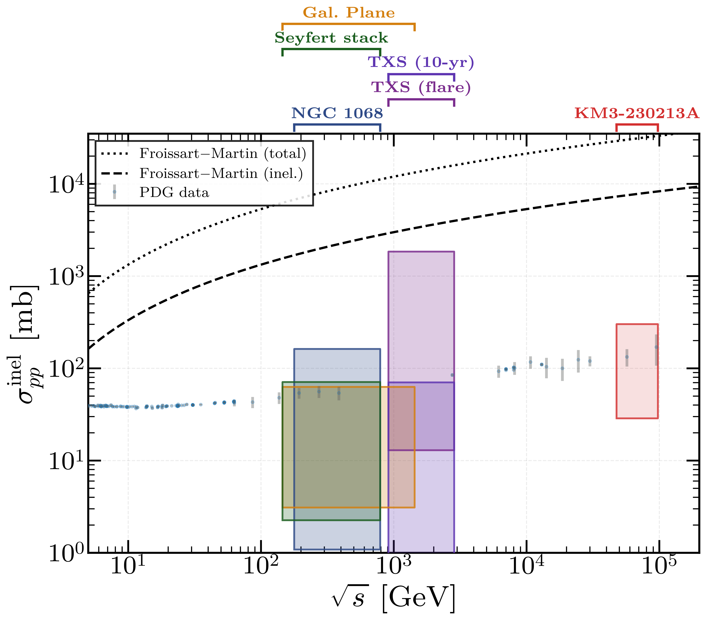
图注：\textbf{\textit{Allowed values of the inelastic $pp$ cross section from neutrino observations.}} The blue band shows the constraint from NGC~1068. The purple band shows the TXS~0506+056 constraint from the 2014--15 flare luminosity, and the indigo band shows the constraint using the 10-year time-integrated luminosity, which is a factor $\sim 25$ lower and yields a correspondingly tighter lower bound; both assume a BZ+MAD beaming-corrected $L_{\rm CR,max}^{\rm iso} \simeq 3.4 \times 10^{49}$~erg\,s$^{-1}$ (see text). The orange band shows the Galactic Center Plane constraint. The green band shows the constraint from the stacked Seyfert population (excluding NGC~1068). The red band shows the KM3-230213A projection adopting a ``standard-candle'' idealization: target column and CR luminosity fixed to their best-estimate values, band width driven only by the neutrino-luminosity uncertainty, centred on the SM prediction at $\sqrt{s} \sim 50$--$100$~TeV. For comparison, we show PDG data from collider and fixed-target experiments~\(\cite{ParticleDataGroup:2024cfk}\) and the Froissart--Martin unitarity bound~\(\cite{Martin:2009pt}\) for the total (dotted) and inelastic (dashed) cross sections. Center-of-mass energies are computed self-consistently using the \(\textsc{Pythia}-derived\) $\langle\xi_\nu\rangle(\sqrt{s})$.
对应解读：对应“建议重点查看的图表”第1项截面约束总览图、第6项与幺正性和实验室结果比较，以及“关键图表逐图导读”图1。
入选理由：这是pp非弹性截面约束的核心总览图，横轴为质心能量sqrt(s)，纵轴为sigma_pp，并同时展示NGC 1068、TXS 0506+056、银河中心平面、Seyfert叠加和KM3-230213A等来源的约束带，还叠加PDG实验数据与Froissart-Martin幺正性界限。它最直接支撑日报关于覆盖能区、超过LHC以及强于幺正性限制的解读。
来源与置信度：\(arxiv_source\)；high；\(arxiv_source\) / main.tex:figure[1]
Fig02
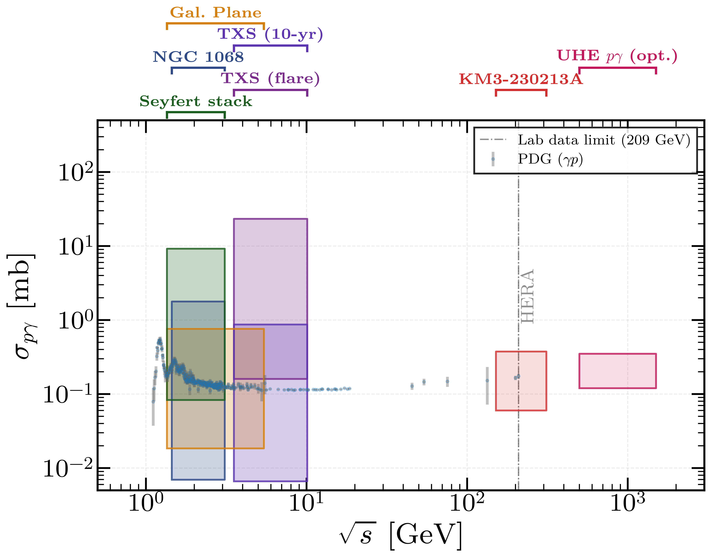
图注：\textbf{\textit{Allowed values of the inelastic $p\gamma$ cross section from neutrino observations, assuming a 10~keV X-ray target photon field.}} The target photon field density is computed from the absorption-corrected intrinsic X-ray luminosity of each source (from the BASS catalog~\cite{Koss:2022ApJS}), rather than from the directly observed flux; the absorption correction accounts for photoelectric attenuation by cold line-of-sight gas. We further assume that the coronal region is transparent to $\gamma\gamma$ pair production at the TeV energies relevant for the associated neutrinos, so that the inferred photon-field density is a good proxy for the target traversed by accelerated protons. Source colors and TXS~0506+056 flare/10-year conventions are as in Fig.~\(\ref{fig:limits_pp}.\) The red and pink bands (KM3-230213A and UHE $p\gamma$ projections) adopt a ``standard-candle'' idealization: the target photon column and CR luminosity are fixed to their best-estimate values and only the neutrino luminosity uncertainty is propagated, yielding narrow bands centered on the SM prediction at the corresponding $\sqrt{s}$. The UHE band specifically shows the most optimistic configuration: perfect handle on $L_\nu$ and $N_\gamma^{\rm eff}$ and highest attainable energy ($\sqrt{s} \sim 0.5$--$1.5$~TeV), beyond the HERA reach. For comparison, we show photoproduction data from HERA and fixed-target experiments~\(\cite{ParticleDataGroup:2024cfk}.\)
对应解读：对应“建议重点查看的图表”第1项pγ截面约束总览、第6项与HERA和固定靶结果比较，以及“关键图表逐图导读”图1和图4中关于pγ能区的讨论。
入选理由：这是pγ非弹性截面约束的总览图，明确假设10 keV X射线目标光子场，并比较HERA和固定靶光致产生数据。它直接检验日报中关于pγ通道是否超过HERA、目标光子场假设如何影响约束、以及UHE投影是否只是在理想化standard-candle条件下成立的关键判断。
来源与置信度：\(arxiv_source\)；high；\(arxiv_source\) / main.tex:figure[2]
Fig03
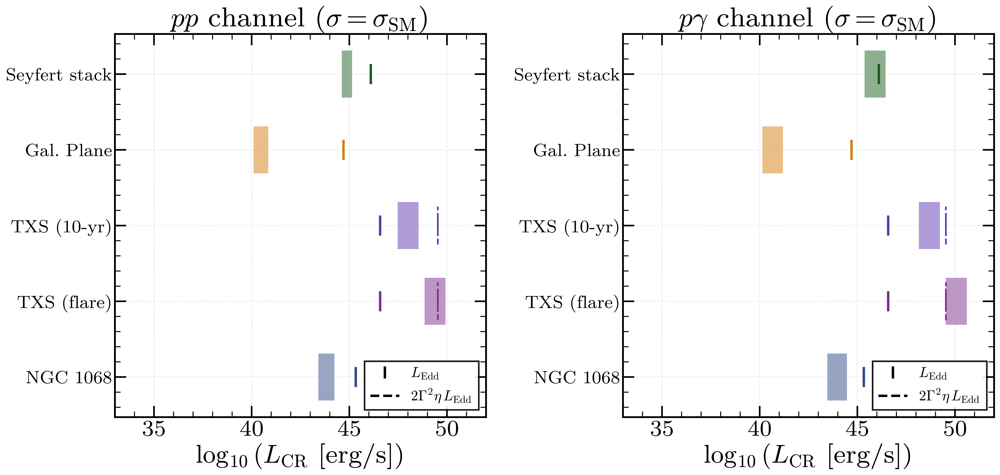
图注：\textbf{\textit{CR luminosity required to reproduce the measured neutrino luminosity when the cross section is fixed to the SM prediction, for both the $pp$ (left) and $p\gamma$ (right) channels.}} Shaded bands reflect the range of effective target column densities for each source (Table~\ref{tab:sources_transposed}). The Seyfert-stack entry uses the luminosity-weighted average black-hole mass of the 11 contributing Seyfert galaxies. TXS~0506+056 is shown separately for the 2014--15 flare and the 10-year time-integrated luminosity. Solid vertical tick marks indicate the Eddington luminosity $L_{\rm Edd}$ of the central black hole; dashed tick marks show the beaming-corrected limit $2\Gamma^2\eta\,L_{\rm Edd}$ for TXS entries ($\Gamma=15$, $\eta=2$). Sources whose CR band exceeds $L_{\rm Edd}$ require super-Eddington CR power, though beaming corrections can relax this tension.
对应解读：对应“建议重点查看的图表”第2项源输入参数与第3项模型归一化来源，也对应“关键图表逐图导读”图3和“模型拟合”中L_CR与截面退化的段落。
入选理由：该图展示在截面固定为标准模型时，为解释观测中微子光度所需的宇宙线光度，并用目标柱密度范围形成阴影带，同时标出Eddington光度和TXS的束流修正上限。它能直接说明L_CR、目标柱密度和sigma之间的退化关系，是判断截面限制是否依赖超Eddington宇宙线功率或外部源参数假设的关键图。
来源与置信度：\(arxiv_source\)；high；\(arxiv_source\) / main.tex:figure[3]
Fig06
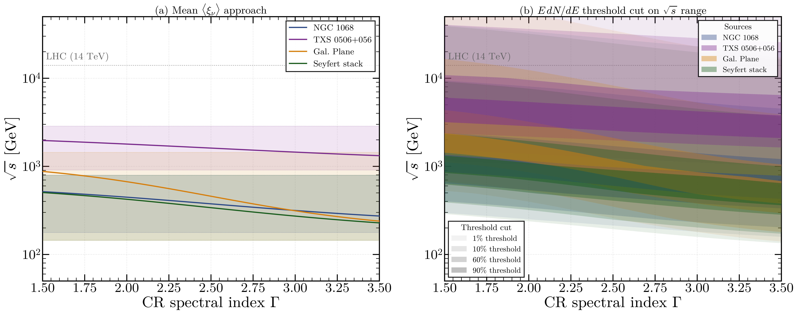
图注：\(\textbf{(a)}\) Effective center-of-mass energy $\sqrt{s}$ as a function of the CR spectral index $\Gamma$ for each neutrino source. Solid lines show the luminosity-weighted $\sqrt{s}$ computed from $\langle E_\nu \rangle_L$; shaded bands span the full observed $E_\nu$ range mapped to $\sqrt{s}$ via the \(\textsc{Pythia}-derived\) $\langle\xi_\nu\rangle$. Steeper spectra ($\Gamma \gtrsim 2.5$) weight lower neutrino energies, shifting $\sqrt{s}$ downward by up to a factor of $\sim 2$ relative to the hardest spectra ($\Gamma \simeq 1.5$). \(\textbf{(b)}\) Impact of threshold cuts on the $\sqrt{s}$ range. Nested bands show the $\sqrt{s}$ range for neutrinos with $E_\nu\,dN/dE_\nu$ above $1\%$, $10\%$, $60\%$, and $90\%$ of the spectral peak. Darker shading corresponds to tighter thresholds (neutrinos closer to the spectral peak). The horizontal dashed lines mark the LHC energy for reference.
对应解读：对应“建议重点查看的图表”第4项E_nu到sqrt(s)映射诊断、第5项稳健性或nuisance参数扫描图，以及“模型拟合”中谱指数和能区映射系统误差的讨论。
入选理由：该图直接给出有效sqrt(s)如何随宇宙线谱指数Gamma变化，并展示不同能谱峰值阈值切割对sqrt(s)范围的影响，还标出LHC能量参考线。它比单纯的示意图更适合支撑日报关于能量映射、谱指数系统误差以及“自然对撞机探测哪个能区”的技术性解读。
来源与置信度：\(arxiv_source\)；high；\(arxiv_source\) / main.tex:figure[6]
Fig05
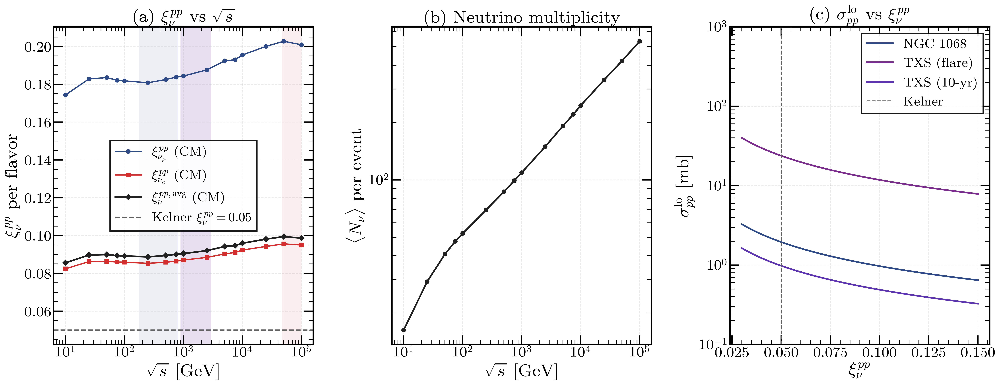
图注：\textbf{\textit{\textsc{Pythia\,8} neutrino properties from inelastic $pp$ collisions.}} \(\textit{Left:}\) Energy fraction $\xi_\nu^{pp}$ per flavor as a function of $\sqrt{s}$, with the Kelner {\(\it\) et al.} analytical estimate ($\xi_\nu^{pp} = 0.05$~\cite{Kelner:2006tc}) shown as a dashed line. Shaded vertical bands indicate the $\sqrt{s}$ ranges probed by each source (NGC~1068, Galactic Center, TXS~0506+056, Seyfert stack). \(\textit{Center:}\) Mean neutrino multiplicity per event. \(\textit{Right:}\) Lower bound on $\sigma_{pp}$ as a function of $\xi_\nu^{pp}$ for NGC~1068, TXS 0506, and the Galactic Plane, illustrating the sensitivity of the cross-section constraint to the neutrino energy fraction.
对应解读：对应“建议重点查看的图表”第5项稳健性检查，以及“模型拟合”中介子多重数、非弹性能量分配和xi_nu对截面限制影响的段落。
入选理由：该图展示Pythia推导的每味中微子能量分数xi_nu、平均中微子多重数，以及sigma_pp下限对xi_nu的敏感性。它能支撑日报中关于理论系统误差、能量分配假设和截面约束归一化不确定性的讨论，尤其说明约束并非只由观测通量决定，还依赖pp次级粒子产生模型。
来源与置信度：\(arxiv_source\)；high；\(arxiv_source\) / main.tex:figure[5]
Fig04
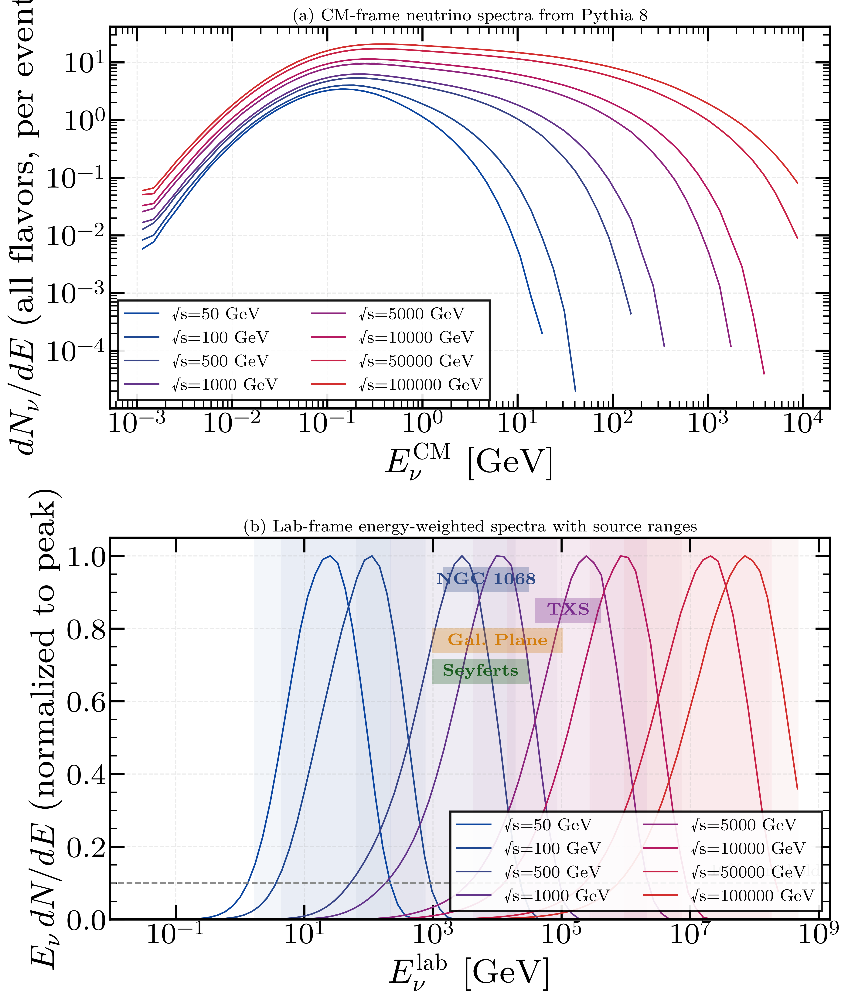
图注：\textbf{\textit{\textsc{Pythia\,8} neutrino energy distributions from inelastic $pp$ collisions.}} \(\textit{Top:}\) Center-of-mass frame spectra $dN_\nu/dE$ at selected $\sqrt{s}$ values. \(\textit{Bottom:}\) Lab-frame energy-weighted spectra $E_\nu\,dN/dE$, normalized to the peak, with vertical shaded regions showing the observed neutrino energy ranges for each source (NGC~1068, Galactic Center, TXS~0506+056, Seyfert stack). The horizontal dashed line indicates the 10\% threshold of the peak value used to define the effective energy range for each $\sqrt{s}$.
对应解读：对应“建议重点查看的图表”第3项中微子通量或事件能区对比、第4项E_nu到sqrt(s)映射诊断，以及“关键图表逐图导读”图2和图4的能谱映射部分。
入选理由：该图给出不同sqrt(s)下pp碰撞产生的中微子能谱，并在实验室系中标出NGC 1068、银河中心、TXS 0506+056和Seyfert叠加的观测中微子能量范围。它有助于解释作者如何把观测E_nu范围映射到有效sqrt(s)，以及为何使用谱峰10%阈值定义有效能区。
来源与置信度：\(arxiv_source\)；high；\(arxiv_source\) / main.tex:figure[4]
强相关工作
同一源和同类源背景非常重要。TXS 0506+056 有 IceCube 2018 年关于高能中微子 IC-170922A 与多信使耀变体耀发关联的论文，以及独立的历史中微子 flare 搜索；NGC 1068 有 IceCube 关于 Seyfert 星系高能中微子证据的论文；银河面有 IceCube 近年的弥散银河中微子发射结果。本文不是重新发现这些源，而是把这些已发布关联或通量作为输入，重新解释为 \(pp\) 或 \(p\gamma\) 截面约束。检索关键词可用 “TXS 0506+056 IceCube neutrino association”、“NGC 1068 IceCube neutrino emission”、“IceCube Galactic plane neutrino emission”、“Seyfert galaxies stacked neutrino search”。
基础理论方面，需要把本文放在强子相互作用截面、Froissart bound、宇宙线空气簇射截面测量和 \(p\gamma\) 介子产生模型的背景下读。可能的相反观点或张力来自两类工作：一类认为某些候选源的中微子关联统计显著性或源类解释仍不足，另一类指出天体源中 \(L_{\rm CR}\)、遮蔽和级联约束仍有较大系统误差。因此，本文的限制最好理解为“若这些源模型成立，则截面受到限制”，而不是独立于源物理的粒子物理测量。检索关键词可用 “Froissart bound hadronic cross section”、“ultra high energy neutrino cross section astrophysics”、“cosmic ray air shower proton proton cross section”、“photohadronic neutrino production AGN”。
同一事件 / 同类源线索：
- https://arxiv.org/abs/2607.19254
- https://arxiv.org/abs/1807.08794
- https://arxiv.org/abs/1807.08816
- https://arxiv.org/abs/2211.09972
- https://arxiv.org/abs/2307.04427
相似工作：
- https://arxiv.org/abs/1807.08794
- https://arxiv.org/abs/1807.08816
- https://arxiv.org/abs/2211.09972
- https://arxiv.org/abs/2307.04427
基础理论 / 方法工作：
相反观点 / 张力线索：
（未提供）
2. Searching for $γ$-ray emission from a bona fide Compact Symmetric Object sample: a $γ$-ray signal near GB6 J0906+4124
- 来源：arXiv / astro-ph.HE
- 链接：https://arxiv.org/abs/2607.18810v1
- 作者：Ying-Ying Gan, Kai Wang, Ji-Shun Lian, Run-Meng Wang
- 评分：novelty 6/10，importance 7/10，relevance 10/10，final 8.75/10
- 推荐理由：16年Fermi-LAT系统搜索CSO的GeV伽马射线辐射，并报告GB6 J0906+4124附近约4.9σ候选信号；虽证据尚不牢固，但主题高度契合伽马射线AGN研究。
中文题目：在可靠致密对称源样本中搜寻 γ 射线辐射：GB6 J0906+4124 附近的一个候选 γ 射线信号
做了什么：这篇文章用 16 年 Fermi-LAT 数据系统检索一组“bona fide”致密对称源（CSO）的 γ 射线辐射，核心问题是年轻射电活动星系核是否普遍产生可探测的 GeV 高能辐射。作者没有发现能被牢固归属到任何 CSO 的显著信号，只在 GB6 J0906+4124 附近发现一个 0.1--300 GeV 波段 \(\mathrm{TS}=28.7\) 的候选信号，约相当于 \(4.9\sigma\)。由于 Fermi-LAT 点扩散函数较宽、邻近源混淆和多波段对应体仍不充分，文章把它称为“plausible counterpart”而不是确证探测。主要结论是：CSO 的 GeV 辐射要么并不常见，要么大多低于现有 LAT 长时标巡天灵敏度。
为什么重要：CSO 常被视为年轻射电星系或喷流早期阶段的候选对象；如果它们能稳定产生 \(\gamma\) 射线，就会直接约束年轻喷流、致密射电叶瓣、核区光子场和高能粒子加速的耦合。本文重要之处不在于宣布一个新源，而在于给出一项负结果占主导的系统检索：在可靠 CSO 样本中，GeV 可探测辐射并非普遍现象。
理论 / 观测 / 仪器方法价值：对理论而言，这个结果限制了把 CSO 作为普遍 GeV 亮源族群的模型；对观测而言，它给出 LAT 长基线数据下 CSO 搜索的现实灵敏度边界，并提示候选源必须依赖更精细的多波段和更高角分辨率数据确认；对方法而言，文章展示了在大 \(\mathrm{PSF}\)、弱信号和潜在背景混淆条件下，如何谨慎处理 \(\mathrm{TS}\) 信号与物理对应体之间的距离。
为什么应该关注：如果你关心年轻活动星系核、喷流启动、射电星系高能辐射或 LAT 弱源搜索，这篇文章值得看，因为它把一个容易被个别亮例子带偏的问题重新放回样本统计框架：少数 CSO 的 \(\gamma\) 射线探测并不自动意味着该类源普遍明亮。GB6 J0906+4124 附近信号也提供了一个适合后续 VLBI、射电光谱、X 射线和更长时标 Fermi 数据联合检验的具体目标。
展开详细解读：文章讲解、背景、理论、重点章节、图表与相关工作
文章详细讲解
科学问题：CSO 是小尺度、双边结构近似对称的射电活动星系核，常被解释为年轻射电源或受限喷流系统。若它们处于喷流早期阶段，致密叶瓣、热点和核区喷流都可能加速非热粒子，并通过同步辐射、同步自康普顿或外康普顿过程产生 \(\gamma\) 射线。过去已有少数被认为与 CSO 有关的 Fermi-LAT 探测案例，这使一个自然问题变得重要：CSO 的 GeV 辐射是普遍而弱、少数而强，还是很多已报探测其实受源分类和空间混淆影响？
作者怎么做：本文选取一个“bona fide” CSO 样本，而不是宽泛的紧致射电源、GPS 或 CSS 样本，然后使用 16 年 Fermi-LAT 巡天数据在 0.1--300 GeV 范围内搜索对应 \(\gamma\) 射线辐射。分析的关键不只是看 CSO 坐标附近有没有光子过量，而是要把 LAT 标准背景模型、邻近已知源、弥散辐射和能量相关点扩散函数一起纳入似然框架。由于 LAT 在低能端角分辨率较差，空间关联本身不能作为强确认标准。
关键结果：样本层面没有任何 CSO 获得可被“牢固关联”的显著 \(\gamma\) 射线信号。唯一突出的候选位于 GB6 J0906+4124 附近，在 0.1--300 GeV 总能段得到 \(\mathrm{TS}=28.7\)，按常用近似约为 \(4.9\sigma\)。作者强调，GB6 J0906+4124 在 LAT 平均 \(\mathrm{PSF}\) 的 \(68\%\) 包含半径内，并且从源分类和多波段覆盖看是合理候选对应体；但“合理”并不等于“唯一”或“确证”。这一区分很重要，因为弱 GeV 源的定位误差、背景模型残差和邻近未建模源都可能制造类似信号。
局限和下一步：本文的主要局限来自 LAT 的角分辨率和灵敏度，而不是简单的数据年限不足。对于低红移、低功率或内禀弱的 CSO，即使用 16 年数据也可能只给出上限。GB6 J0906+4124 的候选信号需要后续多波段跟进：VLBI 可确认射电结构与活动状态，射电到 X 射线光谱可约束同步与逆康普顿组分，未来继续累积 LAT 数据或用更优事件类重做分析可检验信号是否稳定增强。真正有判别力的是位置、能谱、时间变化和多波段能量分布的一致性，而不是单独一个 \(\mathrm{TS}\) 数值。
关键结果是怎么做出来的
本文最重要的证据链从样本选择开始。作者没有把所有紧致射电源都纳入，而是针对“bona fide” CSO 样本做检索；这能降低分类污染，因为 GPS、CSS、投影成小尺度的耀变体或核心主导源会显著改变 \(\gamma\) 射线期望。样本的科学含义是：若在这种更纯净的 CSO 集合里仍很少出现 LAT 探测，那么结论更接近 CSO 本身的高能辐射性质，而不是混合样本的平均结果。
数据方面，作者采用 16 年 Fermi-LAT 观测，并在 0.1--300 GeV 范围内进行似然检验。关键统计量是检验源存在与否的 \(\mathrm{TS}\)，即含候选点源模型与无该源模型的对数似然差。只有 GB6 J0906+4124 附近达到 \(\mathrm{TS}=28.7\)，对应近似 \(4.9\sigma\)。需要注意，这个 \(\sigma\) 近似通常是局部显著性解释；在扫描多个 CSO 位置、多个能段或多个模型设置时，试验因子和系统误差会削弱“发现”语气。
模型比较的核心是：在目标区域加入一个候选 \(\gamma\) 射线点源是否显著改善 LAT 计数图的拟合。支撑结论的图表通常应包括 \(\mathrm{TS}\) 图、候选源与 GB6 J0906+4124 的相对位置、能谱点或上限、以及源模型加入前后的残差图。如果 \(\mathrm{TS}\) 峰值和射电位置在 LAT 定位误差范围内一致，且背景残差没有表现为大尺度弥散结构误建模，那么“候选对应体”解释才更可信。
系统误差主要来自四类：银河系弥散背景模型、各向同性背景归一化、邻近 Fermi 目录源的谱形和通量、以及 LAT 能量相关 \(\mathrm{PSF}\)。低能光子数多但定位差，高能光子定位好但统计少；因此在 0.1--300 GeV 综合能段得到的 \(\mathrm{TS}\) 需要分能段检查，确认不是低能背景残差主导。若文中给出不同能量下的 \(\mathrm{TS}\) 或谱能量分布点，应优先检查高能点是否仍支持同一位置的点源解释。
稳健性方面，最值得关注的是作者是否改变了感兴趣区域大小、自由参数范围、背景源选择、能量下限和事件选择后仍得到相近结果。本文摘要给出的措辞很谨慎：没有“firmly associated”的 CSO，只说 GB6 J0906+4124 是 plausible counterpart。这说明证据链尚未达到可靠关联所需的多重一致性，尤其缺少独立时间变化或多波段同步活动作为确认。
展开背景、理论、公式、模型、章节和图表导读
背景知识
CSO 通常指射电尺度小于千秒差距、两侧喷流或热点结构较对称、核心不强烈多普勒增强的一类活动星系核。它们与耀变体不同：耀变体的 \(\gamma\) 射线亮度常由朝向观测者的相对论喷流和强多普勒增亮主导，而 CSO 的几何构型更接近侧向或双边结构，因此若探测到 GeV 辐射，可能提供对非耀变体喷流和年轻射电源高能过程的独立约束。
历史上，紧致射电源中的 GPS 和 CSS 族群长期被认为与年轻射电星系演化有关，但“年轻”与“受限”两种解释一直并存。一个源很小，可能因为喷流刚启动，也可能因为周围介质稠密导致扩展受阻。CSO 的双边结构和热点运动测量能帮助区分这些情形；若有高能辐射，还可以通过粒子能量密度、目标光子场和环境密度进一步约束源的物理状态。
观测背景上，Fermi-LAT 已运行超过十多年，长时间积分极大提高了弱源检出能力。不过 LAT 的点扩散函数强烈依赖能量，低能端可达到度量级，导致与射电紧致源做空间关联时容易混淆。对于 CSO 这类数量不多、单源预期较弱的对象，统计上最诚实的结果往往是“多数上限加少数候选”，而不是清晰的新源族发现。
现在值得重新看，是因为 CSO 样本分类比早期更严格，LAT 数据基线也更长，并且已有个别 CSO 候选 \(\gamma\) 射线源引发了理论兴趣。若只看已探测个例，容易高估该类源的平均高能输出；系统检索能回答更基础的问题：在同一分析框架下，究竟有多少可靠 CSO 显著发光？
该领域常见误区有三点。第一，把所有小角尺度射电源都当成 CSO，会引入被投影压缩的核心主导喷流。第二，把 LAT 位置一致性当作物理确认，忽略 \(\mathrm{PSF}\) 和背景源混淆。第三，把非探测简单解释为“无高能粒子”，但实际上非探测也可能源于距离、环境光子场、辐射效率、吸收或仪器灵敏度限制。
基础理论 / 方法脉络
从物理图像看，CSO 的高能辐射可来自核区小尺度喷流、射电热点或致密叶瓣中的非热电子。电子在磁场中产生同步辐射，给出射电到红外或 X 射线组分；同一批电子还可把同步光子或外部光子逆康普顿散射到 \(\gamma\) 射线。若喷流没有强多普勒增亮，观测到的 GeV 通量通常会比耀变体低得多。
本文检索依赖的关键观测量不是单个光子的能量，而是给定天区、能量和时间范围内的计数分布。LAT 分析把天空模型折叠进仪器响应函数，包括有效面积、能量响应和点扩散函数，然后与观测计数进行似然比较。候选源是否存在由 \(\mathrm{TS}\) 衡量；\(\mathrm{TS}\) 越高，加入该源对数据的解释越明显。
对 CSO 搜索而言，\(\mathrm{PSF}\) 是核心限制。低能 \(\gamma\) 射线贡献大量计数，但角分辨率差；高能光子定位更好，但数量少。一个总能段 \(\mathrm{TS}\) 峰值与射电源相距不远，并不保证二者物理关联，必须看定位误差椭圆、分能段 \(\mathrm{TS}\)、残差图和邻近源模型。
模型假设通常包括：候选 \(\gamma\) 射线源为点源，谱形可用幂律或简单曲率谱近似；区域内目录源和弥散背景按 LAT 标准模板建模；部分邻近源归一化或谱指数在拟合中释放。若真实源有扩展结构、强时间变化、复杂谱形或未建模邻近源，简单点源幂律模型可能把背景残差误认为新源。
常见退化包括候选源通量与弥散背景归一化退化、谱指数与能量下限选择退化、候选源位置与邻近目录源通量退化。对弱源而言，上限和边缘显著信号同样有价值，因为它们直接限制 CSO 中非热粒子能量密度和逆康普顿效率。
公式与推导
第一步是把源的内禀光子谱与观测计数联系起来。若候选 CSO 的光子谱近似为幂律，可写为
其中 \(N_0\) 是在枢轴能量 \(E_0\) 处的归一化，\(E\) 是光子能量，\(\Gamma\) 是光子谱指数。这个式子是 LAT 弱源分析中最常用的第一近似，适用于统计不足以支持复杂曲率模型的情形。
第二步是计算能量通量或光子通量。光子通量为
能量通量为
这里 \(E_{\min}\) 和 \(E_{\max}\) 对应本文的 \(0.1\,\mathrm{GeV}\) 与 \(300\,\mathrm{GeV}\)。若已知红移 \(z\) 和光度距离 \(d_L\)，可由 \(S_\gamma\) 估算各向同性等效光度。
第三步是从通量走向 LAT 计数。对空间像素 \(p\) 和能量 bin \(k\)，模型预期计数可表示为
其中 \(T\) 是曝光时间，\(A_{\rm eff}\) 是有效面积，\(P\) 是点扩散函数，\(R\) 是能量响应，\(I(E,\Omega)\) 是天空强度模型。这个式子说明源关联为何受 \(\mathrm{PSF}\) 限制：真实方向 \(\Omega\) 的光子会被分布到观测方向 \(\Omega_p\)。
第四步是泊松似然。若观测计数为 \(n_{pk}\)，则
这里 \(\mathcal{L}\) 同时依赖候选源参数、目录源参数和弥散背景参数。弱源检索的本质就是判断加入候选源后 \(\mu_{pk}\) 是否显著更接近 \(n_{pk}\)。
第五步是检验统计量。LAT 点源搜索常用
其中 \(\hat{\theta}_{\rm src}\) 是含源模型下的最大似然参数，\(\theta_{\rm src}=0\) 表示无候选源。若只增加一个非负通量自由度且满足渐近条件，常用近似为
因此 \(\mathrm{TS}=28.7\) 对应约 \(5\sigma\) 的局部量级，但多位置搜索和系统误差会使实际解释更保守。
第六步是空间关联。若 LAT 定位误差近似二维高斯，角距离 \(r\) 内的包含概率可写为
其中 \(\sigma_{\rm pos}\) 是等效位置不确定度。所谓 \(68\%\) 包含半径对应特定 \(r\) 值；GB6 J0906+4124 位于该范围内只说明空间上相容，不能排除其他未建模或较暗对应体。
第七步是把通量上限转化为物理约束。若源未探测，可给出置信度为 \(C\) 的上限 \(F_{\rm UL}\)，满足
其中 \(\mathcal{P}(F|\mathrm{data})\) 是通量后验或由似然轮廓构造的等效概率。对于多数 CSO，本文的非探测本质上提供的是 \(F_{\rm UL}\)，从而限制模型允许的逆康普顿亮度。
第八步是物理标度。若能量通量为 \(S_\gamma\)，各向同性等效光度近似为
其中 \(K(z,\Gamma)\) 是 \(K\)-校正因子。这个量可与射电光度、X 射线光度或喷流功率比较，判断 CSO 是否服从与普通射电星系或耀变体相似的高能辐射效率。
模型拟合 / 应用方法
本文这类 LAT 搜索的拟合量通常包括候选点源的位置、光子通量、谱指数以及背景模型中若干邻近源和弥散模板的归一化。实际分析中，目标区域内强源的参数往往需要释放，否则它们的残差会投射到目标位置，虚假提高候选源的 \(\mathrm{TS}\)。对于 GB6 J0906+4124 附近信号，读者应重点看候选源位置是否固定在射电坐标，还是由似然定位自由寻找；两种做法给出的显著性含义不同。
似然框架以泊松计数为基础，比较含候选源与不含候选源两种模型。参数估计可通过最大似然得到，误差可由似然轮廓或协方差矩阵估算。若文章给出光谱能量分布点，则每个能量 bin 往往单独拟合通量，低显著性 bin 给出上限。弱源谱点的残差不应被过度解释，因为单个 bin 的 \(\mathrm{TS}\) 很容易受背景涨落影响。
主要退化关系包括候选源通量与银河弥散模板归一化的退化、谱指数与能量阈值的退化、候选源位置与邻近目录源通量的退化。如果候选信号主要来自低能段，定位和背景退化会更严重；如果高能段也有聚集光子，空间关联会更有说服力但统计误差更大。稳健的结论通常要求不同能量下的位置和谱形一致，而不是只靠全能段 \(\mathrm{TS}\)。
系统误差应通过替换弥散模型、改变感兴趣区域、调整自由源半径、改变能量下限、检查新源残差图等方式评估。对一组 CSO 做系统搜索时，还要考虑多重检验：即使每个位置的局部显著性看似不低，扫描许多目标后出现一个中等 \(\mathrm{TS}\) 峰值并不意外。本文把 GB6 J0906+4124 称为候选而非确证，正反映了这种统计谨慎。
实际应用上，这项拟合结果可作为后续观测的优先级排序。对未探测 CSO，上限可输入年轻喷流和致密叶瓣模型，限制电子能谱、磁场和目标光子密度；对 GB6 J0906+4124，候选 LAT 通量和谱形可与射电、红外、X 射线同步建模，检验是核区喷流、叶瓣逆康普顿还是无关背景源贡献。
重点章节 / 结果段落怎么读
数据/样本部分应先读。重点看“bona fide CSO”样本如何定义，是否排除了核心主导、耀变体污染或分类不稳的紧致源。样本纯度直接决定负结果的解释力度：纯样本中的非探测比混合样本中的非探测更能说明 CSO 本身不常见于 GeV。
LAT 数据处理部分应关注事件选择、能量范围、时间跨度、感兴趣区域、天顶角切除、仪器响应函数和背景模板。对弱源搜索，细节会改变 \(\mathrm{TS}\) 和上限，因此读者应确认分析是否符合 LAT 长时标点源搜索的标准流程。
似然分析和新源搜索部分是技术核心。应看作者如何处理目录源、哪些参数自由、是否做了 \(\mathrm{TS}\) 图、候选源位置是否与 GB6 J0906+4124 一致，以及 \(\mathrm{TS}=28.7\) 是固定位置还是自由定位得到的结果。
结果部分要分两层读：第一层是全样本没有牢固关联；第二层是 GB6 J0906+4124 附近有候选信号。不要把第二层覆盖第一层，因为本文的样本结论是 CSO \(\gamma\) 射线辐射不普遍或低于灵敏度，而不是发现了一个确定新 CSO \(\gamma\) 射线源。
讨论和结论部分应关注作者如何解释非探测：是内禀弱、距离远、辐射效率低、缺少多普勒增亮，还是 LAT 灵敏度不足。还应看他们对 GB6 J0906+4124 的多波段论证是否足以排除其他可能对应体。
建议重点查看的图表
-
样本天空分布图：看 CSO 在银河纬度上的分布，低纬目标更容易受银河弥散背景影响，非探测和假信号概率都不同。
-
每个 CSO 的 \(\mathrm{TS}\) 或显著性分布图/表：看是否只有 GB6 J0906+4124 突出，其他目标是否接近背景涨落预期；还要看是否存在多个边缘 \(\mathrm{TS}\) 值。
-
GB6 J0906+4124 区域的 \(\mathrm{TS}\) map：看 \(\mathrm{TS}\) 峰值、射电位置、LAT 误差圈和邻近目录源的相对几何关系。
-
残差计数图：比较加入候选源前后的残差是否显著减少，尤其检查残差是否呈点源形态而非弥散结构条纹。
-
光谱能量分布图：看各能段通量点、上限和幂律模型线；确认 \(\mathrm{TS}\) 是否由少数低能 bin 主导。
-
上限表：对未探测 CSO，看通量上限的量级、谱指数假设和曝光差异；这些上限是理论建模最直接可用的结果。
-
稳健性检验表或附录：看改变背景模型、能量下限、自由参数设置后，GB6 J0906+4124 候选信号的 \(\mathrm{TS}\) 和位置是否稳定。
关键图表逐图导读
图 1：若论文给出 CSO 样本的天空分布，横轴通常为赤经或银经，纵轴为赤纬或银纬。读图时应把目标位置与银河平面联系起来：靠近银河平面的目标背景更复杂，LAT 弥散模型误差更容易影响 \(\mathrm{TS}\)。不要只看点的数量，还要看样本是否集中在高背景区域。
图 2：若给出全样本 \(\mathrm{TS}\) 分布或表格，横轴可能是源名，纵轴是 \(\mathrm{TS}\) 或显著性。关键是看 GB6 J0906+4124 是否为唯一显著离群点，以及其他源是否形成一串接近阈值的边缘信号。若只有一个目标达到 \(\mathrm{TS}=28.7\)，这支持“少数候选而非普遍探测”的结论。
图 3：GB6 J0906+4124 附近的 \(\mathrm{TS}\) map 是最关键图。坐标轴应为空间坐标，颜色表示加入点源后的 \(\mathrm{TS}\) 改善。应检查 \(\mathrm{TS}\) 峰值与射电坐标的偏移是否落入 LAT 定位误差和相应能量的 \(\mathrm{PSF}\) 内，同时看附近是否有其他可能的射电、X 射线或目录 \(\gamma\) 射线源。
图 4：若有谱能量分布，横轴是能量，纵轴通常是 \(E^2 dN/dE\) 或能量通量。模型线可能是最佳拟合幂律，数据点带统计误差，低显著性 bin 给上限。读图陷阱是把上限当成探测点，或忽视最高能 bin 的大误差；弱源的谱指数很容易被低能背景牵引。
图 5：残差图或模型对比图应显示加入候选源前后的计数残差。真正的点源信号应在候选位置附近消除局域正残差；若残差仍呈大尺度斑块或沿银河背景结构延伸，则更可能是弥散模型问题。
图 6：若论文列出未探测源上限表，应看每个源的曝光、假设谱指数、积分通量上限和能量范围。不同源上限不能简单横向比较，因为曝光、背景和红移不同；更有物理意义的是把通量上限换算为 \(L_\gamma\) 或与射电功率比值比较。
论文原图 / 可嵌入图片
（未提供 verified figure；为避免编造图片链接，本节只在能确认官方图片 URL 或成功提取论文原图时嵌入图片。）
强相关工作
这项工作与两个方向的文献相连。第一类是 CSO、GPS、CSS 和年轻射电星系的射电结构与演化研究，关键词可检索“compact symmetric objects young radio galaxies VLBI hotspot advance speed GPS CSS review”。这些工作讨论 CSO 是否真是年轻喷流，以及射电叶瓣、热点和核区在不同年龄阶段如何演化。本文的 LAT 非探测结果应放在这个演化框架里理解：不是所有年轻射电源都必然有高 GeV 效率。
第二类是 Fermi-LAT 对非耀变体活动星系核、射电星系和紧致射电源的 \(\gamma\) 射线搜索，关键词可检索“Fermi LAT compact symmetric object gamma-ray”, “Fermi LAT young radio galaxy”, “gamma-ray CSO candidate”, “4FGL radio galaxies”。这些文献中有个别候选或已报关联，但也存在分类污染、空间混淆和选择效应问题。本文与那些“个例探测”形成互补：它强调在更严格 CSO 样本中，统计上的普遍检出并未出现。
还应注意相反观点或潜在张力：如果某些模型预言年轻致密射电叶瓣在强红外/紫外光子场中应有可观逆康普顿 \(\gamma\) 射线辐射，那么本文的大量非探测会压低允许的电子能量密度或辐射效率；但若模型假设强多普勒增亮或高密度环境只适用于少数源，非探测并不构成直接否定。后续需要把 LAT 上限与每个源的红移、射电功率、线辐射和环境指标逐源比较。
同一事件 / 同类源线索：
相似工作：
基础理论 / 方法工作：
相反观点 / 张力线索：
（未提供）
3. A multiwavelength light curve analysis of the very fast nova V1723 Sco
- 来源：arXiv / astro-ph.HE
- 链接：https://arxiv.org/abs/2607.18595v1
- 作者：Izumi Hachisu, Mariko Kato
- 评分：novelty 6/10，importance 7/10，relevance 10/10，final 8.75/10
- 推荐理由：多波段建模很快新星V1723 Sco，并将首个GeV伽马射线探测时刻与光学峰值和冲击形成联系起来；对伽马射线新星和冲击辐射机制相关性高。
中文题目：极快新星 V1723 Sco 的多波段光变曲线分析
做了什么：这篇论文用一套自洽的新星爆发模型重新拟合极快新星 V1723 Sco 的光学、软 X 射线和 GeV 伽马射线时间行为。作者先用时间拉伸方法标定距离模数，得到 \((m-M)_V=15.3\pm0.2\)，从而给出峰值绝对星等 \(M_{V,\rm max}=-8.5\pm0.2\)。随后他们用质量为 \(1.25\,M_\odot\) 的白矮星、吸积率 \(\dot{M}_{\rm acc}=10^{-9}\,M_\odot\,{\rm yr}^{-1}\) 的完整新星爆发计算，结合自由-自由辐射解释光学 \(V\) 波段衰减，并用黑体近似解释超软 X 射线光变。关键结论是：首个 GeV 伽马射线探测时间几乎与模型的 \(V\) 波段峰值重合，这支持强激波在光学极大后很快、且在白矮星光球之外形成；作者进一步认为产生伽马射线的 shocked shell 对自身辐射是光学薄的。
为什么重要：经典新星中的 GeV 伽马射线起源仍然是高能天体物理中的活跃问题：激波在哪里形成、何时形成、能否在稠密喷流中逃逸，直接决定粒子加速和辐射转移图像。V1723 Sco 是一个衰减很快的新星，时间尺度短使得爆发模型、喷流动力学和高能辐射时序之间的约束更强。本文的重要性在于，它不是只把光学峰和伽马射线峰做经验对齐，而是把光学自由-自由辐射、超软 X 射线 turn-on/turn-off 和伽马射线首次探测放进同一套白矮星爆发演化时钟中。
理论 / 观测 / 仪器方法价值：对理论而言，本文给出一个可检验的极快新星参数组合：较高质量白矮星 \(M_{\rm WD}=1.25\,M_\odot\)、较低长期吸积率 \(\dot{M}_{\rm acc}=10^{-9}\,M_\odot\,{\rm yr}^{-1}\)，以及 optically thick wind 主导的快速演化。对观测而言，它把距离模数、峰值绝对星等、\(V\) 波段下降、超软 X 射线出现时间和 GeV 探测时间联系起来，提供了一个判断伽马射线是否来自光球外部激波的时序诊断。对方法而言，时间拉伸法与物理新星模型的结合，是把不同新星放到同一标尺上比较的一种实用路径。
为什么应该关注：如果你关心新星是否是有效的宇宙线加速器、Fermi-LAT 新星伽马射线的辐射机制、或者白矮星质量如何控制新星光变速度，这篇文章值得看。它的核心信息很直接：在 V1723 Sco 中，光学峰值和 GeV 首次探测的同步性不是偶然的时间巧合，而可能是激波在光球外迅速形成的证据。它也提醒读者，解释伽马射线新星不能只看高能数据；光学和超软 X 射线给出的喷流、光球和核燃烧时钟同样关键。
展开详细解读：文章讲解、背景、理论、重点章节、图表与相关工作
文章详细讲解
科学问题：V1723 Sco 是一颗非常快的新星，光学衰减时间短，说明白矮星质量可能较高、包层质量较小、风相持续时间短。这样的系统特别适合检验两个问题：第一，能否用一套物理自洽的新星爆发模型同时解释光学和超软 X 射线光变；第二，Fermi 能看到的 GeV 伽马射线是否与光学峰附近的激波形成有因果联系。作者把问题聚焦在多波段光变的共同时间轴上，而不是单独拟合某一段观测。
作者怎么做：论文先使用 Hachisu 和 Kato 常用的时间拉伸方法，把 V1723 Sco 的 \(V\) 波段光变与模板新星光变进行横向和纵向变换，由此得到 \(V\) 波段距离模数 \((m-M)_V=15.3\pm0.2\)。在这个距离标尺下，观测峰值 \(m_{V,\rm max}=6.77\) 对应 \(M_{V,\rm max}=-8.5\pm0.2\)。然后作者采用完全自洽的新星爆发序列，包括热核失控、包层膨胀、光球演化和 optically thick wind，选取 \(M_{\rm WD}=1.25\,M_\odot\) 与 \(\dot{M}_{\rm acc}=10^{-9}\,M_\odot\,{\rm yr}^{-1}\) 的模型。光学 \(V\) 波段主要用喷流中的自由-自由辐射描述，超软 X 射线则用白矮星光球的黑体近似估算。
关键结果：该模型能再现 V1723 Sco 的总体 \(V\) 波段光变，包括快速下降段；也能解释超软 X 射线光变出现和消失的大致时序。最有物理指向性的结果是，第一批 GeV 伽马射线探测时间几乎落在模型预测的 \(V\) 波段峰值附近。作者据此认为，强激波不是在光球深处形成后被厚包层长期掩蔽，而是在光学极大后很快、并且在白矮星光球之外的外层喷流中形成。由于 GeV 光子能够逃逸，产生辐射的 shocked shell 应该整体上是光学薄的，至少对相关高能光子和主要吸收过程不是高度不透明。
局限和下一步：本文的高能辐射部分主要是时序论证，并没有做完整的粒子加速、非热谱和辐射转移计算。黑体近似处理超软 X 射线也会忽略白矮星大气吸收边、非局域热平衡效应以及星际吸收不确定性。距离模数依赖时间拉伸法和模板选择，系统误差可能不止形式上的 \(0.2\) mag。下一步自然是把同一爆发模型输出的风速、质量损失率和密度结构输入到激波加速模型中，计算 \(\pi^0\) 衰变、逆康普顿或轫致辐射的 GeV 光变和谱形，并与 Fermi-LAT 的逐日似然结果直接比较。
关键结果是怎么做出来的
本文最重要的证据链从样本选择开始：对象不是一个新星统计样本，而是单个极快新星 V1723 Sco。作者收集可用的多波段光变，包括光学 \(V\) 波段、超软 X 射线以及 GeV 伽马射线探测时间。由于单源研究无法靠大样本平均压低随机误差，关键在于不同波段是否能被同一物理时钟排序：光学峰、自由-自由衰减、风相结束、超软 X 射线出现、核燃烧结束以及 GeV 首次探测是否互相一致。
距离和峰值亮度的确定是第一步。作者用时间拉伸法比较 V1723 Sco 与模板新星光变，得到 \((m-M)_V=15.3\pm0.2\)。这一步相当于把光变速度差异转化为亮度差异，再把观测峰值 \(m_{V,\rm max}=6.77\) 转成 \(M_{V,\rm max}=-8.5\pm0.2\)。支撑这一点的图通常应展示模板光变经时间伸缩和星等平移后与 V1723 Sco 数据点的重合程度；读者要特别看峰值附近和下降早期是否被同一伸缩因子同时描述，而不是只在某一小段拟合得好。
核心模型比较是第二步。作者将 \(M_{\rm WD}=1.25\,M_\odot\)、\(\dot{M}_{\rm acc}=10^{-9}\,M_\odot\,{\rm yr}^{-1}\) 的自洽新星模型与观测光变叠加。\(V\) 波段用自由-自由辐射近似，主要对风的密度和质量损失率敏感；超软 X 射线用黑体近似，主要对光球温度、半径和吸收后的可见性敏感。论文的说服力来自两个波段的时序同时被解释，而不是仅仅通过调节光学归一化得到一条好看的曲线。
显著性或置信度方面，摘要没有显示作者对 GeV 同步性给出独立的形式统计显著性，例如随机时间重合概率或完整的联合似然比。其论证更接近物理一致性检验：Fermi 首个 GeV 探测时刻与模型 \(V\) 峰值几乎一致，而在爆发模型中 \(V\) 峰附近正是光球膨胀、风相和外层喷流结构迅速变化的阶段，容易产生快慢物质碰撞。读者应把它理解为“强物理暗示”，而不是已经完成了非热辐射模型的统计排他性证明。
主要系统误差包括：时间拉伸模板选择、消光和距离模数、光学峰值时间采样、超软 X 射线吸收柱密度、黑体近似偏差、Fermi-LAT 在弱源条件下的逐日曝光和背景建模。稳健性检验应关注：改变距离模数 \(\pm0.2\) mag 后白矮星质量是否仍偏向 \(1.25\,M_\odot\)；更换模板新星后 \(V\) 峰时刻是否仍与 GeV 首检重合；改变 X 射线吸收后超软相持续时间是否仍支持同一模型。若这些检验都稳定，则“光球外光学薄激波”解释更可信。
展开背景、理论、公式、模型、章节和图表导读
背景知识
经典新星是白矮星从伴星吸积富氢物质后发生热核失控的结果。吸积包层在电子简并条件下累积到临界质量，氢燃烧失控释放能量，使包层膨胀并驱动喷流。观测上，新星会在光学迅速增亮，随后以不同速度衰减；快新星通常对应较高白矮星质量和较小点火包层质量。
V1723 Sco 属于非常快的新星。所谓“快”并不只是描述光变好看，而是直接对应物理时间尺度：包层越小、白矮星引力势越深，喷流和核燃烧阶段越短，光学衰减越快，超软 X 射线阶段也更早出现或更短暂。因此，V1723 Sco 这类对象能强约束 \(M_{\rm WD}\)、包层质量、风相持续时间和剩余核燃烧时间。
过去十多年里，Fermi-LAT 发现多颗经典新星具有 GeV 伽马射线辐射，改变了“新星只是低能热辐射暂现源”的旧图像。伽马射线通常被解释为激波中加速粒子的非热辐射，可能来自强子过程中的 \(\pi^0\) 衰变，也可能来自电子的逆康普顿或非热轫致辐射。问题在于，新星喷流密度高、几何复杂、速度分层明显，激波位置和光学深度会强烈影响伽马射线能否逃逸。
现在重新分析 V1723 Sco 的原因，是多波段数据和新星理论模型已经成熟到可以做“时序闭合”检验。单看光学峰无法判断激波，单看 GeV 探测也难以定位激波位置；但如果光学、超软 X 射线和 GeV 的时间顺序都能被同一白矮星爆发模型解释，就能显著缩小物理图像的自由度。
该领域常见误区之一是把光学峰等同于热核能量释放峰。实际上，光学峰主要受光球半径、温度、喷流光深和再处理控制，并不一定等同于核燃烧功率最大。另一个误区是认为看到 GeV 光子就说明整个喷流稀薄；更准确地说，至少 GeV 产生区到观测者方向的吸收和散射光深不能太大。本文的“shocked shell 光学薄”也应在这一语境下理解。
基础理论 / 方法脉络
新星爆发的基本物理图像是：白矮星表面逐渐积累富氢物质，当底部温度和压力足够高时发生热核失控，包层膨胀到巨大的光球半径。早期光学亮度很高，部分原因是高温辐射在膨胀包层中被重新处理到可见光。随后包层质量通过核燃烧和风损失减少，光球收缩、有效温度上升，软 X 射线尤其是超软 X 射线变得可见。
Hachisu 和 Kato 模型的关键假设之一是 optically thick wind。也就是说，在爆发的一段时间内，白矮星包层不只是静态膨胀，而会连续驱动高密度风。风的质量损失率 \(\dot{M}_{\rm wind}\)、风速 \(v_{\rm wind}\)、光球半径 \(R_{\rm ph}\) 和有效温度 \(T_{\rm ph}\) 随时间演化，决定光学自由-自由辐射和超软 X 射线出现时刻。
光学 \(V\) 波段在这类模型中常用自由-自由辐射近似描述。自由-自由辐射来自电离气体中电子在离子库仑场中加速产生的连续谱，其发射量近似与密度平方成正比。因此，\(V\) 波段衰减不仅反映光球变暗，也反映风密度和喷流质量损失率的下降。这个近似在光学连续谱由外层电离风主导时较有效，但若谱线、尘埃、非球对称结构或强再处理占主导，就会引入系统误差。
超软 X 射线部分使用黑体近似，是把收缩中的白矮星光球看成温度逐渐升高的热辐射面。实际白矮星大气并非理想黑体，金属吸收边、非局域热平衡、吸收柱密度 \(N_{\rm H}\) 都会改变观测计数率。因此，黑体拟合更适合用作光变时序和数量级诊断，而不是精确的大气参数测量。
时间拉伸法背后的思想是不同新星光变存在近似同族性：如果一个新星的时间轴按因子 \(f_s\) 缩放，亮度轴按相应量平移，就可与模板新星重合。这个方法能把光变速度、绝对星等和距离模数联系起来，但退化关系明显：消光、距离、模板选择、峰值漏采和非球对称几何都可能改变推断的 \((m-M)_V\) 与 \(M_{\rm WD}\)。本文的价值在于把该方法与物理爆发模型和 X 射线时序交叉检验。
公式与推导
第一步是把观测星等与绝对星等和消光联系起来。对 \(V\) 波段有
其中 \(m_V\) 是观测视星等，\(M_V\) 是绝对星等，\(d\) 是距离，\(A_V\) 是 \(V\) 波段消光。本文用时间拉伸法直接给出 \((m-M)_V=15.3\pm0.2\)，因此可由峰值视星等得到峰值绝对星等。
第二步是峰值亮度标定：
这里 \(m_{V,\rm max}=6.77\)，误差主要来自距离模数和峰值采样。这个量检验 V1723 Sco 是否落在极快新星常见的高峰值亮度范围，也为模型归一化提供约束。
第三步是时间拉伸关系。若模板新星的时间为 \(t\)，目标新星的时间为 \(t'=t/f_s\)，则自由-自由主导光变近似满足
其中 \(f_s\) 是时间伸缩因子，\(\Delta V\) 是两条光变在星等方向的平移。物理含义是快新星在压缩时间轴后可与慢新星同族光变相匹配，而星等平移包含距离、消光和内禀亮度差异。
第四步是自由-自由辐射的基本比例。电离风的体发射率可写成近似形式
其中 \(n_e\) 是电子数密度，\(n_i\) 是离子数密度，\(T\) 是气体温度，\(g_{\rm ff}\) 是 Gaunt 因子。在光学频段且 \(h\nu\ll kT\) 时，指数项接近 \(1\)，辐射主要追踪密度平方积分。
第五步把风密度写入可观测通量。若风近似球对称且速度为 \(v_{\rm wind}\)，连续性方程给出
其中 \(\rho(r)\) 是半径 \(r\) 处密度，\(\dot{M}_{\rm wind}\) 是风质量损失率。于是自由-自由通量近似满足
这里 \(R_{\rm ph}\) 是内边界量级的光球半径。该式说明 \(V\) 波段下降可以由 \(\dot{M}_{\rm wind}\) 降低、\(v_{\rm wind}\) 改变和 \(R_{\rm ph}\) 收缩共同驱动。
第六步是超软 X 射线的黑体近似。白矮星光球的玻尔辐射通量为
其中 \(L_{\rm ph}\) 是光球光度，\(T_{\rm ph}\) 是有效温度，\(\sigma\) 是 Stefan-Boltzmann 常数。观测到的能段通量还要乘以星际吸收和仪器响应，近似为
其中 \(B_E\) 是黑体谱，\(\sigma_E\) 是光电吸收截面，\(N_{\rm H}\) 是氢柱密度，\([E_1,E_2]\) 是 X 射线能段。
第七步是激波时序诊断。若快风追上早期慢物质，碰撞半径可用
表示，其中 \(v_{\rm fast}\) 与 \(v_{\rm slow}\) 是快、慢流速度，\(\Delta t\) 是两者发射时间差。只要 \(R_{\rm sh}>R_{\rm ph}\)，激波就在光球外，非热光子更容易逃逸。本文关于 GeV 首检与 \(V\) 峰近乎同步的解释，正是利用了这种时序-半径关系。
第八步是光学薄条件。对 shocked shell 的光深可写为
其中 \(\kappa_\nu\) 是频率 \(\nu\) 处不透明度，\(\Sigma\) 是面密度，\(M_{\rm sh}\) 是壳层质量。若 \(\tau_\nu<1\)，辐射区对该频率近似光学薄。作者结论中的“shocked shell optically thin”意味着在 GeV 逃逸和相关再处理上满足类似条件。
第九步是模型与数据的统计比较。若光变点为 \(F_i\)，误差为 \(\sigma_i\)，模型为 \(F_{\rm mod}(t_i;\boldsymbol{\theta})\)，常用诊断为
其中 \(\boldsymbol{\theta}\) 包括 \(M_{\rm WD}\)、\(\dot{M}_{\rm acc}\)、距离、消光和时间零点等。即使论文主要展示曲线匹配，读者也可用这个形式理解哪些数据点对参数约束最强。
模型拟合 / 应用方法
本文的拟合并不是单一经验函数拟合，而是分两层进行。第一层是时间拉伸法：把 V1723 Sco 的 \(V\) 波段光变与模板新星对齐，拟合或选择时间伸缩因子和星等平移量，从而得到 \((m-M)_V\)。这一层的拟合量主要是光变形状、峰值和下降速率；残差应在峰后早期最关键，因为那里同时影响峰值绝对星等和极快新星分类。
第二层是物理新星模型拟合。作者在自洽爆发序列中选取 \(M_{\rm WD}=1.25\,M_\odot\) 和 \(\dot{M}_{\rm acc}=10^{-9}\,M_\odot\,{\rm yr}^{-1}\)，模型输出 \(R_{\rm ph}(t)\)、\(T_{\rm ph}(t)\)、\(\dot{M}_{\rm wind}(t)\)、风相结束时间和核燃烧结束时间。光学数据约束自由-自由通量随时间下降，X 射线数据约束光球变热以及吸收后超软辐射何时可见。
参数退化值得特别注意。较大的距离会要求更高内禀亮度，可能推向更高白矮星质量或不同包层质量；较大的消光会改变 \(V\) 波段绝对星等；较高 \(N_{\rm H}\) 会延迟观测到的超软 X 射线 turn-on，而不一定意味着真实核燃烧更晚。\(M_{\rm WD}\)、包层质量、化学组成和 \(\dot{M}_{\rm acc}\) 之间也有退化：不同组合可能给出相近的下降时间，但对应不同的风质量和激波环境。
残差应该按物理阶段阅读，而不是只看整体曲线是否穿过数据。峰值附近残差关系到距离模数和时间零点；早期下降残差关系到自由-自由辐射是否真由风密度平方控制；超软 X 射线上升段残差关系到光球收缩和吸收；下降段残差关系到核燃烧关闭时间。若某一阶段系统偏离，说明模型缺少尘埃、非球对称、谱线贡献或更复杂的吸收结构。
模型可能失败的地方主要有三类。第一，V1723 Sco 的喷流如果强烈非球对称，球对称 optically thick wind 的自由-自由通量标度会偏。第二，黑体近似可能高估或低估真实白矮星大气在软 X 射线能段的通量。第三，GeV 辐射的解释目前主要依赖时间重合，而不是完整非热谱拟合；若 Fermi-LAT 的光变峰、谱指数或截止能量与简单外部激波图像不一致，就需要引入更复杂的内外激波、双极喷流或密度团块模型。
重点章节 / 结果段落怎么读
数据和光变整理部分应先读。重点是确认 V1723 Sco 的 \(V\) 波段峰值 \(m_{V,\rm max}=6.77\)、光变时间零点、用于时间拉伸的观测区间，以及超软 X 射线和 GeV 探测时间如何标在同一时间轴上。读者应注意不同观测设施的时间采样和误差是否足够支持“几乎同时”的说法。
时间拉伸和距离模数部分是第一处方法核心。这里要看模板新星选择、伸缩因子、星等平移和最终 \((m-M)_V=15.3\pm0.2\) 的推导。不要只看最终距离模数；要看变换后的光变是否在峰前、峰后和快速下降段都合理重合。
自洽新星模型部分是第二处核心。读者应关注模型输入参数，尤其是 \(M_{\rm WD}=1.25\,M_\odot\) 与 \(\dot{M}_{\rm acc}=10^{-9}\,M_\odot\,{\rm yr}^{-1}\)，以及模型如何产生 \(V\) 波段自由-自由光变和超软 X 射线黑体光变。若论文列出风相、氢燃烧结束、光球温度演化等表格或曲线，应优先查看。
GeV 伽马射线讨论部分决定本文的高能意义。读者要看作者如何把 Fermi 首次探测时间与模型 \(V\) 峰对应起来，以及为何这被解释为光球外激波形成。这里需要区分“时间上支持”与“谱能量分布上证明”；后者如果没有完整建模，就不能过度解读。
稳健性和讨论部分应检查作者是否比较了不同白矮星质量、不同吸积率或不同距离模数。若只有一个最佳模型，读者需要自己评估相邻模型是否也能接受。对于专业读者，最值得追问的是：\(1.20\,M_\odot\) 或 \(1.30\,M_\odot\) 模型是否显著变差，还是只是视觉上略逊。
建议重点查看的图表
-
\(V\) 波段观测光变与时间拉伸模板的叠加图：看峰值、快速下降段和模板曲线是否全局一致，尤其注意是否需要人为排除异常点。
-
距离模数或峰值绝对星等推导相关图表：看 \((m-M)_V=15.3\pm0.2\) 的误差来源，模板选择是否主导系统误差。
-
自洽新星模型的 \(V\) 波段自由-自由拟合图：看 \(M_{\rm WD}=1.25\,M_\odot\) 模型是否同时通过早期峰值和后期衰减，残差是否有阶段性偏差。
-
超软 X 射线光变与黑体模型图：看 turn-on 和 turn-off 时间，而不仅是峰值；注意吸收柱密度改变可能造成的水平时间偏移。
-
多波段时间轴汇总图：看光学峰、GeV 首检、风相演化和超软 X 射线阶段的相对时序，这是本文最关键的因果论证图。
-
不同白矮星质量或模型参数比较图：若存在，应看相邻质量模型是否明显偏离观测，以判断 \(1.25\,M_\odot\) 的唯一性。
-
表格中的模型参数和特征时间：重点检查风相结束时间、核燃烧结束时间、峰值光度、距离模数和不确定度是否彼此一致。
关键图表逐图导读
图 1：通常应是 V1723 Sco 的观测 \(V\) 波段光变。横轴多半是爆发后天数或儒略日，纵轴是 \(V\) 星等，可能采用星等反向坐标。数据点显示快速上升或峰值附近以及随后的快速衰减。读图陷阱是星等轴越小越亮，且峰值可能受采样限制；如果峰值漏采，\(m_{V,\rm max}=6.77\) 会带来系统误差。
图 2：时间拉伸法对齐图。横轴是经过 \(f_s\) 缩放的时间，纵轴是平移后的 \(V\) 星等，模板新星和 V1723 Sco 应在同一曲线上重合。模型线或模板线若只在某个窄时间段贴合，而在峰后早期系统偏离，则距离模数会不稳。读者应看散点是否围绕模板随机分布，而不是呈现连续弯曲残差。
图 3：自洽新星模型对 \(V\) 波段的拟合。横轴为爆发后时间，纵轴为 \(V\) 星等或通量；实线可能表示 \(1.25\,M_\odot\) 白矮星自由-自由辐射模型。主要结论是该模型能复现整体快速下降。读图陷阱是归一化和距离模数已经被前一步约束，不能把任意垂直平移都当作自由参数。
图 4：超软 X 射线光变与黑体近似模型。横轴为爆发后时间，纵轴可能是计数率、通量或亮度；模型线反映 \(R_{\rm ph}\) 收缩与 \(T_{\rm ph}\) 升高后的软 X 射线可见性。重点看模型的 turn-on 和 turn-off 是否与数据一致。读图陷阱是黑体模型对 \(N_{\rm H}\) 极敏感，因此计数率幅度不如时间边界稳健。
图 5：多波段综合时间线或 GeV 标记图。横轴是同一爆发时间，光学模型峰、Fermi 首次 GeV 探测、X 射线阶段可能用垂直线或符号标出。本文的高能结论主要来自这里：GeV 首检几乎与模型 \(V\) 峰重合。读者要检查误差条和时间 bin 宽度；若 GeV 是按日 bin 探测，“同时”应理解为在观测时间分辨率内一致。
图 6：若论文展示不同 \(M_{\rm WD}\) 模型比较，横轴仍为时间，纵轴为 \(V\) 星等或 X 射线通量，多条曲线代表不同白矮星质量。关键是 \(1.25\,M_\odot\) 是否在光学和 X 射线两个波段同时最优。读图陷阱是单一波段可能允许多个质量，联合时序才是强约束。
论文原图 / 可嵌入图片
（未提供 verified figure；为避免编造图片链接，本节只在能确认官方图片 URL 或成功提取论文原图时嵌入图片。）
强相关工作
这篇工作属于“伽马射线新星的多波段时序建模”这一类。最直接的同类研究包括 Fermi-LAT 对 V407 Cyg、V1324 Sco、V959 Mon、V339 Del 等新星的 GeV 探测，以及后续关于新星内外激波、强子/轻子辐射机制的论文。检索关键词可用 “Fermi LAT gamma-ray novae”、“classical nova shocks”、“V1723 Sco nova multiwavelength”、“Hachisu Kato time-stretching nova”。
在理论脉络上，本文延续 Hachisu 和 Kato 的 optically thick wind 与 universal decline law 框架，把新星光学光变解释为自由-自由辐射主导，并用光变速度推断白矮星质量和距离。与之存在张力或互补的是更复杂的三维流体模拟和冲击模型，它们强调非球对称喷流、赤道密度增强、双极外流和团块结构可能显著改变光学与高能辐射的对应关系。因此读者应把本文看成一个高度组织化、物理透明的一维时序模型，而不是对所有新星几何复杂性的最终描述。
对于 V1723 Sco 这一具体源，本文是同源多波段解释的一部分；读者还应检索该新星的发现通报、光谱速度测量、Swift/XRT 超软 X 射线观测和 Fermi-LAT 新星目录。若要找历史类比，可比较其他极快或快速 GeV 新星，看光学峰与 GeV 起始时间是否也同步。
同一事件 / 同类源线索：
相似工作：
基础理论 / 方法工作：
相反观点 / 张力线索：
4. Can We Find the Emission Mechanism Behind the Extremely Bright GRB 230812B?
- 来源：arXiv / astro-ph.HE
- 链接：https://arxiv.org/abs/2607.18437v1
- 作者：Utkarsh Pathak, Sameer K. Patil, Hitesh Tanenia, Yashowardhan Rai, Viswajeet Swain, Anuraag Arya, Gaurav Waratkar, Anirudh Salgundi
- 评分：novelty 6/10，importance 8/10，relevance 9/10，final 8.75/10
- 推荐理由：对极亮GRB 230812B进行 prompt谱演化、偏振和宽带余辉联合分析，讨论热成分到非热成分转变；GRB高优先级，虽偏振显著性仍有限。
中文题目：能否找出极亮伽马暴 GRB 230812B 的辐射机制？
做了什么：这篇论文把 GRB 230812B 的 prompt 相时间分辨能谱、AstroSat/CZTI 在 \(300\)--\(600\,\mathrm{keV}\) 的偏振约束，以及从 X 射线到多波段的余辉建模放在一起分析。核心结论是：爆发早期的 Band 低能谱指数超过同步辐射“死亡线”，提示需要额外热成分；约 \(T_0+2\,\mathrm{s}\) 到 \(T_0+32\,\mathrm{s}\) 后期 prompt 谱则主要可由非热辐射解释。偏振只给出 \(1\sigma\) 水平的边缘下限 \(\Pi\gtrsim 50\%\)，与同步辐射相容但不足以强判磁场结构。余辉没有看到喷流折断，模型偏向一个较宽、近轴观测的喷流，半张角 \(\theta_j=15^{+6}_{-4}\,\mathrm{deg}\)，视角 \(\theta_v=0.9^{+1.8}_{-0.6}\,\mathrm{deg}\)，外部密度很低，\(n_0=1.2^{+0.3}_{-0.1}\times10^{-4}\,\mathrm{cm}^{-3}\)，各向同性等效动能 \(E_{\mathrm{k,iso}}=4.0^{+1.5}_{-0.8}\times10^{53}\,\mathrm{erg}\)。
为什么重要：GRB prompt 辐射机制长期卡在“磁化喷流同步辐射”与“光球热成分加非热化”之间。GRB 230812B 很亮、余辉长寿命、又有 prompt 偏振测量，属于少数可以把能谱演化、偏振和外激波几何联合起来讨论的事件。它的重要性不在于单独给出一个决定性答案，而在于展示同一事件的不同诊断量如何互相限制：早期硬低能谱需要热成分，后期高偏振倾向非热同步辐射，余辉又要求宽喷流和低密度环境。
理论 / 观测 / 仪器方法价值：对理论而言，本文给出一个从早期光球贡献过渡到后期非热主导的具体案例，可用于检验混合喷流或耗散光球模型。对观测而言，它说明时间分辨谱比时间积分谱更能揭示 prompt 成分变化，偏振即使显著性有限也能排除一部分低偏振几何。对方法而言，论文把 prompt 光谱、偏振和多波段余辉放入同一物理图景，提醒读者不要只用 \(\alpha\) 或只用 \(\Pi\) 判定机制。
为什么应该关注：如果你关心 GRB 的能量释放、喷流磁化、中心引擎或标准化能量关系，这个事件值得看，因为它把几个常见诊断的冲突摆在同一张桌上：早期谱形不喜欢简单慢冷同步辐射，后期偏振又不排斥有序磁场同步辐射，余辉几何还要求我们重新估算真实能量而非只看 \(E_{\mathrm{iso}}\)。这类联合分析会影响未来 THESEUS、POLAR-2、COSI、SVOM 以及印度高能瞬变任务如何设计 prompt 偏振与宽能段谱的协同观测。
展开详细解读：文章讲解、背景、理论、重点章节、图表与相关工作
文章详细讲解
科学问题：GRB 230812B 是一个极亮长暴，prompt 相和余辉都足够亮，使它成为检验 prompt 辐射机制的好样本。GRB prompt 辐射的核心争议是观测到的 \(\gamma\) 射线来自非热电子同步辐射、光球热辐射、逆康普顿，还是这些成分的混合。单靠时间积分谱容易把多个物理阶段平均掉；单靠余辉也只能约束外激波和喷流几何，无法直接告诉我们内区耗散机制。本文试图回答的问题是：GRB 230812B 的 prompt 早期和后期是否由同一种辐射机制控制，偏振和余辉能否给出一致图像。
作者怎么做：论文首先对 prompt 辐射做时间分辨光谱拟合，重点检查 Band 函数低能谱指数 \(\alpha\)、峰值能量 \(E_{\mathrm{p}}\) 以及是否需要额外热成分。然后利用 AstroSat/CZTI 在 \(300\)--\(600\,\mathrm{keV}\) 能段的康普顿双事件调制信息估计偏振分数 \(\Pi\)，并给出统计上较保守的约束。最后，作者汇总 X 射线、光学等多波段余辉数据，用外激波喷流模型拟合喷流半张角 \(\theta_j\)、视角 \(\theta_v\)、介质密度 \(n_0\)、各向同性等效动能 \(E_{\mathrm{k,iso}}\) 等参数。
关键结果：prompt 上升阶段的 \(\alpha\) 超过同步辐射“死亡线”，即比简单 optically thin 同步辐射允许的硬端更硬，因此作者认为早期谱中存在热或准热光球成分。约 \(T_0+2\,\mathrm{s}\) 至 \(T_0+32\,\mathrm{s}\) 的后期谱不再强烈要求热成分，主要符合非热辐射解释。偏振分析只达到边缘约束，给出 \(1\sigma\) 水平 \(\Pi\gtrsim 50\%\)，这与同步辐射、尤其是一定程度有序磁场中的同步辐射相容，但显著性不足以把光球模型彻底排除。余辉方面，长时间 X 射线监测未发现明确 jet break，联合建模偏向宽喷流与近轴观测，且环境密度非常低。
局限和下一步：本文最需要谨慎的地方是偏振约束的统计强度和系统误差。\(1\sigma\) 下限不能当作强探测；CZTI 的偏振测量还依赖背景、有效面积、散射几何和事件选择。光谱上，Band 加黑体、Band 加 cutoff power law 或物理同步辐射模型之间可能存在退化，特别是在有限能段和短时间 bin 内。余辉建模也有典型的 \(E_{\mathrm{k,iso}}\)、\(n_0\)、\(\epsilon_e\)、\(\epsilon_B\)、\(p\) 退化。下一步应当用更高显著性的 MeV 偏振、更宽能段 prompt 谱、早期光学和射电余辉来检验这个“早期热贡献、后期非热主导、宽喷流低密度环境”的图像。
关键结果是怎么做出来的
数据和样本选择方面，本文围绕单个事件 GRB 230812B 展开，而不是做样本统计。prompt 部分按时间切片进行能谱拟合，关键不是总 fluence 多大，而是不同时间段的 \(\alpha\)、\(E_{\mathrm{p}}\) 和模型残差是否发生系统变化。作者特别区分了上升阶段和 \(T_0+2\,\mathrm{s}\) 到 \(T_0+32\,\mathrm{s}\) 的后期阶段，因为如果把全时段合并，早期热成分可能被后期非热成分稀释，导致物理解释偏向一个过于简单的平均模型。
最重要的能谱证据来自 \(\alpha\) 与同步辐射限制的比较。在标准 optically thin 同步辐射中，低能光子谱指数通常不能硬过 \(\alpha=-2/3\)，慢冷和快冷情形还会有不同预期。论文发现上升阶段 \(\alpha\) 超过这一“line of death”，因此单一同步辐射模型难以解释。作者据此引入或偏好额外热成分；读者应检查相应时间 bin 中加入热成分后统计量改善是否集中发生在早期，而不是所有时间段都靠额外自由参数机械改善。
偏振结果的证据链来自 CZTI 的康普顿散射方位角分布。偏振光子在探测器平面产生非均匀散射方位角调制，调制振幅经仪器响应校正后转化为偏振分数 \(\Pi\)。本文给出的 \(\Pi\gtrsim 50\%\) 是 \(1\sigma\) 水平的边缘下限，说明置信度有限。读者应把它理解为“与较高偏振同步辐射相容”，而不是“已测得高偏振并排除热光球”。关键诊断应包括方位角调制曲线、无偏振模拟、最佳偏振角、背景选择以及不同事件筛选下的稳定性。
余辉建模的核心结果是无明显 jet break 以及由多波段数据推断出的宽喷流。若观测时间范围内没有出现典型的光变陡化，喷流半张角 \(\theta_j\) 往往只能给出较大值或下限；本文模型给出 \(\theta_j=15^{+6}_{-4}\,\mathrm{deg}\) 并且 \(\theta_v\) 很小，表示我们几乎沿喷流轴看过去。低密度 \(n_0\sim10^{-4}\,\mathrm{cm}^{-3}\) 对余辉峰值、冷却频率和射电亮度都有影响，也会与 \(E_{\mathrm{k,iso}}\) 和微物理参数耦合。
系统误差和稳健性检验应主要看三处。第一，prompt 光谱模型比较是否报告了统计改善、参数后验和残差结构，而不只是给出最小 \(\chi^2\) 或 C-stat。第二，偏振下限是否对背景区间、能段选择和探测器响应矩阵稳定。第三，余辉模型是否测试了均匀介质与风介质、不同 \(\epsilon_B\) 先验、是否允许能量注入或早期反向激波。如果这些替代模型没有被充分排除，那么本文结论应表述为偏好图像而非唯一机制。
展开背景、理论、公式、模型、章节和图表导读
背景知识
GRB 230812B 属于长时标伽马射线暴，通常与大质量恒星坍缩形成相对论喷流有关。长暴 prompt 阶段持续数秒到数百秒，辐射来自中心引擎附近或内部耗散区；余辉则来自喷流与外部介质相互作用形成的外激波。这个事件的特别之处在于亮度高、余辉持续时间长，并且有 AstroSat/CZTI 的 prompt 偏振信息，因此可同时讨论能谱、偏振和喷流几何。
GRB prompt 辐射机制的历史问题可以概括为：观测谱常被 Band 函数很好拟合，但 Band 函数本身只是经验函数，不是辐射理论。同步辐射自然解释非热宽谱和高偏振，却经常遇到低能谱过硬、冷却过快、效率不足等困难。光球模型自然给出热峰和较高辐射效率，但需要额外的亚光球耗散、角向结构或多色黑体来解释非热宽谱。
偏振观测长期被视为区分模型的关键，因为有序磁场同步辐射可产生较高 \(\Pi\)，随机磁场或多区叠加会降低 \(\Pi\)，光球模型在某些离轴或几何条件下也能产生偏振。问题是 GRB 偏振测量通常受限于短时标、高背景、小事件数和复杂探测器响应，历史上不少高偏振宣称后来受到质疑。因此，本文的边缘偏振约束应放在这个背景下理解。
为什么现在值得重新看？一方面，Fermi、Swift、AstroSat、SVOM、POLAR、未来 COSI 等任务使 prompt 宽能段谱与偏振联合分析越来越现实；另一方面，GRB 221009A 之后，极亮 GRB 被重新用于检验辐射机制、喷流结构和外部环境。GRB 230812B 虽不是唯一极亮事件，但其 prompt 谱演化加余辉覆盖使它成为一个适合做单事件深挖的对象。
该领域常见误区包括：把 Band 拟合成功误认为已经确定物理机制；把 \(\alpha>-2/3\) 机械等同于纯黑体；把低显著性偏振当作强偏振探测；或者把没有 jet break 简单解释为无准直喷流。实际上，这些诊断都有模型依赖和选择效应，最可靠的判断来自多诊断量的一致性和替代模型的失败程度。
基础理论 / 方法脉络
基础物理图像是相对论喷流把中心引擎能量带到大半径处释放。若能量主要以粒子内能或磁能形式耗散，非热电子在磁场中产生同步辐射；若喷流在仍然光学厚的区域释放能量，光子在光球附近逃逸，产生热或准热成分。观测到的 prompt 谱是这些成分经相对论多普勒提升、角向积分和时间演化叠加后的结果。
Band 函数是 GRB prompt 谱最常用的经验描述，其低能指数 \(\alpha\)、高能指数 \(\beta\) 和峰值能量 \(E_{\mathrm{p}}\) 能快速描述谱形。同步辐射的关键限制来自单电子低频辐射 \(F_\nu\propto\nu^{1/3}\)，换算到光子数谱给出 \(\alpha=-2/3\) 的硬端。若观测到更硬的低能谱，并且不是由探测器响应、时间积分或吸收造成，就需要考虑热成分、多色黑体、逆康普顿或更复杂的电子分布。
偏振的物理基础是康普顿散射截面对入射光偏振方向敏感。对线偏振光，散射方位角分布会呈现 \(180^\circ\) 周期调制。实际仪器中，观测调制振幅需要与同一能谱、同一入射角和同一事件筛选下的模拟响应比较，才能得到 \(\Pi\)。因此，偏振测量不是简单数方位角峰谷，而是一个带响应矩阵和背景模型的统计反演问题。
余辉理论基于外激波同步辐射。喷流扫过外部介质后形成相对论激波，电子被加速为幂律分布，磁场被放大，产生从射电到 X 射线的宽带同步辐射。光变和谱能量分布由总能量 \(E_{\mathrm{k,iso}}\)、密度 \(n_0\)、电子能量分数 \(\epsilon_e\)、磁场能量分数 \(\epsilon_B\)、电子谱指数 \(p\)、喷流半张角 \(\theta_j\) 和视角 \(\theta_v\) 控制。
本文的模型假设可以理解为：prompt 谱用经验或半经验成分捕捉早期热加非热、后期非热主导的演化；偏振用 CZTI 的调制响应给出几何和磁场有序程度的弱约束；余辉用标准外激波喷流模型连接多波段光变。主要退化包括 \(E_{\mathrm{k,iso}}\) 与 \(n_0\) 的亮度退化、\(\epsilon_B\) 与冷却频率的退化、\(\theta_j\) 与未观测到 jet break 的退化，以及 prompt 热成分与快速演化非热谱的退化。
公式与推导
第一步从观测通量与各向同性等效能量的关系开始。若红移为 \(z\)，光度距离为 \(d_L\)，观测到的能量通量为 \(F_E(t)\)，则某能段内的各向同性等效辐射能量可写为
这里 \((1+z)^{-1}\) 修正观测时间与源系时间的差异，\(E_1\) 与 \(E_2\) 是观测能段边界。这个量本身不告诉我们辐射机制，但给出 prompt 能量预算。
第二步用 Band 函数描述 prompt 光子数谱。常用形式为
其中 \(N(E)\) 是单位能量光子数谱，\(A\) 是归一化，\(\alpha\) 和 \(\beta\) 是低、高能光子指数，\(E_{\mathrm{p}}\) 是 \(\nu F_\nu\) 峰值能量，\(E_b\) 和 \(C\) 由连续性条件决定。本文用时间分辨的 \(\alpha\) 与 \(E_{\mathrm{p}}\) 追踪谱演化。
第三步给出同步辐射硬端限制。单电子低频同步辐射满足
若忽略自吸收并把能量通量写成 \(F_\nu\propto\nu^{1/3}\)，光子数谱 \(N(E)\propto F_E/E\) 给出
因此当某个时间 bin 中 \(\alpha>-2/3\) 且误差不能覆盖该值时，单一 optically thin 同步辐射受到挑战。
第四步加入热成分的最简表达。若存在光球准黑体，观测能谱可近似写为
其中 \(kT\) 是观测黑体温度，\(\mathcal{N}_{\mathrm{BB}}\) 包含发射面积、距离和相对论提升。这个表达并不等同于完整光球模型，但可检验早期谱是否需要一个窄峰热成分来解释过硬低能谱。
第五步写出偏振调制模型。康普顿偏振测量的方位角分布可近似为
其中 \(M(\phi)\) 是方位角 \(\phi\) 的计数，\(M_0\) 是平均源计数，\(\mu_{100}\) 是 \(100\%\) 偏振源经仪器响应后的调制因子，\(\Pi\) 是偏振分数，\(\phi_0\) 是偏振角，\(B(\phi)\) 是背景。本文的 \(\Pi\gtrsim50\%\) 应理解为在该响应和背景模型下的边缘约束。
第六步从外激波动力学连接余辉。均匀介质中 Blandford-McKee 标度给出
其中 \(\Gamma\) 是激波洛伦兹因子，\(n_0\) 是数密度，\(m_p\) 是质子质量，\(t\) 是观测时间。这个关系说明较低 \(n_0\) 会使减速较慢，并影响 jet break 时间。
第七步给出特征同步辐射频率的依赖。对电子幂律指数 \(p\)，最小电子洛伦兹因子和磁场可近似写为
这里 \(\epsilon_e\) 和 \(\epsilon_B\) 是激波后能量分配参数，撇号表示共动系。它们决定余辉谱峰位置和亮度。
第八步用特征频率和峰值通量描述谱能量分布。典型同步辐射峰频率满足
而不同观测频段相对于 \(\nu_m\) 和冷却频率 \(\nu_c\) 的位置决定光变斜率。拟合多波段余辉就是用这些标度同时解释 X 射线、光学和可能的射电数据。
第九步连接 jet break 与喷流开角。当 \(\Gamma(t)\sim1/\theta_j\) 时，观测者开始感知喷流边缘，光变可能变陡。近似有
因此在给定观测时段内没有 jet break，通常偏向较大的 \(\theta_j\)、较低的 \(n_0\) 或较高的 \(E_{\mathrm{k,iso}}\)，这正是本文余辉结论需要同时拟合的退化方向。
第十步用似然比较模型。对光谱或光变数据 \(D_i\)，若模型预测为 \(m_i(\boldsymbol{\theta})\)，高计数近似下可写
低计数 prompt 谱常用 Poisson 型 C-stat，但思想相同：比较残差是否系统性减少，并对额外参数进行惩罚或后验检验。本文关于热成分、偏振和余辉参数的可信度都应回到相应似然与残差诊断。
模型拟合 / 应用方法
prompt 光谱拟合的核心拟合量是 \(\alpha\)、\(\beta\)、\(E_{\mathrm{p}}\)、归一化以及可能的热成分温度 \(kT\) 和归一化。由于 GRB 光谱计数服从 Poisson 统计，实际分析通常使用 C-stat 或 PG-stat，而不是简单高斯 \(\chi^2\)。读者要关注每个时间 bin 的残差是否在低能端或峰附近有系统结构，因为这决定了额外热成分是否有物理必要。
模型比较时，Band 与 Band 加黑体的自由参数不同，不能只看拟合统计量降低。更合理的做法是检查似然比、信息准则、参数后验是否远离边界，以及通过模拟评估加入成分的假阳性率。对 GRB 230812B，关键是早期 \(\alpha\) 过硬是否与热成分显著相关，而后期是否确实不再需要热成分；如果热成分温度或归一化不稳定，解释就会变弱。
偏振拟合的参数包括 \(\Pi\)、偏振角 \(\phi_0\)、源计数归一化和背景项。这里最大的系统误差来自仪器响应、入射角不确定性、探测器非均匀性、背景随时间变化以及事件选择阈值。\(1\sigma\) 下限 \(\Pi\gtrsim50\%\) 意味着后验或置信区间仍然很宽，不能像高显著性偏振探测那样用于精确区分磁场模型。实际应用中，应检查不同能段、不同时间段和不同探测器组合是否给出一致调制。
余辉拟合通常采用前向建模或 MCMC，拟合光变和谱能量分布。参数包括 \(E_{\mathrm{k,iso}}\)、\(n_0\)、\(p\)、\(\epsilon_e\)、\(\epsilon_B\)、\(\theta_j\)、\(\theta_v\)、宿主消光和可能的宿主吸收。GRB 230812B 的结果偏向低密度和宽喷流，但这些参数与微物理参数强退化。例如降低 \(n_0\) 可通过提高 \(E_{\mathrm{k,iso}}\) 或改变 \(\epsilon_B\) 部分补偿光度。
残差诊断上，读者应看 X 射线和光学是否由同一谱段解释，是否存在色演化、早期平台、耀发、反向激波或能量注入迹象。如果有这些额外成分而模型未包含，\(\theta_j\) 和 \(n_0\) 可能被系统性偏置。无 jet break 的结论尤其依赖观测时间基线和采样密度；若后期数据误差较大或只有单一波段，宽喷流结论更接近模型偏好而非直接测量。
重点章节 / 结果段落怎么读
数据与观测部分应先读。这里会说明 GRB 230812B 的触发时间、prompt 探测器、CZTI 偏振可用能段、X 射线和多波段余辉数据来源。读者要确认不同仪器的时间零点、能段和交叉归一化如何处理，因为这些细节会影响时间分辨谱和余辉拼接。
prompt 时间分辨谱部分是本文第一核心。应重点看时间 bin 如何划分、每个 bin 的 Band 参数、\(\alpha\) 是否显著硬过 \(-2/3\)、加入热成分后残差和统计量怎样变化。不要只看全时段最佳拟合，因为本文结论依赖早期和后期的差异。
CZTI 偏振分析部分是第二核心。读者应检查事件选择、背景估计、方位角调制曲线、模拟响应和置信区间构造。由于结论是边缘下限，方法细节比最终数字更重要。尤其要看作者是否展示无偏振情形、系统误差和不同筛选下的结果。
余辉建模部分是第三核心。应看多波段光变覆盖范围、是否有 jet break、模型假设是均匀介质还是风介质、参数后验是否单峰。本文给出的 \(\theta_j\)、\(\theta_v\)、\(n_0\) 和 \(E_{\mathrm{k,iso}}\) 都要放在参数退化图里理解。
讨论和结论部分要作为综合判断阅读，而不是只摘取一句“同步辐射”或“热成分”。作者的实际图像是早期存在热贡献、后期主要非热辐射、偏振与同步辐射相容但不决定性、余辉支持宽喷流低密度环境。附录或稳健性检验若存在，应优先查看替代谱模型和余辉参数先验对结论的影响。
建议重点查看的图表
-
prompt 光变曲线和时间 bin 划分：看上升阶段、峰值、后期 \(T_0+2\,\mathrm{s}\) 到 \(T_0+32\,\mathrm{s}\) 是否清楚分开，时间 bin 是否足够窄以避免谱演化平均。
-
时间分辨能谱参数演化图：重点看 \(\alpha\)、\(E_{\mathrm{p}}\)、热成分温度 \(kT\) 或热成分通量占比随时间变化，特别是 \(\alpha=-2/3\) 参考线附近的误差条。
-
光谱拟合残差图：比较 Band 与 Band 加热成分在早期 bin 的残差，确认改善是否发生在物理上预期的低能或峰附近，而不是由单个异常通道驱动。
-
CZTI 方位角调制曲线：看数据点相对于无偏振模型和最佳偏振模型的调制幅度，误差条是否足以支撑 \(\Pi\gtrsim50\%\) 的边缘下限。
-
偏振置信区域图：检查 \(\Pi\) 与偏振角 \(\phi_0\) 的二维置信区间，是否存在多个局部解，\(\Pi=0\) 是否被强排除或仅弱排除。
-
多波段余辉光变：看 X 射线、光学和其他波段是否由同一外激波模型贯穿，是否确实没有 achromatic jet break。
-
余辉参数后验或 corner plot：重点看 \(\theta_j\)、\(\theta_v\)、\(n_0\)、\(E_{\mathrm{k,iso}}\)、\(\epsilon_B\) 的相关性，判断低密度和宽喷流是否稳健。
-
谱能量分布或闭合关系诊断：看不同历元的光学到 X 射线谱斜率是否与同一个 \(p\) 和冷却频率位置一致。
关键图表逐图导读
图 1：如果论文给出 prompt 光变，横轴通常是相对触发时间 \(T-T_0\)，纵轴是计数率或能量通量。读者应看时间 bin 边界是否覆盖上升、峰值和衰减阶段，并注意早期 bin 是否有足够信噪比支撑额外谱成分。读图陷阱是把亮度峰值与物理成分转变一一对应；真正的证据来自同时期能谱参数。
图 2：时间分辨 Band 参数演化图通常以时间为横轴，纵轴分别为 \(\alpha\)、\(E_{\mathrm{p}}\)、\(\beta\) 或通量。关键是 \(\alpha\) 面板中 \(-2/3\) 参考线和误差条的位置：若早期误差条整体在 \(-2/3\) 以上，单一同步辐射困难增强；若只是一两个点轻微越界，则热成分结论应更谨慎。
图 3：光谱残差比较图应同时展示 Band-only 和 Band 加热成分模型。横轴是能量，纵轴可能是归一化残差或数据与模型比值。读者要看热成分是否减少连续能段的系统残差，而不是只改善一个通道；还要检查高能端是否因 (
\(\beta\)) 不受约束而影响低能解释。
图 4：偏振方位角调制图横轴为散射方位角 \(\phi\)，纵轴为背景扣除或响应修正后的事件数。最佳偏振模型应表现为 \(180^\circ\) 周期的余弦调制，无偏振模型则近似平坦或只有仪器几何调制。读图陷阱是直接用峰谷差估算 \(\Pi\)；必须除以 \(\mu_{100}\) 并考虑背景和响应模拟。
图 5：偏振置信区间图通常横轴为偏振角 \(\phi_0\)，纵轴为 \(\Pi\)，或反过来。需要看 \(\Pi=0\) 是否在较高置信水平内仍允许，以及 \(\Pi\) 是否接近物理边界 \(0\le\Pi\le1\)。本文为边缘下限，因此这张图应支持“相容于高偏振”而不是“强探测高偏振”。
图 6：余辉多波段光变横轴为观测时间，纵轴为通量密度或能量通量，不同颜色代表不同波段，模型线为外激波喷流拟合。关键看是否存在所有波段同时变陡的 achromatic break；如果没有，宽喷流或较晚 jet break 才有依据。读图陷阱是把单波段波动或稀疏采样误认为喷流折断。
图 7：参数后验或 corner plot 展示 \(\theta_j\)、\(\theta_v\)、\(n_0\)、\(E_{\mathrm{k,iso}}\) 等参数的边缘分布和相关性。重点看 \(\theta_j\) 是否有明确峰值而非只受先验上限控制，\(n_0\) 是否与 \(\epsilon_B\) 或 \(E_{\mathrm{k,iso}}\) 强相关。若置信区间沿退化方向很长，数值结论应理解为模型依赖的偏好。
论文原图 / 可嵌入图片
Fig04
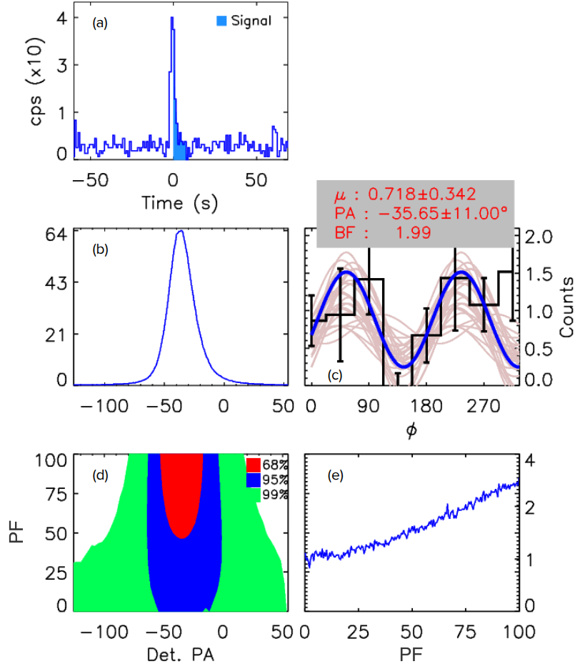
图注：Polarization analysis of \thisgrb\ in the $300$--$600$~keV band with \(\astrosat/CZTI.\) (a) CZTI light curve with the signal interval (shaded) used for analysis. (b) Marginal posterior of the polarization angle (PA). (c) Azimuthal Compton scattering angle ($\phi$) distribution (black histogram) with MCMC posterior draws (pink) and the best-fit sinusoid (blue); the inferred modulation factor $\mu = 0.7\pm0.3$, $\mathrm{PA} = -36^\circ \pm 11^\circ$, and Bayes factor $\mathrm{BF} = 1.99$ are annotated. (d) Joint 68\%, 95\%, and 99\% credible contours in the PA--PF plane. (e) Marginal posterior of the polarization fraction (PF), consistent with a lower-limit measurement of $\Pi \ge 50\%$ at $1\sigma$.
对应解读：对应“建议重点查看的图表”第4、5项，以及逐图导读中的图4、图5和偏振拟合段落。
入选理由：这张图同时包含CZTI偏振分析的信号时间段、方位角调制曲线、最佳正弦调制、PA边缘后验、PF边缘后验以及PA--PF二维可信区间，直接支撑文中“300--600 keV边缘偏振约束、1σ下Π≳50%”的核心结论。相比单独光变图，它能同时检验调制幅度、误差宽度、Bayes factor和Π=0是否被强排除，是判断偏振证据强弱最关键的图。
来源与置信度：\(arxiv_source\)；high；\(arxiv_source\) / sample701.tex:figure[4]
Fig07
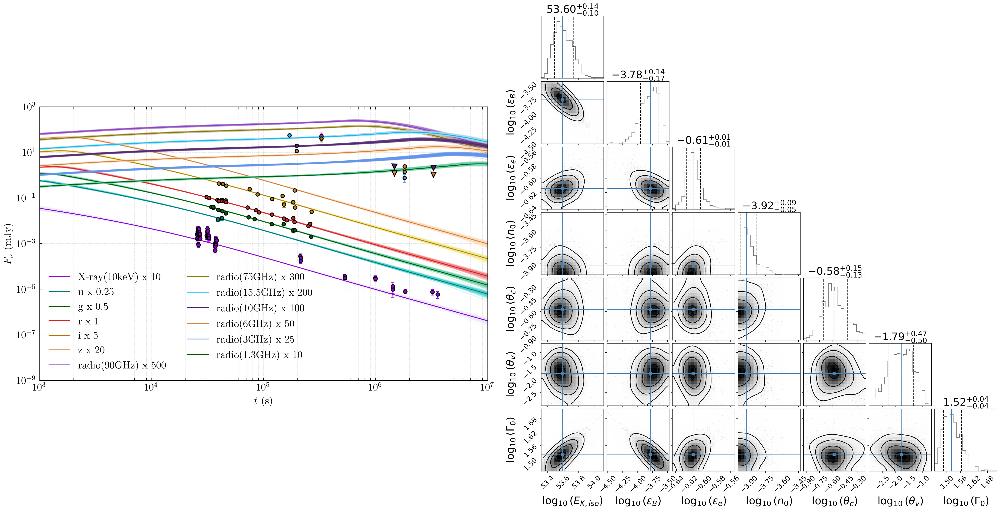
图注：Model light curve and posterior constraints for \thisgrb\ using the best-fit top-hat jet model. Top: \(\texttt{jetsimpy}\) median-posterior light curves (solid lines) with $1\sigma$ posterior bands (shaded) overlaid on multi-band observations. Downward triangles denote upper limits. Bottom: Corner plots showing the posterior distributions obtained with \(\textsc{MultiNest}.\) Blue lines indicate posterior medians.
对应解读：对应“建议重点查看的图表”第6、7项，以及逐图导读中的图6、图7和余辉建模段落。
入选理由：该图上半部分给出top-hat jet模型对多波段余辉的拟合及1σ后验带，下半部分给出MultiNest参数后验corner plot，直接对应θ_j、θ_v、\(n_0\)、\(E_k\),iso等宽喷流、近轴观测和低密度环境结论。它比单纯观测光变图更能支撑日报中关于模型退化、后验相关性和无明显jet break的详细解读。
来源与置信度：\(arxiv_source\)；high；\(arxiv_source\) / sample701.tex:figure[7]
Fig02
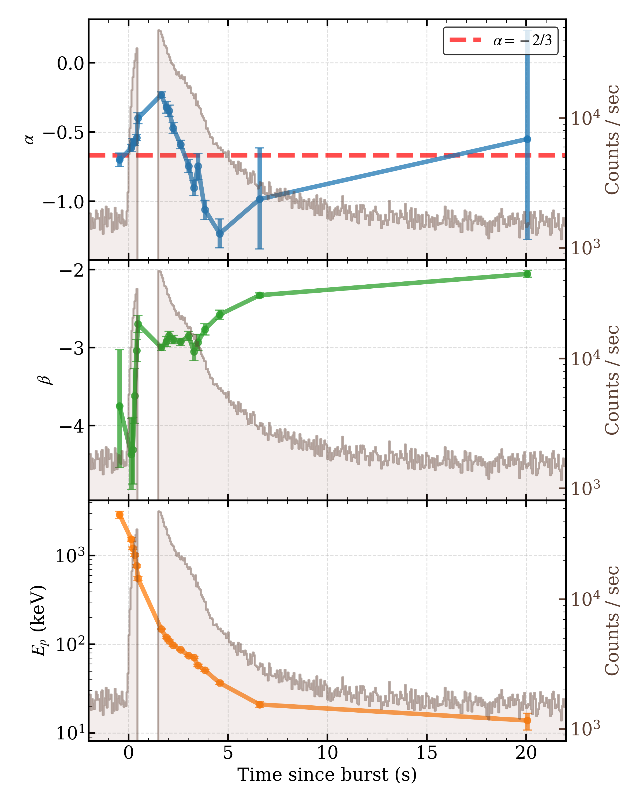
图注：Spectral parameter evolution across the burst using Band function. \(E_P\) shows a monotonic decrease across the burst. \(\alpha\) during rise phase, crosses the synchrotron line-of-death at \(-2/3\) shown as red dashed line. Background light curve is plotted for the \(\fermi/GBM\) detector \(n_3\).
对应解读：对应“建议重点查看的图表”第2项，以及逐图导读中的图2和prompt光谱拟合段落。
入选理由：该图展示Band函数时间分辨谱参数演化，特别标出α与同步辐射line-of-death α=-2/3的关系，并显示E_P随时间单调下降，是判断早期α过硬、后期转向非热主导的最直接证据。日报多次强调要看α误差条与-2/3参考线的位置，因此这张图优先级很高。
来源与置信度：\(arxiv_source\)；high；\(arxiv_source\) / sample701.tex:figure[2]
Fig05
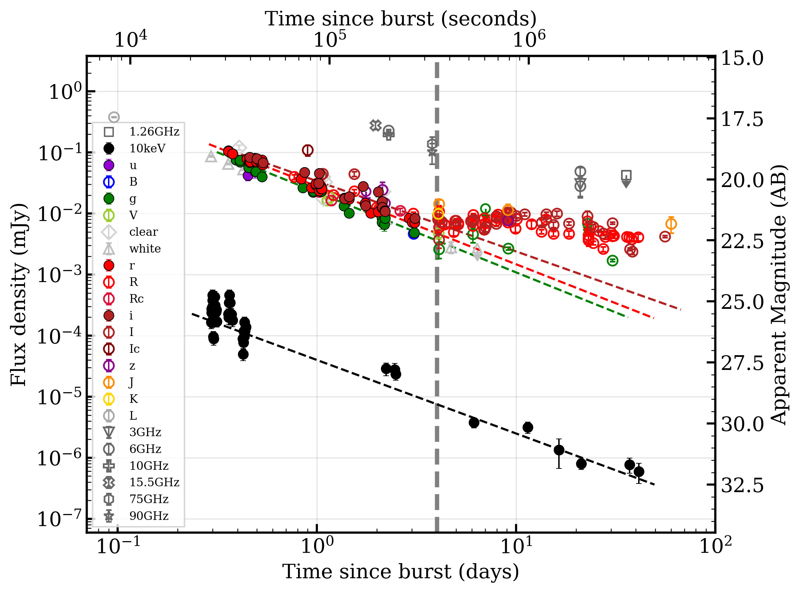
图注：Multi-band afterglow light curve of \thisgrb\ in optical, radio, and X-ray regimes. Filled markers indicate data used in afterglow modeling. Supernova \thissn\ dominates in optical at $t>4$~days, shown as a vertical dashed line, and optical data beyond this line are excluded from fitting. The temporal decay indices from simple power-law fits are: $\alpha_g = 1.31 \pm 0.01$, $\alpha_r = 1.28 \pm 0.01$, $\alpha_i = 1.15 \pm 0.02$ (optical), and $\alpha_{\rm X} = 1.23 \pm 0.04$ (X-ray at 10~keV). 1.26~GHz data is shown as an upper limit.
对应解读：对应“建议重点查看的图表”第6项，以及逐图导读中的图6和余辉残差/jet break讨论。
入选理由：该图展示光学、射电和X射线多波段余辉观测数据，并标明用于建模的数据点、超新星主导后被剔除的光学时段以及各波段幂律衰减指数。它是检查是否存在achromatic jet break、光学与X射线衰减是否一致、以及哪些数据进入余辉拟合的基础图。
来源与置信度：\(arxiv_source\)；high；\(arxiv_source\) / sample701.tex:figure[5]
Fig01
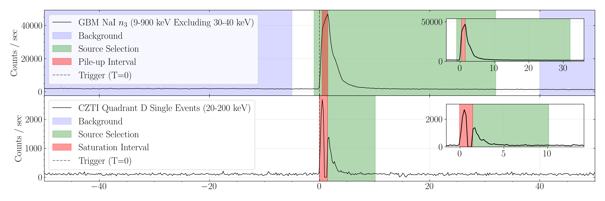
图注：The prompt light curves from the brightest detector (\(n_3\)) in \(\fermi/GBM\) and quadrant D of \(\astrosat/CZTI.\) The \(30\)--\(40\)~keV energy range is excluded because of the iodine K-edge in \(\fermi/GBM.\) The red-shaded region indicates the saturated portion of the burst, which differs between the two instruments. The green-shaded region marks the source interval adopted for the respective \(T_{90}\) analyses of \(\fermi/GBM\)~\(\citep{gcn34391}\) and \(\astrosat/CZTI.\) The background intervals are shown in blue for \(\fermi/GBM\); for \(\astrosat/CZTI,\) the background is estimated from \(-300\)~s to \(-70\)~s before the trigger and from \(70\)~s to \(300\)~s after the trigger. See Section~\(\ref{sec:pol}\) for further details on saturation in \(\astrosat/CZTI\) quadrants.
对应解读：对应“建议重点查看的图表”第1项，以及逐图导读中的图1。
入选理由：该图给出Fermi/GBM和AstroSat/CZTI的prompt光变曲线、饱和区间、T90源区间和背景区间，有助于判断上升阶段、峰值、衰减阶段以及仪器饱和对后续光谱和偏振分析的影响。虽然它未直接给出能谱残差或时间bin边界细节，但仍是理解prompt分段和数据质量的必要背景图。
来源与置信度：\(arxiv_source\)；high；\(arxiv_source\) / sample701.tex:figure[1]
Fig06
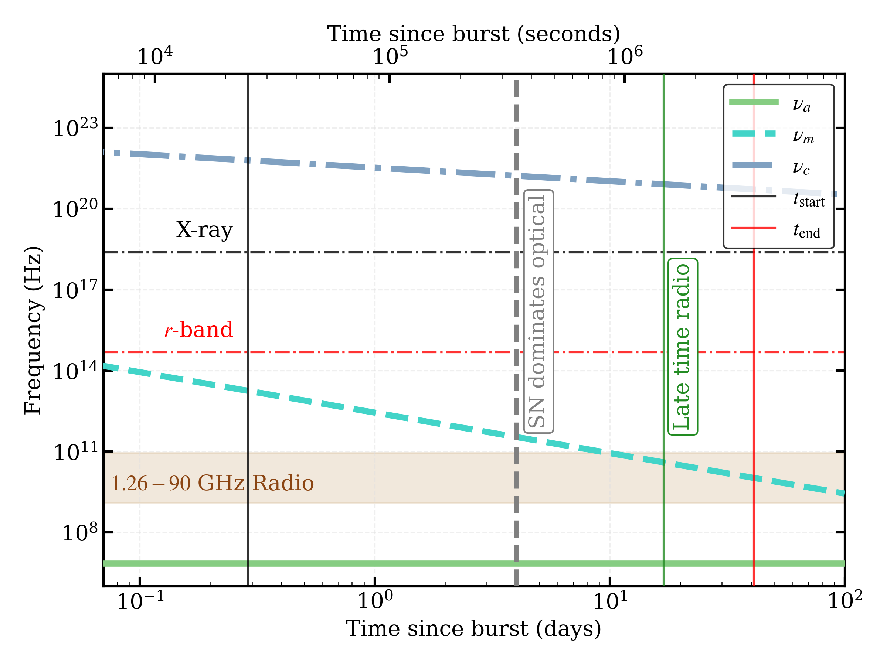
图注：Evolution of the synchrotron characteristic frequencies $\nu_m$, $\nu_c$, and $\nu_a$ for an on-axis jet. The black and red vertical lines mark the start and end of X-ray observations, respectively. $\nu_c$ remains above the X-ray band, consistent with the slow-cooling regime. $\nu_m$ evolves from optical to radio frequencies, crossing late-time radio observations at ~$t\ge17$~days. The self-absorption frequency $\nu_a$ remains nearly constant at $\sim$1~MHz.
对应解读：对应“建议重点查看的图表”第8项，以及余辉谱能量分布/闭合关系诊断相关讨论。
入选理由：该图展示ν_m、ν_c、ν_a随时间的演化，并标出X射线观测起止时间，能够检验余辉是否处于慢冷却 regime、冷却频率是否高于X射线以及光学到射电频段是否可由同一同步辐射模型解释。它对辐射机制闭合关系有辅助价值，但相对于偏振、时间分辨谱和喷流后验图，核心性略低。
来源与置信度：\(arxiv_source\)；high；\(arxiv_source\) / sample701.tex:figure[6]
强相关工作
同一事件层面，应优先检索 GRB 230812B 的 GCN Circulars、Fermi/GBM 或 Swift/BAT 触发通报、AstroSat/CZTI 相关报告、以及后续光学和 X 射线余辉观测。可用关键词包括 “GRB 230812B Fermi GBM”, “GRB 230812B Swift XRT”, “GRB 230812B AstroSat CZTI polarization”, “GRB 230812B afterglow”。由于本文是 arXiv 新稿，除作者给出的 arXiv 页面外，其他同源公开链接在未逐条核验前不应随意填写。
同类工作方面，这篇论文应与 GRB prompt 谱中热成分研究、Band 谱低能指数问题、GRB 偏振测量和余辉喷流开角建模放在一起读。基础文献包括 Band 函数原始论文、同步辐射余辉标准模型、喷流折断理论和 GRB 偏振综述。相反观点或张力主要来自两类：一类认为 \(\alpha>-2/3\) 可由时间积分、边缘响应或复杂同步辐射缓解；另一类认为低显著性偏振不应作为模型判据。检索关键词可用 “synchrotron line of death GRB”, “photospheric emission GRB prompt”, “GRB prompt polarization CZTI”, “GRB afterglow jet break low density”。
同一事件 / 同类源线索：
相似工作：
- https://ui.adsabs.harvard.edu/abs/1993ApJ...413..281B/abstract
- https://ui.adsabs.harvard.edu/abs/1998ApJ...497L..17S/abstract
- https://ui.adsabs.harvard.edu/abs/2002ApJ...568..820G/abstract
基础理论 / 方法工作：
- https://ui.adsabs.harvard.edu/abs/1999ApJ...523L.121R/abstract
- https://ui.adsabs.harvard.edu/abs/1999ApJ...519L..17S/abstract
- https://ui.adsabs.harvard.edu/abs/2006ARA%26A..44..507M/abstract
相反观点 / 张力线索：
- https://ui.adsabs.harvard.edu/abs/1998ApJ...506L..23P/abstract
- https://ui.adsabs.harvard.edu/abs/2000A%26AS..138..463C/abstract
5. GWTC-5.0: Tests of General Relativity
- 来源：arXiv / astro-ph.HE
- 链接：https://arxiv.org/abs/2607.19293v1
- 作者：The LIGO Scientific Collaboration, the Virgo Collaboration, the KAGRA Collaboration, A. G. Abac, A. Abe, I. Abouelfettouh, F. Acernese, K. Ackley
- 评分：novelty 7/10，importance 9/10，relevance 7/10，final 8.70/10
- 推荐理由：LVK GWTC-5.0强场GR检验的大型官方结果，样本增至168个事件且约束改进；虽非伽马射线方向，但对致密天体和多信使高能天体物理读者有重要参考价值。
中文题目：GWTC-5.0 对广义相对论的检验
做了什么：这篇 LIGO–Virgo–KAGRA 合作组论文用第五版引力波瞬变星表 GWTC-5.0 中的双致密星并合事件系统检验广义相对论，覆盖到第四观测轮第二阶段 O4b。作者只使用至少两个探测器观测到、误警率满足 \(\mathrm{FAR}\le 10^{-3}\,\mathrm{yr}^{-1}\) 的高置信事件；新纳入 O4b 的 \(72\) 个事件和 O4a 中因搜索更新而显著性提高的 \(5\) 个事件，使累计用于 GR 检验的事件数达到 \(168\)。论文做了七类检验：波形残差、额外偏振、后牛顿相位偏离、并合前后的一致性、时域和频域 ringdown、以及若干黑洞谱学相关诊断。总体结论很直接：没有发现超出广义相对论的可靠证据；约束比 GWTC-4.0 有所改进，但某些 ringdown 合并结果仍受样本量、噪声涨落和少数高信噪比事件主导。
为什么重要：这不是单个“漂亮事件”的 GR 检验，而是当前公开目录级的强场、动态引力统计检验。它回答的是：当样本扩展到 \(168\) 个可信并合事件后，GR 波形是否仍能同时解释 inspiral、merger、ringdown、偏振结构和残差信号？这对替代引力理论、黑洞无毛定理、引力波传播与探测器系统误差都有直接约束意义。
理论 / 观测 / 仪器方法价值：理论价值在于把许多可参数化偏离项的后验继续压窄，尤其后牛顿相位系数偏离的约束相对上一版提升约 \(1.2\) 到 \(2.6\) 倍。观测价值在于展示了目录级检验如何处理事件选择、网络信噪比、误警率、残差一致性和多事件层级合并。方法价值在于给出了对高信噪比事件如 GW250114、以及 ringdown 候选事件如 GW240621_195059 的具体诊断范式。
为什么应该关注：如果你关心强场引力、黑洞天体物理或未来第三代引力波探测器，这篇文章值得看，因为它说明了当前“GR 没被推翻”到底建立在什么统计证据上，也说明了哪些地方还不够强：ringdown 谱学仍然容易被信噪比、截断时刻、非主模态、噪声非平稳和高频伪结构限制。它也给下一阶段 O5、Cosmic Explorer 和 Einstein Telescope 的 GR 检验设定了清晰基准。
展开详细解读：文章讲解、背景、理论、重点章节、图表与相关工作
文章详细讲解
科学问题：双黑洞和中子星并合产生的引力波是在强场、非线性、快速变化时空中生成的，正是太阳系和双脉冲星检验难以触及的区域。广义相对论预言了双致密星 inspiral 的相位演化、merger 的非线性动力学、最终 Kerr 黑洞的准正规模 ringdown，以及只有张量偏振的传播自由度。本文要问的是：到 GWTC-5.0 为止，所有高置信多探测器事件是否仍与这些预言一致，还是存在统计上可辨认的系统性偏离。
作者怎么做：论文从 GWTC-5.0 中筛选至少两个探测器观测到、且误警率 \(\mathrm{FAR}\le 10^{-3}\,\mathrm{yr}^{-1}\) 的可信事件。新样本包括 O4b 的 \(72\) 个事件，以及 O4a 中因更新搜索而达到门槛的 \(5\) 个事件，使累计样本达到 \(168\) 个。作者没有把所有事件都当成同等信息量，而是按检验类型选择合适子样本：残差检验需要可靠的最佳拟合波形和噪声估计；偏振检验依赖探测器网络几何；后牛顿偏离检验主要由 inspiral 信噪比贡献；ringdown 和谱学检验则更依赖高总质量、高并合后信噪比事件。
关键结果：最佳拟合 GR 波形扣除后，所有被检事件的残差与探测器噪声相容；没有发现需要额外矢量或标量偏振的强证据；引力波生成机制方面，参数化后牛顿相位偏离的约束相对 GWTC-4.0 提升约 \(1.2\) 到 \(2.6\) 倍；并合前后估计出的末态质量和自旋整体与 GR 一致。GW240621_195059 的并合后数据可用 Kerr 黑洞的主导四极模 \((\ell=|m|=2)\) 及其第一泛音描述，但高频伪结构妨碍了真正的黑洞谱学检验。频域 ringdown 合并分析中，GR 预言位于联合结果的尾部，作者将其解释为可能与目录规模有限和统计涨落有关；同时，GW250114 的网络匹配滤波信噪比达到 \(76.9\)，显著改善了相对 GWTC-4.0 的整体一致性。
局限和下一步：这篇文章的结论不是“GR 已经被证明”，而是在当前噪声、波形模型、事件选择和先验设定下，没有稳健偏离证据。ringdown 部分尤其需要谨慎，因为并合后信噪比通常远低于总信噪比，开始时间选择、泛音是否真实可测、残余非线性动力学、校准误差和噪声非高斯尾部都会影响结论。下一步最关键的是 O5 及以后积累更多高并合后信噪比事件，并用更完善的高阶模、偏心、进动、环境效应和波形系统误差模型重新评估目前的弱张力。
关键结果是怎么做出来的
样本选择是这篇论文证据链的第一环。作者只纳入至少两个探测器探测到且 \(\mathrm{FAR}\le 10^{-3}\,\mathrm{yr}^{-1}\) 的可信事件，因此刻意避开了单探测器候选体和边缘事件带来的选择不确定性。GWTC-5.0 新增的关键信息来自 O4b 的 \(72\) 个事件，以及 O4a 中因更新搜索流程而现在达到显著性要求的 \(5\) 个事件。把这些与早期观测轮事件合并后，目录级 GR 检验样本达到 \(168\) 个。
残差检验的逻辑是先对每个事件用 GR 波形做参数估计，得到最佳拟合波形，再从探测器数据中减去该波形，检查剩余时间序列是否仍含有相干的非噪声结构。显著性通常通过残余信噪比、贝叶斯证据比、或与重采样噪声背景的比较来判断。本文报告所有事件的残差均与探测器噪声一致，这支持“GR 波形已经解释了可测相干信号”的结论，但它并不排除低于当前灵敏度的小偏离。
额外偏振检验依赖探测器网络对不同偏振张量的天线响应。由于 LIGO Hanford、LIGO Livingston、Virgo、KAGRA 的几何分布并非对所有偏振同等敏感，这一检验的约束常由天空定位、倾角、距离和网络覆盖共同决定。本文未发现强证据支持 GR 之外的标量或矢量偏振。读者应重点看偏振模型之间的证据比或后验概率，而不是只看某个事件是否能被非 GR 偏振模型拟合。
后牛顿相位偏离检验是本文最量化的结果之一。作者允许 inspiral 相位展开中的若干 PN 系数相对 GR 值发生偏移，再对单事件和联合样本推断这些偏移。相对 GWTC-4.0，约束提升约 \(1.2\) 到 \(2.6\) 倍，说明新增事件确实在积累统计信息；但不同 PN 阶数受到质量比、自旋、低频截止和波形系统误差的影响不同，不能简单把所有偏离参数都解读成某个具体替代引力理论的耦合常数。
末态一致性和 ringdown 是最容易产生“黑洞谱学”误读的部分。作者用 inspiral 和 post-inspiral 数据分别估计末态质量与自旋，再检查二者是否在 GR 预言内一致；另在时域和频域对 ringdown 模态进行分析。GW240621_195059 的 postmerger 数据与 Kerr 主模和第一泛音相容，但高频伪结构阻碍了谱学约束。频域 ringdown 联合结果中 GR 预言落在后验尾部，这一现象被作者谨慎归因于样本量有限和统计涨落，而不是宣称发现偏离。
稳健性方面，最值得关注的是哪些结论由少数高信噪比事件主导。GW250114 的网络匹配滤波信噪比 \(76.9\) 使其对目录级结果贡献很大，也改善了相对 GWTC-4.0 的一致性。读者应检查论文中逐事件贡献、留一法或类似稳健性诊断，确认联合约束不是由某个噪声异常、校准问题或波形模型不足牵引。
展开背景、理论、公式、模型、章节和图表导读
背景知识
研究对象是双致密星并合的引力波信号，主要包括双黑洞、黑洞–中子星和双中子星系统。它们的波形可粗略分成 inspiral、merger 和 ringdown 三段：早期轨道缓慢收缩，后期进入强非线性并合，最后形成的黑洞以准正规模衰减。GR 对这三段都有定量预言，因此同一条波形本身就是一套强场引力实验。
历史上，GR 已经通过水星近日点进动、光线偏折、Shapiro 延迟、双脉冲星轨道衰减等弱场或中等强场检验。但这些检验的典型速度和曲率尺度与双黑洞并合差别很大。GW150914 首次把检验推进到动态强场区域，此后每一版 GWTC 都扩大样本，并把问题从“某个事件是否符合 GR”推进到“一个总体星表是否存在共同偏离”。
现在值得重新看的原因是 O4 数据显著增加了事件数量，也包含更高信噪比或更适合并合后分析的事件。目录级样本增长会改善统计误差，但同时系统误差也变得更突出：波形模型、探测器校准、噪声非平稳、选择效应、参数先验和事件分类都会影响最终结论。因此 GWTC-5.0 的 GR 检验不仅是更多事件的重复计算，也是对方法稳定性的压力测试。
该领域常见误区之一是把“没有发现偏离”理解为“GR 在所有尺度上被证明正确”。实际结论更有限：在给定模型空间、灵敏度和统计阈值下，数据没有要求引入额外物理。另一个误区是把 ringdown 中拟合到泛音或高阶模等同于已经完成黑洞谱学；真正的谱学需要多个模态频率和阻尼时间被独立测量，并能排除非线性、噪声和波形截断造成的假信号。
还有一个误区是把参数化偏离项直接映射为某个替代引力理论的排除界限。PN 系数偏离、传播速度偏离、额外偏振和无毛定理检验是不同层次的 phenomenological test，它们与具体理论之间通常需要额外假设，例如耦合常数、标量场背景、黑洞毛发、筛选机制或宇宙学传播模型。
基础理论 / 方法脉络
基本物理图像是：双星系统通过辐射引力波损失能量和角动量，轨道频率逐渐升高，探测器记录到频率和振幅随时间增加的 chirp。GR 给出波形的相位演化，特别是 inspiral 阶段的相位对源质量、自旋和可能的理论偏离极为敏感。由于相位可积累上千个周期，小的动力学偏离也可能在相位中放大。
探测器测量的是应变 \(h(t)\)，它是不同偏振分量经过探测器天线响应投影后的线性组合。在 GR 中，远离源区的传播引力波只有两个张量偏振 \(h_+(t)\) 和 \(h_\times(t)\)。如果存在标量或矢量偏振，不同探测器因臂方向和源天空位置不同会看到不同的相对振幅和相位，因此多探测器网络可用于偏振检验。
波形建模方面，inspiral 通常用后牛顿展开描述，merger 和 ringdown 依赖数值相对论校准或有效一体理论等模型。参数化 GR 检验的常见做法是把 GR 波形中的某些相位系数、振幅系数或 ringdown 频率阻尼时间替换为可偏离的参数，再看数据是否偏好非零偏离。本文中的 PN 系数偏离、残差检验、末态一致性和 ringdown 检验都属于这一类。
观测统计的核心是匹配滤波：把数据与模板按探测器噪声功率谱加权内积，寻找最大信噪比和最大似然参数。网络信噪比把多个探测器的相干信息合并，但也受校准、非高斯噪声、模板覆盖和源天空位置影响。高总信噪比并不自动意味着强 ringdown 检验，因为 ringdown 信息只来自并合后较短时间段。
主要退化关系包括质量比与自旋对 inspiral 相位的退化、距离与倾角对振幅的退化、天空位置与偏振响应的退化、ringdown 起始时间与可测模态数量的退化。系统误差则包括波形族差异、采样先验、噪声功率谱估计、校准不确定度、数据质量 veto、以及目录选择函数。这些因素决定了本文“与 GR 一致”的统计含义。
公式与推导
第一步从探测器数据模型开始。单个探测器记录的数据可写为信号与噪声之和：
其中 \(d(t)\) 是应变时间序列，\(h(t;\theta)\) 是由源参数 \(\theta\) 决定的模板波形，\(n(t)\) 是探测器噪声。GR 检验的基本问题就是判断是否存在比 \(h_{\rm GR}(t;\theta)\) 更能解释数据的非 GR 成分。
第二步是多偏振投影。一般度规理论中，探测器响应可写为
其中 \(I\) 标记探测器，\(A\) 可包括张量、矢量和标量偏振，\(F_I^A\) 是天线响应函数，\(\alpha\)、\(\delta\)、\(\psi\) 分别表示赤经、赤纬和偏振角。GR 只允许 \(A=+,\times\)，额外偏振检验就是比较不同 \(A\) 集合的证据。
第三步定义噪声加权内积，这是匹配滤波和似然的基础：
其中 \(\tilde a(f)\) 是傅里叶变换，\(S_n(f)\) 是单边噪声功率谱密度。该内积把探测器最敏感频段赋予更高权重，也解释了为什么低频截止和噪声谱估计会影响 PN 约束。
第四步写出高斯噪声近似下的似然：
参数估计、残差检验和模型比较都围绕这一量展开。若减去最佳拟合波形后残差 \(r=d-h(\hat\theta)\) 仍含有相干结构，则 \((r|r)\) 或相关证据会偏离噪声预期。
第五步定义匹配滤波信噪比：
这里 \(\rho_I\) 是第 \(I\) 个探测器的信噪比，\(\rho_{\rm net}\) 是网络信噪比。本文提到 GW250114 的 \(\rho_{\rm net}=76.9\)，意味着它对联合约束有很大权重。
第六步给出 inspiral 相位的参数化偏离形式。频域波形可写为
其中相位在 PN 展开中近似为
并且
这里 \(t_c\) 和 \(\phi_c\) 是并合时刻和相位，\(M\) 是总质量，\(v\) 是特征轨道速度参数，\(\delta\varphi_k\) 是待检验的 PN 偏离。若 GR 正确，联合后验应与 \(\delta\varphi_k=0\) 相容。
第七步是贝叶斯模型比较。两个模型 \(\mathcal{H}_1\) 和 \(\mathcal{H}_0\) 的贝叶斯因子为
其中 \(Z_i\) 是证据，\(\pi\) 是先验。偏振检验、残差信号检验和某些 ringdown 模型比较都可用类似形式。
第八步描述末态一致性。GR 波形可由 inspiral 推断末态质量和自旋 \((M_f^{\rm I},\chi_f^{\rm I})\)，也可由 post-inspiral 推断 \((M_f^{\rm P},\chi_f^{\rm P})\)。常用无量纲差异为
若 GR 与波形模型成立，后验应覆盖 \((\Delta M_f,\Delta\chi_f)=(0,0)\)。
第九步连接 ringdown。Kerr 黑洞的准正规模可写为
其中 \(\ell,m,n\) 是角向和泛音指标，\(A_{\ell m n}\)、\(\tau_{\ell m n}\)、\(\omega_{\ell m n}\)、\(\phi_{\ell m n}\) 分别是振幅、阻尼时间、角频率和相位。GR 预言 \(\omega_{\ell m n}\) 与 \(\tau_{\ell m n}\) 只由 \(M_f\) 和 \(\chi_f\) 决定；本文对 GW240621_195059 的讨论正是在检验主导 \((\ell=|m|=2)\) 模及第一泛音能否可靠约束这一关系。
模型拟合 / 应用方法
本文的拟合框架以贝叶斯参数估计和匹配滤波为核心。对每个事件，先用 GR 波形模型拟合源参数，包括质量、自旋、距离、天空位置、倾角、并合时间和相位等；随后在不同检验中引入额外参数，例如 PN 相位偏离、额外偏振成分、残差信号假设、末态质量自旋差异或 ringdown 模态偏离。关键不是单个最大似然点，而是偏离参数的后验是否排斥 GR 值。
联合目录分析通常需要假设不同事件的噪声独立，并把各事件对同一偏离参数的似然相乘，或在层级模型中允许偏离参数来自某个总体分布。若假定所有事件共享同一个偏离参数，约束会随样本增加而收紧，但这种假设未必适用于所有替代理论，因为偏离可能依赖质量、自旋、红移或环境。读者应注意论文对“联合约束”的物理解释是否是现象学的，而不是过度理论化的。
残差和 ringdown 拟合有不同的诊断重点。残差检验看的是扣除最佳拟合 GR 波形后，剩余数据是否仍有与天空位置和时间延迟一致的相干结构；ringdown 拟合则看并合后截取的数据是否支持一个或多个阻尼正弦模态。ringdown 对起始时间 \(t_0\)、噪声谱、窗函数、高频伪迹和泛音先验非常敏感，因此模型比较中证据的微弱变化不应被直接解释为新物理。
主要参数退化包括质量比与有效自旋在 inspiral 相位中的退化，末态质量与 ringdown 频率的退化，末态自旋与阻尼时间的退化，以及距离、倾角和偏振角在振幅响应中的退化。额外偏振模型还可能通过改变天空位置和倾角来模拟张量响应，因此网络几何和探测器数量至关重要。
系统误差方面，波形模型是最大项之一。高质量双黑洞的 inspiral 周期少，merger 和 ringdown 模型误差会更突出；强进动、高阶模、偏心轨道或残余轨道离心率如果未被充分建模，可能表现为参数化偏离。探测器校准、非平稳噪声、数据质量 veto 和背景估计也会影响误警率与后验尾部。实际应用中，这篇论文的约束可作为替代引力理论筛选的第一层，但要映射到具体理论仍需单独计算理论波形或有效偏离关系。
重点章节 / 结果段落怎么读
数据与样本部分应首先阅读。重点确认事件选择标准：至少两个探测器、\(\mathrm{FAR}\le 10^{-3}\,\mathrm{yr}^{-1}\)、O4b 新增 \(72\) 个事件、O4a 重新纳入 \(5\) 个事件、总样本 \(168\) 个。这里决定了后续所有统计结论的适用范围。
残差与偏振检验部分应看方法假设和模型比较。残差检验回答“GR 波形扣除后还有没有相干信号”，偏振检验回答“数据是否需要张量以外的自由度”。读者应检查证据比、残差信噪比分布和单事件异常点，而不是只看文字结论。
引力波生成检验部分是 PN 系数偏离约束的核心。建议逐项看不同 PN 阶数的后验宽度、相对 GWTC-4.0 的提升因子，以及联合约束是否由少数事件主导。这一节对替代引力理论研究者最有用，但也最容易被过度解释。
末态一致性和 ringdown 部分应分开读。末态一致性检验比较 inspiral 与 post-inspiral 对最终黑洞的推断，ringdown 则直接拟合准正规模。GW240621_195059 和 GW250114 是应重点关注的事件：前者涉及高频伪结构和谱学限制，后者因高网络信噪比显著影响联合结果。
讨论与稳健性部分要看作者如何处理频域 ringdown 联合结果中 GR 预言落在尾部的问题。这里的关键不是寻找一句“是否发现偏离”，而是看作者是否展示了样本量限制、事件贡献、噪声涨落、先验和模型选择对结论的影响。
建议重点查看的图表
-
事件样本与信噪比分布图：看 O4b 新事件和重新纳入 O4a 事件在 \(\rho_{\rm net}\)、质量和误警率上的分布，确认 GR 检验信息主要来自哪些事件。
-
残差检验图或表：看每个事件扣除最佳拟合 GR 波形后的残差信噪比、\(p\) 值或背景分布位置，重点找是否有系统性偏高的尾部。
-
偏振模型比较图：看张量、矢量、标量或混合偏振模型的贝叶斯因子或后验权重，注意网络几何导致的不可分辨区域。
-
PN 偏离参数联合后验图：看各 \(\delta\varphi_k\) 的置信区间是否包含 \(0\)，以及相对 GWTC-4.0 的收缩幅度是否均匀。
-
Inspiral–post-inspiral 末态一致性图：看 \((\Delta M_f,\Delta\chi_f)\) 二维后验中 GR 点 \((0,0)\) 是否在可信区域内，注意置信椭圆是否被少数事件拉偏。
-
Ringdown 时域和频域结果图：看模态频率、阻尼时间或偏离参数的后验，特别检查 GW240621_195059 的高频残差和 GW250114 对联合结果的贡献。
-
稳健性或留一法诊断表：看去掉高信噪比事件后联合约束是否仍然稳定，尤其是频域 ringdown 中 GR 位于尾部的现象是否消失或减弱。
关键图表逐图导读
图 1：建议把样本概览图作为入口。横轴通常可能是事件时间、总质量、chirp 质量或网络信噪比，纵轴可能是事件数、误警率或源参数。读图时要区分“事件数量增加”和“有效信息量增加”：大量中低信噪比事件对某些 PN 偏离有帮助，但对 ringdown 谱学贡献有限。
图 2：残差检验图应关注扣除 GR 最佳拟合波形后的统计量。若横轴是事件编号、纵轴是残差信噪比或 \(p\) 值，应检查数据点是否与噪声背景带一致。陷阱是把单个略高残差点过度解释；目录级检验必须考虑多重试验效应。
图 3：偏振检验图通常展示不同偏振假设的贝叶斯因子或后验概率。模型线或柱状条若显示张量模型占优，只能说明当前网络响应不需要额外偏振；若矢量或标量模型在少数事件上也能拟合，不等于发现额外偏振，因为天空位置、倾角和振幅标定会产生退化。
图 4：PN 系数偏离图通常是若干 \(\delta\varphi_k\) 的一维或二维后验。横轴是偏离参数，竖线或阴影表示可信区间，\(0\) 是 GR 预言。重点看联合后验是否以 \(0\) 为中心、宽度相对 GWTC-4.0 如何缩小，以及不同 PN 阶数是否有方向一致的偏移。
图 5：末态一致性图通常以 \(\Delta M_f\) 为横轴、\(\Delta\chi_f\) 为纵轴，显示二维可信区域。GR 对应原点。读图陷阱是忽略 inspiral 和 post-inspiral 分割频率的影响；分割点、波形族和高阶模建模都会改变椭圆形状。
图 6：GW240621_195059 的 ringdown 图应查看时域波形、频域残差或模态后验。若图中有主模和第一泛音模型线，应检查它们是否真正改善并合后数据，还是仅吸收了截断附近的非线性部分。高频伪结构如果与模型残差相关，就会削弱谱学约束。
图 7：频域 ringdown 联合图若显示 GR 预言位于后验尾部，应先看横纵轴定义和置信区间，再看单事件贡献。陷阱是把“尾部”直接当作“张力”；在有限样本、非高斯噪声和先验边界下，尾部位置可能并不对应强显著性。
图 8：稳健性图或表若存在，应看去掉 GW250114 或其他高权重事件后的结果。若联合后验显著移动，说明结论受少数事件主导；若只变宽不移动，则说明目录级结论较稳健。
论文原图 / 可嵌入图片
Fig04
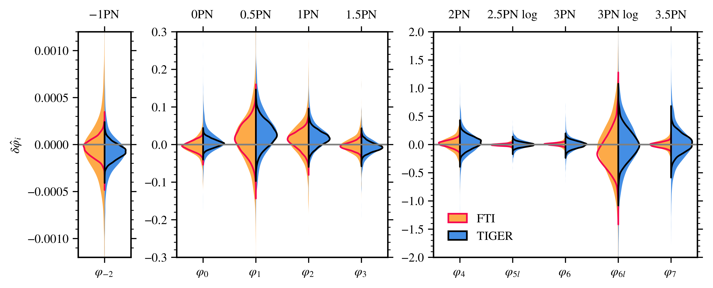
图注：The constraints on the \(\GR\) deviation parameters in the inspiral, marginalized over all analyzed events, in orange on the left for the \(\ac{FTI}\) pipeline using the \(\SEOBNRFIVEHMROM\) waveform model and in blue on the right for the \(\ac{TIGER}\) pipeline using the \(\IMRPhenomXPHMST\) waveform model. The horizontal line shows the \(\ac{GR}\) value. Assuming independent deviation parameters across events, using a hierarchical analysis yields the filled probability densities. Instead, assuming that the deviation parameters have the same values across different events leads to the distributions shown with solid lines.
对应解读：对应“建议重点查看的图表”第4项和“关键图表逐图导读”图4：PN 系数偏离参数联合后验。
入选理由：这张图直接展示各 inspiral 偏离参数的目录级后验，并标出 GR 值，可用于判断联合后验是否包含 0，以及比较 FTI 与 TIGER 两条分析管线和不同联合假设，是检验引力波生成机制是否偏离 GR 的核心图。
来源与置信度：\(arxiv_source\)；high；\(arxiv_source\) / paper.tex:figure[4]
Fig09
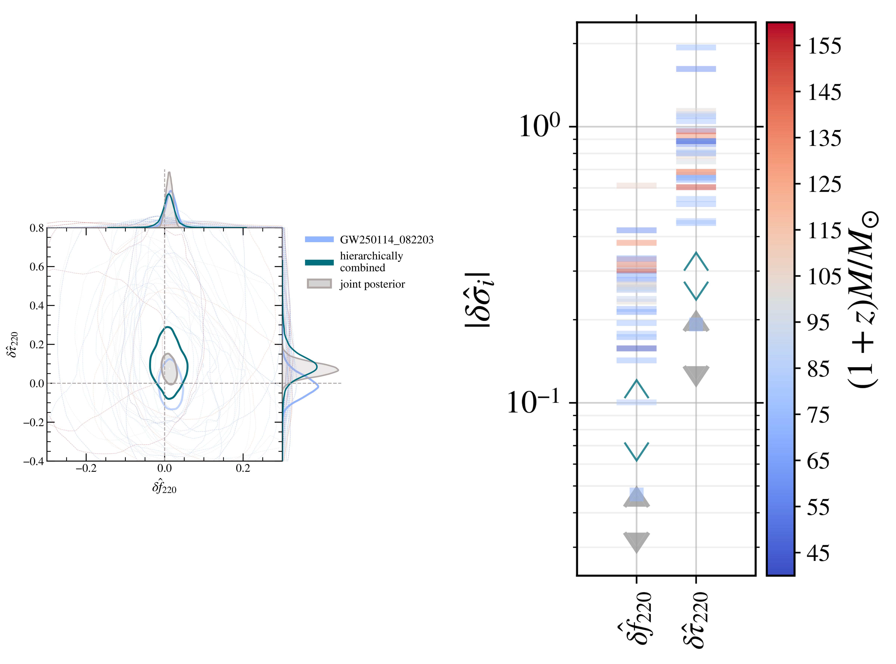
图注：\(\emph{Left panel}\): The 90\% credible regions of the posterior probability distribution of the fractional deviations in the frequency and damping time of the $(2,2,0)$ QNM, $(\delta \hat{f}_{220},\delta \hat{\tau}_{220})$, and their corresponding one-dimensional marginalized posterior distributions, for events passing a SNR threshold of $8$ in both the inspiral and post-inspiral signal. We highlight the posteriors for GW250114_082203. The joint constraints on $(\delta \hat{f}_{220},\delta \hat{\tau}_{220})$ obtained multiplying the posteriors (given a flat prior) from individual events are given by the filled grey contours, while the hierarchical method of combination yields the teal curves. \(\emph{Right panel}\): Width of the 90\% credible interval for the one-dimensional marginalised posteriors of $(\delta \hat{f}_{220},\delta \hat{\tau}_{220})$, colored by the median redshifted total mass $(1+z)M/M_\odot$, inferred assuming GR. Filled gray (unfilled teal) downward triangles mark the constraints obtained when all the events are combined by multiplying posteriors (hierarchically). For comparison, we mark bounds from GWTC-4.0 results~\(\citep{LIGOScientific:2026wpt}\) with filled/unfilled upward triangles. The bounds from GW250114_082203 (square) are indicated with separate markers.
对应解读：对应“建议重点查看的图表”第6、7项和“关键图表逐图导读”图7：频域 ringdown 联合结果、GR 是否位于尾部以及 GW250114 的贡献。
入选理由：图中给出 QNM 频率和阻尼时间偏离参数的二维可信区域、单事件与联合约束，并突出 GW250114_082203，同时与 GWTC-4.0 比较，最能支撑日报中关于频域 ringdown、联合后验尾部和高信噪比事件主导性的讨论。
来源与置信度：\(arxiv_source\)；high；\(arxiv_source\) / paper.tex:figure[9]
Fig10
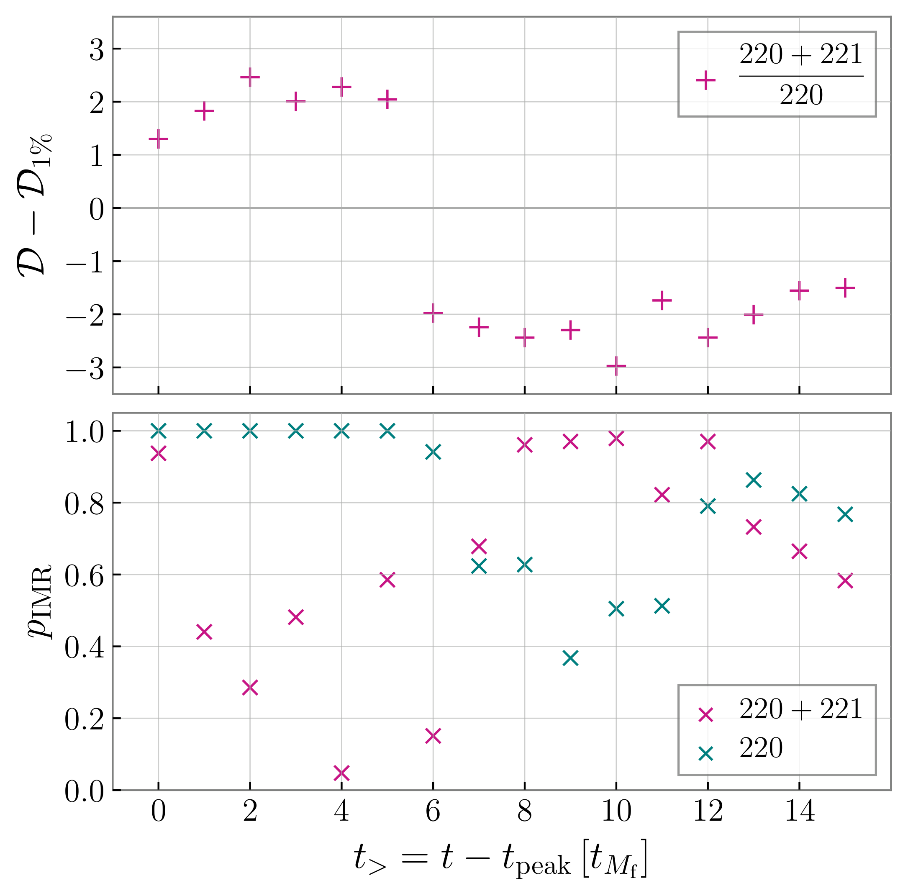
图注：\(\ac{QNMRF}\) results for \(\TGRQNMRFevents{subdom}.\) The top panel shows $\mathcal{D} - \mathcal{D}_{1\%}$ when comparing different candidates of the secondary ringdown mode against the {220}-only hypothesis at different starting times. Values above zero are unlikely to be caused by the noise background and are denoted by filled markers, values below zero are denoted by unfilled markers. The bottom panel shows \( p_{\mathrm{IMR}} \) for the different mode hypotheses. The \(\TGRQNMRFbestmodeH{GW240621fullH}\) combination yields a $\mathcal{D} - \mathcal{D}_{1\%} > 0$ for a range of times and improves \( p_{\mathrm{IMR}} \) the most compared to all other modes.
对应解读：对应“建议重点查看的图表”第6项和“关键图表逐图导读”图6：GW240621_195059 的 ringdown 模态诊断。
入选理由：这张图专门比较 GW240621 相关次级 ringdown 模态候选与 220-only 假设，并显示不同起始时间下的判别统计量和 \(p_IMR\)，直接支撑日报中关于主模、第一泛音/次级模、高频伪结构及谱学约束受限的解读。
来源与置信度：\(arxiv_source\)；high；\(arxiv_source\) / paper.tex:figure[10]
Fig01
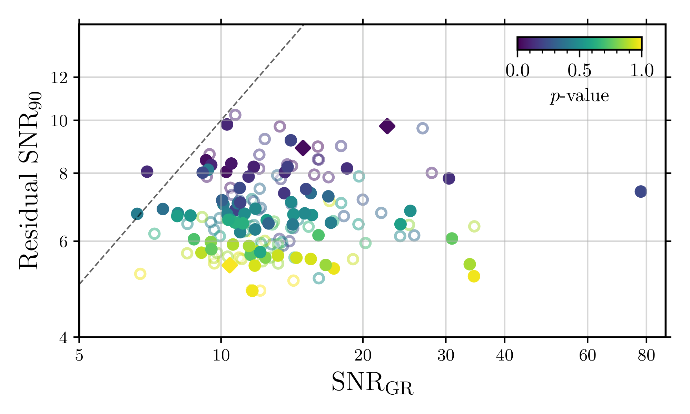
图注：Results of the residuals analysis. Scatter plot of the \(\ac{SNR}\) of the maximum-likelihood template ($\mathrm{SNR_{GR}}$) and the 90\% credible upper bound on the residual network \(\ac{SNR}\) ($\mathrm{SNR_{90}}$) for each event. The color bar denotes the \(\textit{p}-values\) of individual events. Solid (empty) circles represent the O4b (pre-O4b) events, where the pre-O4b events are from \(\citet{LIGOScientific:2019fpa,LIGOScientific:2020tif,LIGOScientific:2021sio,LIGOScientific:2026qni}.\) The events with the highest and lowest \(\textit{p}-values\) are shown by diamonds. The dashed line represents $\mathrm{SNR_{GR}}=\mathrm{SNR_{90}}$. We see that $\mathrm{SNR_{GR}} \geq \mathrm{SNR_{90}}$ for all events considered, except for GW240507_041632 and GW240601_231004.
对应解读：对应“建议重点查看的图表”第2项和“关键图表逐图导读”图2：逐事件残差检验。
入选理由：图中同时给出最佳拟合 GR 模板信噪比、90% 残差网络信噪比上限和逐事件 p 值，并区分 O4b 与 pre-O4b 事件，可直接检查扣除 GR 波形后是否存在异常残差点或系统性偏高趋势。
来源与置信度：\(arxiv_source\)；high；\(arxiv_source\) / paper.tex:figure[1]
Fig03
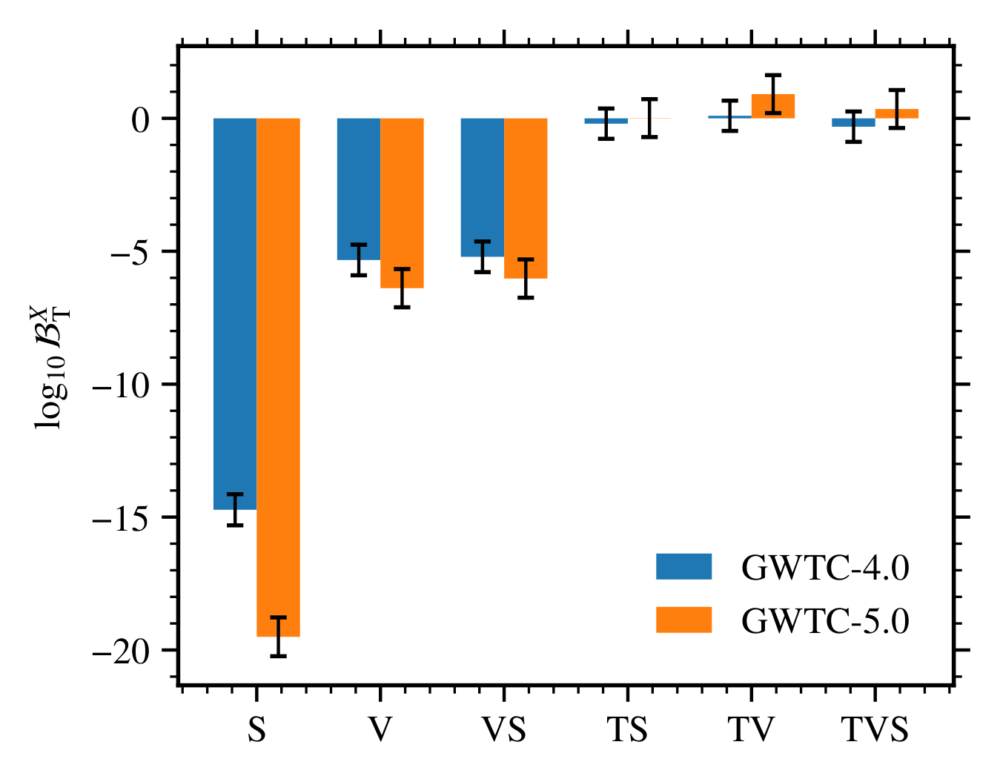
图注：Comparison of $\log_{10}$ Bayes factors $\mathcal{B}^{X}_\mathrm{T}$ for various polarization hypotheses (S, V, VS, TS, TV, TVS) against the tensor hypothesis, for GWTC-4.0 and GWTC-5.0. Polarization states are projected onto one basis mode as detailed in Table~\(\ref{tab:pol_configurations}.\) Positive (negative) values indicate that the hypothesis in the superscript is favored (disfavored) relative to the tensor hypothesis. Error bars represent 90\% credible intervals.
对应解读：对应“建议重点查看的图表”第3项和“关键图表逐图导读”图3：偏振模型比较。
入选理由：该图以不同偏振假设相对张量假设的 log10 贝叶斯因子及 90% 可信区间展示 GWTC-4.0 与 GWTC-5.0 的比较，是判断是否需要额外标量或矢量偏振的最直接证据。
来源与置信度：\(arxiv_source\)；high；\(arxiv_source\) / paper.tex:figure[3]
Fig05
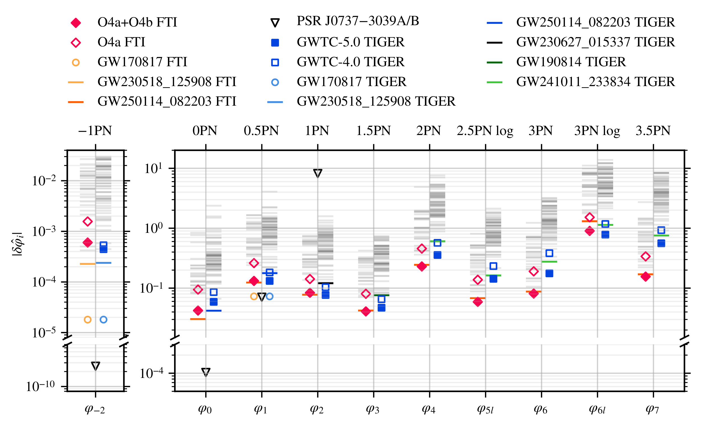
图注：Upper limits on the absolute values of the inspiral deviation coefficients $|\delta\hat{\varphi}_i|$ from $-1$PN to $3.5$PN. Shown are 90\% upper bounds obtained from selected individual \(\ac{GW}\) events and from combined analyses. The horizontal gray markers indicate bounds from individual \(\ac{O4a}\) and \(\ac{O4b}\) events analyzed with FTI using the \(\SEOBNRFIVEHMROM\) waveform model on the left and from individual GWTC-5.0 events analyzed with TIGER using the \(\IMRPhenomXPHMST\) waveform model on the right. The filled red diamonds show the hierarchically combined FTI constraints from the combined O4a+O4b analysis, while the unfilled red diamonds correspond to the combined FTI constraints from only the \(\ac{O4a}\) events~\(\citep{LIGOScientific:2026fcf}.\) For comparison, the filled (unfilled) blue squares denote the hierarchically combined bounds from \(\ac{GWTC}-5.0\) (\ac{GWTC}-4.0) obtained with TIGER. The colored bars highlight specific events when they provide the most stringent individual-event constraint at a given PN order for FTI or TIGER. The bounds for the \(\NSBH\) event GW230518_125908 were obtained using the \(\SEOBNRFOURNRtidalTWONSBH\) waveform model for FTI and the \(\IMRPhenomXPHMST\) waveform model for TIGER~\(\citep{LIGOScientific:2026fcf}.\) The orange circles show constraints obtained from the \(\BNS\) event GW170817 using the \(\SEOBNRFOURNRTidalTWO\) waveform model when competitive, which are not included in the combined bounds shown~\(\citep{LIGOScientific:2018dkp}.\) The black inverted triangles indicate constraints from the double pulsar PSR J0737$-$3039A/B~\(\citep{Kramer:2021jcw}.\) For PN orders $\geq 1.5$PN, the pulsar bounds are significantly weaker than those from \(\ac{GW}\) observations and are therefore not shown.
对应解读：对应“建议重点查看的图表”第4项和“关键图表逐图导读”图4：PN 偏离约束相对 GWTC-4.0 的收缩幅度。
入选理由：相比 Fig04 更强调各 PN 阶偏离系数的 90% 上限、单事件贡献、O4a/O4b 与 GWTC-4.0/GWTC-5.0 的对比，可支撑日报中约束提升 1.2–2.6 倍及不同 PN 阶贡献是否均匀的讨论。
来源与置信度：\(arxiv_source\)；high；\(arxiv_source\) / paper.tex:figure[5]
强相关工作
这篇工作直接延续 LIGO–Virgo–KAGRA 的目录级 GR 检验传统，应与 GW150914 的首个强场检验、GWTC-2/GWTC-3/GWTC-4 的 tests of GR 论文、以及各版 transient catalog 一起读。检索关键词可用 “GWTC tests of general relativity parameterized post-Newtonian deviations residuals polarizations ringdown consistency”。如果关注本文提到的 GW250114 和 GW240621_195059，应检索事件名加 “ringdown”、“Kerr”、“overtone”、“spectroscopy” 和 “LVK”。
相近工作包括黑洞无毛定理和准正规模谱学的理论论文、参数化后爱因斯坦框架、有效一体理论和数值相对论波形系统误差研究。存在张力或相反观点的方向主要不是某篇论文宣称 GR 被推翻，而是关于 ringdown 起始时间、泛音可测性、频域谱学偏差、以及少数高信噪比事件是否足以支撑黑洞谱学的争论。检索关键词可用 “black hole spectroscopy overtone controversy”、“ringdown start time bias”、“parametrized tests of GR gravitational waves”、“beyond GR polarizations LIGO Virgo KAGRA”。
同一事件 / 同类源线索：
相似工作：
基础理论 / 方法工作：
- https://arxiv.org/abs/gr-qc/0512160
- https://arxiv.org/abs/0805.1726
- https://arxiv.org/abs/0905.2975
- https://arxiv.org/abs/1003.2480
相反观点 / 张力线索：
6. Astrophysics on GPUs: introducing AGILE 1.0
- 来源：arXiv / astro-ph.HE
- 链接：https://arxiv.org/abs/2607.19277v1
- 作者：Oliver Porth, Adrian Kelly, Olaf Willocx, Hao Wu, Jesse Vos, Yuhao Zhou, Héctor R. Olivares Sánchez, Leon Oostrum
- 评分：novelty 7/10，importance 8/10，relevance 8/10，final 8.70/10
- 推荐理由：GPU自适应网格天体物理框架AGILE 1.0，含MHD和相对论流体并展示大规模GPU扩展；对高能天体物理数值模拟方法有可复用价值。
中文题目：面向天体物理的 GPU 计算：AGILE 1.0 自适应网格框架
做了什么：这篇论文发布并系统测试了 AGILE 1.0：一个面向天体物理和太阳物理守恒律问题的 GPU 加速自适应网格加密框架。它继承了 MPI-AMRVAC 的部分模块与网格处理思想，用现代 Fortran 2003 和 OpenACC 实现异构计算，支持流体力学、冻结场流体力学、磁流体力学和狭义相对论流体力学。论文的核心不只是“把代码搬到 GPU”，而是说明在深层嵌套 AMR、小块网格例如 \(16^3\) 单元、最多 \(2048\) 块 GPU 的条件下，怎样保持可扩展性和成本效率。
为什么重要：高能天体物理、太阳爆发、喷流、吸积流和激波问题越来越依赖三维、多尺度、强非线性数值模拟。传统 CPU AMR 代码在分辨率、参数扫描和长期演化上常被计算成本卡住；而 GPU 架构虽然算力高，但 AMR 的不规则通信、细粒度任务和小网格块容易使性能掉下去。AGILE 试图解决的正是这个瓶颈：让天体物理 AMR 模拟真正适配现代 GPU 超算，而不牺牲物理模块的可扩展性。
理论 / 观测 / 仪器方法价值：对理论和数值方法的价值在于，它提供了一个可复现实验平台，用来检验守恒律离散、AMR 负载均衡、GPU offloading 和多物理模块耦合在实际天体物理应用中的表现。对观测解释的间接价值在于，更高效的三维模拟能更快产生喷流传播、激波加速、日冕结构、相对论外流等模型库，帮助把图像、光变、谱能量分布或偏振观测与物理参数联系起来。对仪器和算法社区的价值则是给出了一套 AMR 代码在 GPU 集群上强标度到 \(2048\) 块 GPU 的设计和诊断案例。
为什么应该关注：如果你做的是高能天体物理、太阳物理或计算流体力学，这篇文章值得关注，因为它讨论的是未来几年数值模拟能否继续跟上观测精度的基础设施问题。即使你不直接使用 AGILE，也应该关心它给出的经验：AMR 块大小、GPU kernel 粒度、通信隐藏、物理模块抽象、强标度极限和标准 benchmark 的选择，都会影响你如何判断一篇模拟论文的可信度和可复现性。
展开详细解读：文章讲解、背景、理论、重点章节、图表与相关工作
文章详细讲解
科学问题：天体物理中的很多核心问题都可以写成近似守恒律问题，例如激波、湍流、磁重联、喷流准直、日冕物质抛射、相对论外流和吸积环境中的流体不稳定性。困难在于，这些问题通常同时具有强间断、多尺度结构和局域小尺度特征；均匀网格会浪费大量计算量，而自适应网格加密可以把高分辨率集中在激波、剪切层、电流片或密度界面附近。问题是，AMR 的动态网格层级和小网格块在 GPU 上并不天然高效，容易受内存访问、kernel 启动开销、通信延迟和负载不均衡限制。
作者怎么做：论文介绍了 AGILE 1.0，这是一个 GPU-enabled AMR 框架，目标是求解天体物理和太阳物理中出现的守恒律和近守恒律方程。代码使用现代 Fortran 2003 编写，并通过 OpenACC 将计算密集部分 offload 到 GPU。AGILE 继承了 MPI-AMRVAC 的部分模块和网格处理经验，但在设计上强调 GPU 上的成本效率，尤其是深层嵌套 AMR、适中块大小例如 \(16^3\) 单元、模块化物理接口和跨设备的一致性能。当前实现的物理模块包括非相对论流体力学、冻结场流体力学、磁流体力学以及狭义相对论流体力学。
关键结果：摘要显示，作者进行了标准数值 benchmark 和强标度测试，规模达到 \(2048\) 块 GPU，并报告在不同设备和问题规模上具有一致性能。这里的重要性不在于某一个 benchmark 的图像是否好看，而在于代码在 AMR 场景中仍能保持可扩展性；AMR 的深层嵌套、小块网格和多物理模块往往是 GPU 代码最容易失速的地方。论文还用当前所有物理模块展示了若干 state-of-the-art 科学应用，说明 AGILE 不只是一个性能演示程序，而是可以承载实际天体物理问题的生产型框架。
局限和下一步：从摘要能看出，AGILE 1.0 已经覆盖若干常用流体模块，但尚未说明是否包含非理想 MHD、辐射转移、引力、多流体、宇宙线输运、广义相对论或复杂微物理。这些往往是高能天体物理和太阳物理中进一步限制解释力的部分。下一步读者应关注代码是否开源、测试套件是否完整、不同 GPU 架构上性能是否稳定、AMR refinement criterion 是否足够通用，以及它与现有代码如 MPI-AMRVAC、Athena++、PLUTO、FLASH、RAMSES 或 AREPO 相比在具体物理问题上的精度和成本差异。
关键结果是怎么做出来的
本文最重要的结果链条由三部分组成：代码设计、标准 benchmark、强标度与科学应用展示。样本不是天文源样本，而是一组数值实验和性能实验；读者应把每个 benchmark 当作“事件样本”，检查它们是否覆盖了激波管、二维或三维爆炸波、Kelvin-Helmholtz 或 Rayleigh-Taylor 不稳定性、Orszag-Tang 涡、MHD rotor、相对论激波等典型误差来源。摘要没有列出具体 benchmark 名称，因此阅读正文时要特别看测试是否覆盖守恒性、间断捕捉、磁场散度控制、AMR 边界插值和跨 refinement level 通量修正。
性能证据方面，摘要明确给出强标度测试规模达到 \(2048\) 块 GPU，这是本文最硬的量化信息之一。强标度测试应固定全局问题规模，然后增加 GPU 数量，检查墙钟时间 \(T(N)\)、加速比 \(S(N)\) 和并行效率 \(E(N)\) 是否随 \(N\) 接近理想值。对 AMR 代码来说，读者不应只看总速度，还要看每步时间分解：计算 kernel、ghost-zone 交换、AMR prolongation/restriction、负载均衡、I/O 和时间步同步分别占多少。若论文给出不同块大小，例如 \(16^3\) 单元，与更大块或更小块的比较，那里通常最能看出 GPU 设计取舍。
数值正确性的统计意义不同于观测论文中的 \(p\)-value 或 \(\sigma\) 显著性。这里应看的是收敛阶、误差范数、守恒误差、参考解残差和 benchmark 与文献解的一致性。例如对光滑流，误差随网格间距 \(\Delta x\) 的标度应接近算法名义阶数；对含激波问题，高阶格式通常在间断附近退化为一阶，但整体结构、冲击位置和守恒量不应漂移。若论文对不同 GPU、不同 AMR 深度、不同物理模块都报告相近误差，才说明 offloading 没有引入不可忽略的数值差异。
模型比较或方法比较主要体现为 AGILE 与 CPU 基线、MPI-AMRVAC 相关实现、不同 GPU 型号以及不同问题规模之间的对比。读者应检查论文是否使用同样的物理设置、同样的 CFL 条件、同样的 reconstruction 和 Riemann solver；否则性能差异可能来自数值算法差别而非硬件加速。若图表中给出 zone-updates per second、cell-updates per second 或每 GPU 吞吐量，也要结合内存带宽、算术强度和通信开销理解，而不要直接把峰值吞吐当作真实科学模拟速度。
系统误差和稳健性检验在这类论文中包括：AMR refinement criterion 对结果的影响、负载均衡策略对强标度的影响、GPU 内存容量对最大 AMR 深度的限制、不同编译器和 OpenACC 实现之间的差别、单精度与双精度的差异、边界条件与 ghost-zone 宽度对守恒性的影响。正文若有附录或补充材料，最值得查的是回归测试、不同硬件平台的可重复性、I/O scaling 以及复杂科学应用中物理结论是否对分辨率收敛。
展开背景、理论、公式、模型、章节和图表导读
背景知识
研究对象是面向天体物理守恒律模拟的软件框架。所谓守恒律，典型形式是质量、动量、能量和磁通量在局域控制体内的守恒，它们描述了从太阳日冕到超新星遗迹、从星际介质湍流到相对论喷流的一大类系统。数值天体物理长期依赖有限体积法和 Riemann solver，因为激波和接触间断在这些系统中非常常见，单纯的光滑有限差分方法难以可靠处理。
AMR 的历史动机很直接：天体物理问题的动态范围极端巨大。一个喷流模拟既要覆盖喷流头部的传播尺度，又要解析剪切层和激波；一个太阳爆发模型既要覆盖大尺度磁场，又要捕捉薄电流片或局域加热区。均匀网格的计算量随三维分辨率近似按 \(N^3\) 增长，导致高分辨率全域模拟成本迅速不可接受。AMR 通过在需要的局部区域加密网格，把计算资源集中在物理上重要的地方。
过去十多年，GPU 超算成为高性能计算的主流方向，但 AMR 代码迁移到 GPU 并不简单。规则网格 stencil 很适合 GPU，因为内存访问和线程组织相对规则；AMR 则包含层级树、块间 ghost-zone、细粗网格通量匹配、频繁通信和负载变化。许多早期 GPU 流体代码在均匀网格上性能很好，但一旦加入深层 AMR，效率就会被小任务粒度和通信同步吃掉。AGILE 的论文因此属于“数值基础设施”类工作，价值在于让 AMR 与 GPU 架构真正结合。
现在值得重新看这个问题，是因为观测端正在推动模拟端进入更高维、更高分辨率和更多物理的阶段。事件视界望远镜、太阳高分辨率观测、甚高能伽马射线阵列、多信使暂现源和高时间分辨率巡天，都要求理论模型不仅给出定性图像，还要能产生可比较的合成观测。与此同时，超算资源越来越以 GPU 分区形式提供；如果天体物理代码不能有效利用 GPU，很多理论问题会在实际计算资源上失去竞争力。
该领域常见误区之一是把“GPU 加速”简单理解为把循环搬到显卡上。真正的性能瓶颈往往在数据布局、内存带宽、kernel 粒度、MPI 通信和 AMR 负载均衡。另一个误区是只看峰值加速比而忽略数值正确性：一个快很多但在激波位置、磁场散度或守恒量上有系统漂移的代码，对科学结论未必有用。第三个误区是把 benchmark 通过等同于所有科学应用可靠；复杂三维问题中的边界条件、加密准则和长期误差积累仍需单独验证。
基础理论 / 方法脉络
基础物理图像是连续介质在局域控制体内满足守恒律。对流体力学，质量密度、动量密度和总能量密度随时间变化，其变化由边界通量决定；对磁流体力学，还要演化磁场并保持磁场无散条件。有限体积法把空间切成单元，追踪每个单元平均守恒量，并用单元界面通量更新状态。这种做法的优点是即使解中存在激波，积分形式的守恒律仍然成立。
AMR 的基本思想是在误差估计较大或物理结构较尖锐的地方细化网格。典型 refinement indicator 可以来自密度梯度、压力梯度、磁能密度、电流密度、涡量或被动标量；也可以来自问题定制的物理指标。细网格需要与粗网格交换边界信息，并在时间推进后通过 restriction 和 refluxing 保持守恒量一致。对 GPU 来说，这些细粗层级操作会打破单一规则网格的简单并行模式。
AGILE 的纸面假设是面向近守恒律的模块化框架：同一个 AMR 基础设施承载不同物理模块，例如非相对论流体、冻结场流体、MHD 和狭义相对论流体。这里的关键量包括守恒变量向量 \(\mathbf{U}\)、通量向量 \(\mathbf{F}\)、源项 \(\mathbf{S}\)、时间步长 \(\Delta t\)、网格间距 \(\Delta x\)、AMR 层级 \(\ell\)、每块网格单元数以及 GPU 上的 cell update throughput。物理模块的可扩展性取决于这些量如何被抽象：既要让数值格式复用，又不能让抽象层造成 GPU kernel 性能损失。
观测或科学应用层面的逻辑是：模拟输出密度、速度、压力、磁场和能量等场量，再通过后处理生成可观测量，例如辐射图像、谱线、同步辐射强度或流体结构统计量。虽然本文主要是代码论文，但它的最终用途是让这些合成观测更可靠、更高分辨率和更可系统扫描。读者需要关注的是，性能提升是否真的转化为更高物理保真度，而不是只转化为更大的演示图。
常见 degeneracy 和系统误差包括数值分辨率与物理扩散的退化、AMR 加密准则与真实湍流结构的退化、Riemann solver 黏性与物理黏性或电阻率的退化、磁场散度误差与真实磁压力结构的混淆，以及 GPU 并行归约顺序带来的浮点非逐位可重复性。对长期演化或混沌系统，微小舍入差异可能导致局部结构不同，但统计量仍可收敛；判断代码可靠性时要区分逐点一致、范数收敛和统计收敛。
公式与推导
第一步从积分形式守恒律出发。对任意控制体 \(V\) 及其边界 \(\partial V\)，守恒变量 \(\mathbf{U}\) 满足
这里 \(\mathbf{F}\) 是通量，\(\mathbf{S}\) 是源项；当 \(\mathbf{S}=0\) 时，总守恒量只通过边界通量改变。这是 AGILE 这类有限体积代码的基本物理前提。
第二步把控制体离散为网格单元。在一维写法中，单元平均值 \(\mathbf{U}_i^n\) 的显式有限体积更新为
其中 \(\hat{\mathbf{F}}_{i\pm1/2}\) 是数值通量，通常由 reconstruction 与 Riemann solver 给出。多维情形只是把各方向通量差相加。
第三步给出非相对论理想 MHD 的典型守恒变量。若 \(\rho\) 为密度、\(\mathbf{v}\) 为速度、\(p\) 为热压、\(\mathbf{B}\) 为磁场，则
这里采用吸收 \(4\pi\) 的单位约定；\(\gamma\) 是绝热指数。该式说明能量变量同时包含内能、动能和磁能。
第四步，理想 MHD 还要求磁场满足无散约束
这不是普通守恒量，而是约束条件；若数值误差使 \(\nabla\cdot\mathbf{B}\) 累积，会产生非物理磁单极和错误力。因此读者应检查 AGILE 使用的散度控制方法及其 benchmark 表现。
第五步，显式时间推进受 CFL 条件限制。对最大特征速度 \(a_{\max}\)，稳定时间步通常满足
其中 \(C_{\rm CFL}<1\) 是安全系数。在 AMR 中，细层级的 \(\Delta x_i\) 更小，会强烈限制全局时间步或要求层级子循环。
第六步，AMR refinement 可以用归一化梯度指标表示，例如
这里 \(q\) 可以是 \(\rho\)、\(p\)、\(|\mathbf{B}|\) 或其他诊断量，\(\epsilon\) 防止除零。若 \(\eta_i\) 超过阈值，网格被加密；阈值选择会影响结果和成本。
第七步，强标度性能通常用加速比和效率衡量。若 \(T(N)\) 是使用 \(N\) 块 GPU 的墙钟时间，则
理想情况下 \(S(N)=N\) 且 \(E(N)=1\)，但 AMR 通信、同步和负载不均衡会使 \(E(N)\) 下降。
第八步，实际 AMR-GPU 性能可粗略拆成计算、通信和网格管理三部分：
这条式子帮助读者判断瓶颈：如果 \(T_{\rm comp}\) 已被 GPU 大幅降低，\(T_{\rm comm}\) 或 \(T_{\rm AMR}\) 就可能主导强标度极限。
第九步，数值收敛常用误差范数表示。相对于参考解 \(q_{\rm ref}\)，可定义
若 \(L_1\propto \Delta x^r\)，则 \(r\) 是经验收敛阶。含激波问题中 \(r\) 往往低于光滑问题，但误差仍应随分辨率提高而系统下降。
第十步，吞吐量可用每秒单元更新数衡量：
这里 \(N_{\rm update}\) 是一次运行中所有网格层级完成的 cell updates，\(T_{\rm wall}\) 是总墙钟时间。该量比峰值浮点性能更接近科学模拟用户关心的实际效率。
模型拟合 / 应用方法
这篇文章本身不是以天文观测数据拟合为中心，而是以数值模型、benchmark 和性能模型为中心。因此这里的“拟合量”主要包括误差收敛阶、性能标度、负载均衡效率和不同硬件上的吞吐率。读者应把 benchmark 的参考解或高分辨率解视为“数据”，把数值算法输出视为“模型预测”，残差则是两者之间的差异场。
参数估计在此类工作中常表现为经验标度拟合。例如用 \(T(N)\) 拟合强标度曲线，用 \(L_1(\Delta x)\) 拟合收敛阶，用不同 AMR 层数或块大小拟合吞吐率变化。虽然论文未必采用贝叶斯后验，但仍可从残差诊断中判断模型是否可靠：若性能曲线在高 \(N\) 处偏离理想标度，可能说明通信或负载均衡成为瓶颈；若误差随分辨率不下降，可能说明边界条件、AMR 插值或物理模块实现有问题。
系统误差包括硬件和软件两类。硬件方面，不同 GPU 的内存带宽、缓存结构、互联网络和双精度性能差异会影响吞吐；软件方面，OpenACC 编译器、MPI 实现、数据布局和 kernel fusion 策略都会改变实际表现。科学结果方面，AMR refinement threshold、块大小、ghost-zone 宽度、限制器、Riemann solver 和 CFL 系数都会改变数值扩散与稳定性。一个好的代码论文应尽量把这些因素分开报告，而不是只给一个总体运行时间。
退化关系在 AMR 模拟中尤其重要。更高 refinement level 带来的结构细节可能来自真实物理，也可能来自更低数值黏性；更激进的 refinement criterion 可能提高局部分辨率，但也可能改变湍流级联统计；较小块大小有利于精细 AMR 适配，却可能降低 GPU occupancy 或增加 ghost-zone 相对开销。因此读者在使用 AGILE 或引用其模拟结果时，需要同时报告分辨率、AMR 策略和性能设置。
实际应用场景包括相对论喷流、超新星遗迹冲击、星际介质湍流、太阳日冕磁结构、日冕物质抛射、吸积盘风以及高能暂现源外流。对于这些问题，拟合观测时往往还要在模拟输出上做辐射后处理；这会引入额外参数，例如粒子加速效率、电子能谱、辐射冷却、视角和吸收。AGILE 的价值在于降低产生高分辨率流体背景模型的成本，但它本身不能自动消除辐射模型和观测选择效应带来的退化。
重点章节 / 结果段落怎么读
第一，读代码设计与架构部分。重点看 AGILE 如何组织 AMR 网格、block 数据结构、物理模块接口和 OpenACC offloading。尤其要关注为什么选择适中块大小，例如 \(16^3\) 单元；这是 GPU occupancy、ghost-zone 开销和 AMR 灵活性之间的核心折中。
第二，读数值方法部分。应检查有限体积更新、重构方法、Riemann solver、时间推进、源项处理、AMR prolongation/restriction、refluxing 和磁场散度控制。对 MHD 和狭义相对论流体模块，变量转换和稳定性处理通常是关键技术细节。
第三，读 benchmark 部分。把每个标准测试与它要检验的性质对应起来：激波管检验间断捕捉，爆炸波检验多维对称性和冲击传播，MHD 测试检验磁场约束和各向异性波族，相对论测试检验高 Lorentz 因子下的鲁棒性。不要只看图像相似，要看误差范数和守恒误差。
第四，读性能与强标度部分。重点看 \(T(N)\)、\(S(N)\)、\(E(N)\)、每秒单元更新数、内存占用和每步时间分解。达到 \(2048\) 块 GPU 的测试是摘要强调的亮点，但要进一步看固定问题规模、AMR 深度、总单元数和 I/O 是否与实际科学应用相近。
第五，读科学应用展示和讨论部分。这些例子说明 AGILE 能承载哪些真实问题，但读者应区分“展示能力”和“给出新物理结论”。如果应用部分只用于验证框架，就不要过度解读其中某个喷流、日冕或相对论流的具体形态；如果作者声称有物理发现，则必须检查分辨率收敛和参数稳健性。
建议重点查看的图表
-
代码架构或数据流示意图：看 AMR 层级、block、ghost-zone、GPU offloading 和 MPI 通信如何连接，判断设计是否真的减少 CPU-GPU 数据往返。
-
标准流体 benchmark 图：看密度、压力、速度或能量剖面与参考解的偏差，尤其是激波位置、接触间断宽度和振荡是否受控。
-
MHD benchmark 图：看磁场结构、压力分布和 \(\nabla\cdot\mathbf{B}\) 诊断，确认没有明显非物理磁单极误差。
-
狭义相对论流体测试图：看高 Lorentz 因子激波或喷流边界是否稳定，变量反演是否在极端状态下失败。
-
强标度曲线：看横轴 GPU 数 \(N\)，纵轴墙钟时间、加速比或并行效率；重点看从中等规模到 \(2048\) 块 GPU 时效率下降斜率。
-
块大小或 AMR 深度性能比较表：看 \(16^3\) 单元块是否确实接近最优，以及性能是否对问题规模敏感。
-
时间分解或 roofline 类诊断：看计算、通信、AMR 管理和 I/O 谁主导瓶颈，避免只被总加速比吸引。
-
科学应用图：看高分辨率区域是否覆盖真正的物理结构，而不是仅在视觉上产生复杂纹理。
关键图表逐图导读
图 1：若论文给出 AGILE 架构图，通常应把它当作读全文的地图。横向看物理模块如何接入统一的守恒律更新，纵向看 AMR 网格管理、MPI 域分解和 OpenACC GPU kernel 如何分层。读图陷阱是把模块多等同于物理完备；真正要看的是数据是否频繁在 CPU 与 GPU 间移动，以及不同模块是否共享同一套可靠的边界和通量处理。
图 2：标准流体 benchmark 图通常会以空间坐标为横轴，以 \(\rho\)、\(p\)、\(v\) 或 \(E\) 为纵轴，数据点或彩色图表示 AGILE 结果，实线表示解析解、半解析解或高分辨率参考解。主要结论应是冲击位置正确、间断不过度振荡、接触面扩散可接受。读图陷阱是只看主结构，不看间断附近的 overshoot、undershoot 和网格加密边界处的小波纹。
图 3：MHD benchmark 图可能展示二维磁涡、blast wave 或 rotor 的压力、密度、磁场线和散度误差。坐标轴通常为空间坐标，颜色表示流体量，等值线表示磁场或压力。关键是看磁场拓扑是否稳定、冲击是否保持对称、\(\nabla\cdot\mathbf{B}\) 误差是否局域且不增长。读图陷阱是漂亮的磁力线并不保证守恒性，必须配合误差范数或散度诊断。
图 4：狭义相对论流体或科学应用展示图往往更接近天体物理场景，例如喷流、激波或外流。横纵轴为空间尺度，颜色可能是密度、Lorentz 因子、压力或能量。主要结论是 AGILE 能在强间断和高速度流中保持稳定，并用 AMR 把分辨率集中在喷流头、剪切层或激波区域。读图陷阱是形态复杂不等于物理收敛；应检查是否有不同分辨率或不同 AMR 阈值对比。
图 5：强标度图应以 GPU 数 \(N\) 为横轴，墙钟时间、加速比 \(S(N)\) 或效率 \(E(N)\) 为纵轴。理想加速通常是一条参考斜线或水平效率线，AGILE 曲线越接近它说明扩展越好。主要结论与摘要中的 \(2048\) 块 GPU 测试直接相关。读图陷阱是如果全局问题规模太大，通信比例较低，强标度看起来会更好；必须同时看每 GPU 负载。
图 6：若有块大小、AMR 层数或硬件型号比较图，横轴可能是 block size、总单元数或 GPU 型号，纵轴是吞吐量 \(R\) 或每步时间。重点看 \(16^3\) 单元块是否在不同设备上都表现稳定，以及深层 AMR 是否导致吞吐断崖式下降。读图陷阱是平均吞吐量可能掩盖极端负载不均衡；最好配合负载分布或时间分解图阅读。
论文原图 / 可嵌入图片
Fig06
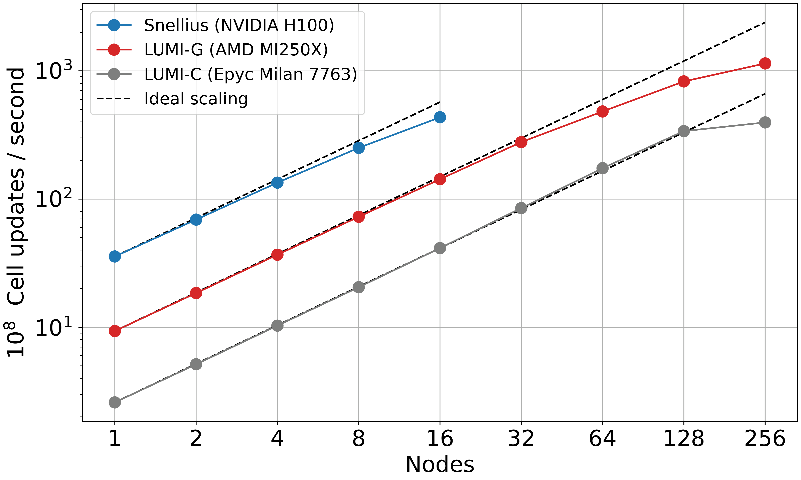
图注：Strong scaling. \(\agile\) scales well on both NVIDIA and AMD machines, and still does well on the LUMI CPU partition. While the absolute performance per node on Snellius is better than on LUMI, the sustained scaling and larger size of the LUMI GPU partition results in higher absolute performance.
对应解读：建议重点查看的图表第5项“强标度曲线”；关键图表逐图导读中关于图5强标度与2048 GPU扩展性的解读。
入选理由：这是最直接支撑论文核心性能声明的图，展示AGILE在NVIDIA、AMD以及LUMI CPU分区上的强标度表现，正好对应日报强调的GPU数增加时墙钟时间/性能如何偏离理想标度，以及摘要中“最高到2048 GPUs”的关键结论。
来源与置信度：\(arxiv_source\)；high；\(arxiv_source\) / agile.tex:figure[6]
Fig07
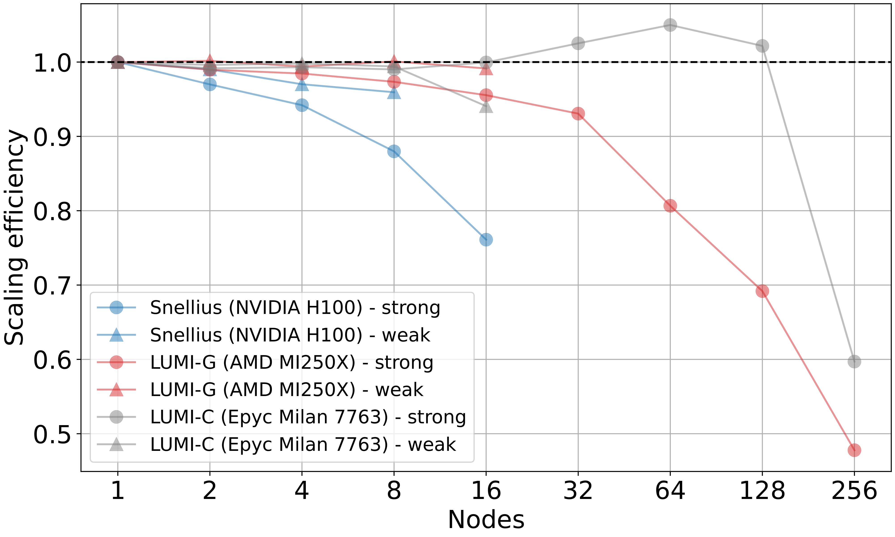
图注：Weak and strong scaling efficiency. \(\agile\) scales well on all systems in both strong and weak scaling.
对应解读：建议重点查看的图表第5项“强标度曲线”和第7项“性能诊断”；模型拟合段落中关于并行效率、弱标度和强标度经验标度的讨论。
入选理由：Fig06给出强标度表现，而Fig07进一步给出强、弱标度效率，是判断高GPU数下通信、负载均衡和每GPU工作量是否成为瓶颈的关键补充，比单纯总性能曲线更适合支撑日报中的性能模型解读。
来源与置信度：\(arxiv_source\)；high；\(arxiv_source\) / agile.tex:figure[7]
Fig05
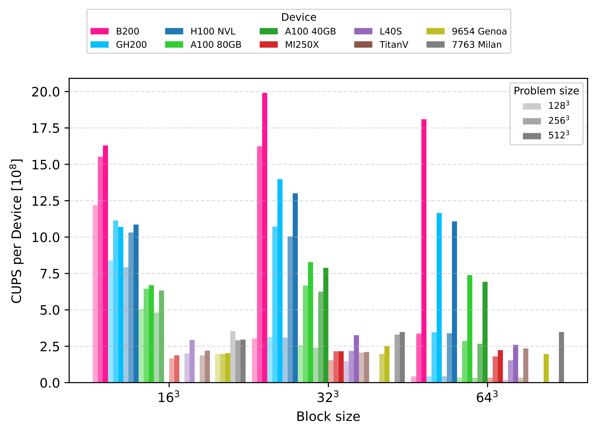
图注：Single device benchmark with varying problem- and block-sizes. Good performance is already obtained at small block size of $16^3$, a decreasing number of blocks per SM leads to reduced performance for large block sizes. This is seen clearly for the small test case $128^3$ resulting in only 8 blocks per device when a block size of $64^3$ is used.
对应解读：建议重点查看的图表第6项“块大小或AMR深度性能比较表”；关键图表逐图导读中关于16^3 block size是否接近最优的解读。
入选理由：该图直接比较不同问题规模和block size下的单设备性能，并明确说明16^3小块已能取得良好性能，正好对应日报反复强调的GPU occupancy、ghost-zone相对开销和小AMR块是否高效这一设计核心。
来源与置信度：\(arxiv_source\)；high；\(arxiv_source\) / agile.tex:figure[5]
Fig09
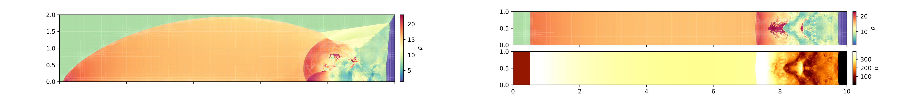
图注：Double Mach reflection structure impacting on a dense cloud. This case shows dynamical adaptive mesh structures using a total of six refinement levels. The simulation used up to 2048 GPUs (256 nodes) on the LUMI cluster. See \url{https://surfdrive.surf.nl/s/eYjk7fzaZnwXX8X} for an animated version of the figure. We show the density at $t=0.75$ in a vertical slice at $z=0.25$ (top) and density (middle) and pressure (bottom) in the horizontal slice $y=0.5$.
对应解读：建议重点查看的图表第2项“标准流体benchmark图”和第8项“科学应用图”；关键图表逐图导读中关于强间断、AMR refinement覆盖真实物理结构以及2048 GPU演示的部分。
入选理由：这张双马赫反射撞击致密云图同时展示密度、压力切片、六级AMR结构和最高2048 GPU运行，是连接数值benchmark、AMR动态加密和大规模GPU扩展能力的综合性证据，科学展示价值高于单纯形态图。
来源与置信度：\(arxiv_source\)；high；\(arxiv_source\) / agile.tex:figure[9]
Fig16
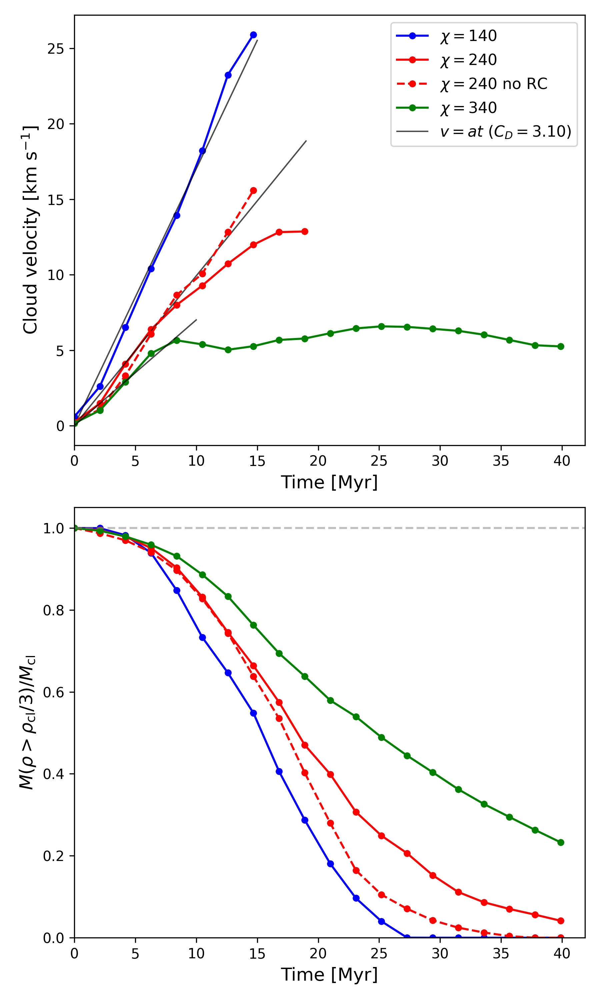
图注：Quantitative diagnostics for cloud-crushing runs at $\chi \in \{140, 240, 340\}$ on a uniform grid of $1280 \times 256 \times 256$ cells using the HLL solver, with an additional no-radiative-cooling run at $\chi = 240$ (dashed red). \(\textit{Top}\): cloud velocity $v_{25}(t)$, defined as the velocity at the 25th percentile of the integrated mass distribution along $x$; gray lines show the analytic ram-pressure drag prediction. \(\textit{Bottom}\): cold cloud mass fraction $f_\mathrm{cl}(t)$.
对应解读：模型拟合段落中关于把解析/半解析参考解视为数据、用诊断量检验数值模型的讨论；建议重点查看的图表第8项“科学应用图”。
入选理由：该图给出云压碎模拟的定量诊断，包括云速度、冷云质量分数以及解析ram-pressure drag预测线，比纯可视化图更能检验模拟输出是否物理可信，也能支撑日报中关于残差、参考模型和系统误差的解读。
来源与置信度：\(arxiv_source\)；high；\(arxiv_source\) / agile.tex:figure[16]
Fig08
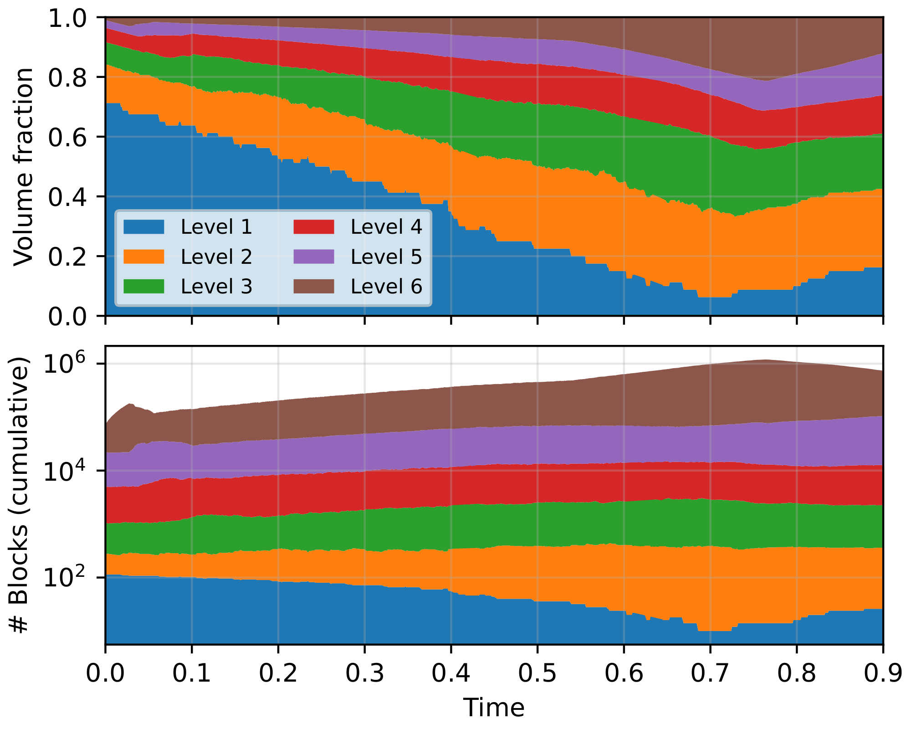
图注：Evolving AMR level population over simulation time for the double Mach reflection simulation. As more of the initially uniform domain becomes processed by the shock, the level 1 occupancy shrinks in favor of refined grids. At peak, over a million grid blocks are activated which decreases again as the shocked cloud is pushed out of the computational domain.
对应解读：建议重点查看的图表第1项“AMR层级、block和GPU/MPI设计如何连接”以及第6项“AMR深度性能比较”；详细解读中关于深层嵌套AMR和动态网格负载的部分。
入选理由：虽然它不是代码架构图，但它真实展示双马赫反射模拟中各AMR level的block population随时间演化，可用于判断动态加密带来的负载变化和百万级grid blocks的规模，是理解AMR运行成本和负载均衡压力的重要辅助图。
来源与置信度：\(arxiv_source\)；high；\(arxiv_source\) / agile.tex:figure[8]
强相关工作
这篇工作应放在 GPU 化 AMR 天体物理代码的大背景下看。相似类别包括 MPI-AMRVAC 的 AMR 太阳与天体物理模拟传统、Athena++ 或 AthenaK 的高性能 MHD 框架、FLASH 的多物理 AMR、PLUTO 的高能天体物理流体模块、RAMSES 的宇宙学 AMR，以及 Chombo、AMReX 等通用 AMR 基础设施。建议检索关键词包括“GPU AMR astrophysics code”、“OpenACC hydrodynamics MHD”、“MPI-AMRVAC AMR”、“AthenaK GPU MHD”、“FLASH AMR GPU”和“AMReX astrophysics hydrodynamics”。
基础理论方面，AGILE 依赖的是有限体积 Godunov 类方法、Riemann solver、TVD 或高阶 reconstruction、CFL 稳定性、AMR prolongation/restriction 与 refluxing、MHD 散度控制和相对论守恒变量反演。相反观点或张力主要来自两类：一类认为复杂 AMR 在 GPU 上不如规则网格或 moving mesh 容易高效扩展；另一类认为性能 benchmark 往往不能代表真实科学运行，因为真实问题包含 I/O、复杂边界、源项、辐射和长期演化。读者应把 AGILE 的性能结果与这些不同设计哲学对照，而不是孤立看待。
同一事件 / 同类源线索：
- https://arxiv.org/abs/2607.19277
- https://arxiv.org/pdf/2607.19277
- https://amrvac.org/
- https://www.openacc.org/
相似工作：
- https://flash.rochester.edu/site/
- https://plutocode.ph.unito.it/
- https://www.athena-astro.app/
- https://amrex-codes.github.io/amrex/
基础理论 / 方法工作：
相反观点 / 张力线索：
（未提供）
7. Universal scaling between magnetar field and initial spin period for short gamma ray bursts
- 来源：arXiv / astro-ph.HE
- 链接：https://arxiv.org/abs/2607.18698v1
- 作者：Qin-Mei Li, Qi-Bin Sun, Sheng-Bang Qian, Li-Yin Zhu, Fu-Xing Li, Si-Yuan Zhu, Ming Lian, Jing Li
- 评分：novelty 7/10，importance 7/10，relevance 9/10，final 8.70/10
- 推荐理由：系统分析33个短GRB X射线平台的磁星参数，给出sGRB与lGRB相似的Bp-P0标度关系；GRB主题高度相关，尽管模型依赖较强。
中文题目：短伽马暴中磁星极向磁场 \(B_p\) 与初始自转周期 \(P_0\) 的普适标度关系
做了什么：这篇文章把带有明显 X 射线平台的 33 个 Swift 短伽马暴作为样本，用新生毫秒磁星自转能注入模型反推出初始周期 \(P_0\) 和极向偶极磁场 \(B_p\)，并首次系统比较短暴与长暴的 \(B_p\)–\(P_0\) 关系。作者得到短暴磁星的 \(P_0\) 约为 \(1.73\)--\(18.28\,\mathrm{ms}\)，\(B_p\) 约为 \(0.06\)--\(2.82\times10^{17}\,\mathrm{G}\)，整体磁场显著高于长暴样本。核心结论是短暴与长暴的 \(B_p\)–\(P_0\) 斜率几乎相同，但截距不同：斜率相近指向相同的磁偶极自旋下降物理，截距偏移则可能编码并合起源与大质量恒星坍缩起源的差异。
为什么重要：短伽马暴是否由双中子星并合后形成的稳定或亚稳定毫秒磁星驱动，一直是 GRB 中心引擎问题的关键分支。X 射线平台给出了能量持续注入的观测线索，但过去短暴样本的 \(B_p\)–\(P_0\) 统计并不完整。这篇工作重要之处在于，它不是只拟合单个事件，而是把短暴放到与长暴同一参数平面上比较，试图区分“自旋下降机制是否普适”和“前身星通道是否不同”这两个问题。
理论 / 观测 / 仪器方法价值：对理论而言，文章把短暴平台期的能量注入参数转化为 \(B_p\) 与 \(P_0\)，给磁星中心引擎模型提供了群体层面的检验。对观测而言，它强调平台亮度、平台结束时间、红移和喷流效率等量如何共同决定推导出的磁星参数。对方法而言，\(B_p\)–\(P_0\) 平面可作为 GRB 分类和前身星诊断工具，而不只依赖持续时间 \(T_{90}\) 或宿主星系环境。
为什么应该关注：如果你关心短暴并合遗迹、引力波电磁对应体、磁星驱动千新星或 GRB 平台物理，这篇文章值得看。它给出一个可操作的经验标度：相同斜率说明短暴和长暴可能共享自旋下降能量释放规律，不同截距则提示形成时的磁场放大、吸积率和角动量历史不同。即使你不完全接受所有事件的平台都来自磁星，本文的样本选择、参数反演和系统误差也能帮助判断哪些短暴更适合做中心引擎人口统计。
展开详细解读：文章讲解、背景、理论、重点章节、图表与相关工作
文章详细讲解
科学问题：短伽马暴的 X 射线平台通常被解释为中心引擎在 prompt 发射之后继续向外流注入能量，其中一个流行解释是双中子星并合后形成了一个新生毫秒磁星。若平台由磁偶极自旋下降供能，那么平台光度和平台持续时间应能约束磁星的初始自转周期 \(P_0\) 与极向磁场 \(B_p\)。长伽马暴中已有关于 \(B_p\)–\(P_0\) 关系的讨论，但短暴缺少系统样本，因此很难判断两类 GRB 的磁星引擎究竟是同一物理机制在不同初始条件下的表现，还是根本不同的能量注入过程。
作者怎么做：文章选取 33 个 Swift 观测到、并在 X 射线余辉中呈现明显平台的短暴。作者把平台解释为新生磁星的自旋下降辐射，利用平台光度 \(L_0\) 与平台结束时间 \(\tau\) 反推出 \(P_0\) 和 \(B_p\)。随后，他们把短暴样本与已有长暴磁星样本放在同一 \(\log B_p\)–\(\log P_0\) 平面中，用幂律关系拟合斜率和截距，并进一步用标准自旋增速模型估计形成阶段所需的吸积率 \(\dot{M}\)。
关键结果：短暴磁星的 \(P_0\) 分布在 \(1.73\)--\(18.28\,\mathrm{ms}\)，而 \(B_p\) 分布在 \(0.06\)--\(2.82\times10^{17}\,\mathrm{G}\)，平均值约 \(7.05\times10^{16}\,\mathrm{G}\)。相比之下，长暴磁星的 \(B_p\) 通常在 \(10^{15}\,\mathrm{G}\) 量级，平均约 \(3.69\times10^{15}\,\mathrm{G}\)。拟合结果给出短暴 \(\log B_p=(0.84\pm0.07)\log P_0+(15.79\pm0.07)\)，长暴 \(\log B_p=(0.83\pm0.09)\log P_0+(14.92\pm0.06)\)。两者斜率在误差内一致，但短暴整体向更高磁场偏移。
局限和下一步：该结论依赖几个关键假设，包括平台确实由磁星自旋下降主导、辐射效率和喷流准直修正可被合理处理、平台结束时间对应自旋下降特征时标，以及样本选择没有严重偏向最亮或最容易识别的平台事件。短暴红移不完整、早期 XRT 采样间隙、能谱外推和平台分段拟合都会影响 \(L_0\) 与 \(\tau\)，进而影响 \(B_p\) 和 \(P_0\)。下一步应结合更完整的短暴红移样本、引力波触发短暴、千新星约束和余辉多波段建模，检验 \(B_p\)–\(P_0\) 偏移是否真由前身星通道造成，而不是样本选择或模型简化造成。
关键结果是怎么做出来的
样本选择是本文证据链的第一环。作者关注的是 Swift 短伽马暴中 X 射线余辉具有清楚平台结构的事件，共 33 个。这个选择并非代表全部短暴，而是代表“有足够 XRT 数据、平台可分辨、且可用磁星自旋下降模型解释”的子样本。因此，读者在看结论时应记住：本文证明的是平台型短暴的磁星参数统计，而不是所有短暴的无偏总体分布。
参数反演的关键输入是平台光度 \(L_0\) 和平台特征时间 \(\tau\)。通常 \(L_0\) 来自 X 射线流量经红移、能段修正和宇宙学距离转换后的各向同性光度，\(\tau\) 则对应平台转入正常衰减的断裂时间，并需要除以 \(1+z\) 转换到源静止系。利用磁偶极自旋下降公式，\(L_0\) 与 \(\tau\) 联立后可求 \(P_0\) 和 \(B_p\)。因此，表格中每个事件的红移、平台拟合误差、光谱指数和断裂时间都直接决定最终散点图中的位置。
最重要的统计结果是 \(\log B_p\)–\(\log P_0\) 线性拟合。短暴拟合斜率为 \(0.84\pm0.07\)，长暴为 \(0.83\pm0.09\)，两者在不确定度内高度一致。截距则相差约 \(0.87\,\mathrm{dex}\)，意味着在相同 \(P_0\) 下短暴磁星的 \(B_p\) 平均高出约一个数量级以内但非常显著。支撑这一结论的关键图应是短暴与长暴在同一对数平面上的散点图、最佳拟合线和置信带。
显著性判断主要来自斜率和截距的不确定度比较，以及短暴与长暴 \(B_p\) 分布的整体偏移。读者应检查作者是否使用了考虑双变量误差和内禀散布的回归方法，还是普通最小二乘。由于 \(B_p\) 和 \(P_0\) 是由同一组观测量 \(L_0\) 与 \(\tau\) 推导出来的，二者误差并不独立；如果拟合没有传播协方差，斜率误差可能偏小。
系统误差主要包括平台识别、红移缺失、喷流准直角、辐射效率 \(\eta\)、中子星半径 \(R\)、转动惯量 \(I\) 和质量 \(M\) 的假设。尤其是 \(B_p\propto R^{-3}\) 和 \(P_0\propto I^{1/2}\) 这类缩放会使不同状态方程给出的绝对值发生系统平移。若短暴和长暴采用相同的中子星参数，这种系统误差对两类相对斜率影响较小，但对截距解释仍有影响。
稳健性方面，最值得看的是作者是否尝试去掉极端高 \(B_p\) 或长 \(P_0\) 事件后重新拟合、是否比较不同平台模型、是否给出与长暴样本相同处理流程下的回归结果。若斜率一致性在删点后仍保持，而截距偏移仍存在，那么“普适自旋下降机制加不同形成通道”的解释会更有说服力。
展开背景、理论、公式、模型、章节和图表导读
背景知识
短伽马暴通常与致密双星并合相关，尤其是双中子星或中子星—黑洞并合。传统分类以 \(T_{90}\lesssim2\,\mathrm{s}\) 为短暴，但现代研究已经知道持续时间不是可靠的物理分类边界：有些长持续时间事件可能来自并合，有些短事件可能带有扩展发射或复杂余辉。因此，中心引擎和宿主环境等信息越来越重要。
X 射线平台是 Swift 时代 GRB 余辉研究的核心现象之一。标准外激波模型中，余辉通常按幂律衰减；若早期出现一段衰减很慢的阶段，说明可能存在持续能量注入、角结构效应、观测角效应、微物理参数演化或辐射过程变化。磁星模型的吸引力在于，它能自然给出一个近似恒定的自旋下降功率，并在特征时标后转为较陡衰减。
长暴中的磁星中心引擎常与大质量恒星坍缩后形成的快速旋转中子星联系起来，而短暴中的磁星则通常是并合后遗迹。两者若都能形成毫秒磁星，就可能共享磁偶极自旋下降这一后期能量释放机制；但它们形成磁场和角动量的方式不同，因而 \(B_p\) 与 \(P_0\) 的分布不必相同。本文正是利用这一点，把群体标度关系作为前身星通道诊断。
为什么现在值得重新看？一方面，Swift 已经积累了足够多有 XRT 平台的短暴；另一方面，GW170817 之后，并合遗迹的寿命、磁场放大和能量注入成为连接 GRB、千新星和引力波观测的共同问题。若短暴平台确实能测量并合后中子星的 \(B_p\) 和 \(P_0\)，它就能补充引力波对质量、潮汐形变和状态方程的约束。
该领域常见误区是把平台等同于磁星的“直接证据”。实际上，平台只是能量注入的表现，磁星是解释之一。另一个误区是把推导出的 \(B_p\) 和 \(P_0\) 当成直接观测量；它们是模型依赖参数，受效率、准直角、红移、能谱外推和中子星结构参数影响。本文的价值不在于每个事件的参数绝对精确，而在于用一致方法比较短暴与长暴的相对趋势。
基础理论 / 方法脉络
基本物理图像是：一个新生毫秒磁星具有巨大的转动能，若它带有强偶极磁场，旋转磁偶极辐射会持续抽取自转能。初期自转角速度 \(\Omega_0\) 很大，因此可用转动能 \(E_{\rm rot}\) 解释平台期间的能量注入。随着自旋下降，注入功率在特征时标 \(\tau\) 附近由近似常数转为随时间衰减。
在理想磁偶极模型中，平台光度 \(L_0\) 主要由 \(B_p\)、中子星半径 \(R\) 和 \(P_0\) 决定；平台结束时间 \(\tau\) 则由转动能除以自旋下降功率给出，主要依赖 \(I\)、\(B_p\)、\(R\) 和 \(P_0\)。因此，只要观测到 \(L_0\) 与 \(\tau\)，并给定 \(I\)、\(R\) 与辐射效率，就能反演 \(P_0\) 与 \(B_p\)。
本文的核心假设是短暴平台来自磁星自旋下降，而不是外激波能量注入的其他机制。作者把观测 X 射线通量转换为平台光度，并把平台断裂时间转换到源静止系。随后在 \(\log B_p\)–\(\log P_0\) 空间中寻找群体关系。这种做法的优点是直观，缺点是多个中间量共享同一观测输入，导致误差相关。
常见退化包括辐射效率 \(\eta\) 与喷流准直角的退化：同一个观测到的 X 射线平台，如果真实辐射效率较低或喷流更窄，推导出的总注入功率会改变。另一个退化来自中子星状态方程，因为 \(I\) 和 \(R\) 不确定会系统改变 \(P_0\) 与 \(B_p\)。红移不确定或缺失则会通过光度距离 \(D_L\) 影响 \(L_0\)。
在统计解释上，\(B_p\)–\(P_0\) 幂律关系并不一定意味着两者存在独立的因果标度，因为两者都由 \(L_0\) 与 \(\tau\) 组合而来。读者应特别注意拟合是否区分了物理相关与由反演公式诱导出的数学相关。本文的主要物理解释是：相同斜率对应相同自旋下降机制，截距差异对应不同形成通道下的磁场放大和吸积历史。
公式与推导
第一步从新生磁星的转动能出发。若中子星转动惯量为 \(I\)，角速度为 \(\Omega\)，则
这里 \(P\) 是自转周期，\(P_0\) 是初始周期。该式说明毫秒周期可以提供 \(10^{52}\,\mathrm{erg}\) 量级能量，是磁星解释 GRB 平台的基础。
第二步采用真空磁偶极自旋下降近似。若极向偶极磁场为 \(B_p\)，半径为 \(R\)，磁轴与自转轴夹角为 \(\alpha\)，则辐射功率可写为
通常在群体研究中把 \(\sin^2\alpha\) 吸收到归一化或取为数量级为 \(1\)，因此 \(L_{\rm sd}\) 对 \(B_p\) 和 \(P\) 的依赖近似为 \(L_{\rm sd}\propto B_p^2P^{-4}\)。
第三步由能量守恒得到自旋演化：
积分后得到标准形式
其中 \(L_0\) 是早期平台注入功率，\(\tau\) 是特征自旋下降时标。该表达式对应制动指数接近 \(3\) 的偶极辐射。
第四步，平台光度和时标可以写成常用缩放关系：
这里 \(B_{p,15}=B_p/10^{15}\,\mathrm{G}\)，\(P_{0,-3}=P_0/10^{-3}\,\mathrm{s}\)，\(R_6=R/10^6\,\mathrm{cm}\)，\(I_{45}=I/10^{45}\,\mathrm{g\,cm^2}\)。
第五步，把上面两式联立可反解初始周期：
这说明在固定 \(I\) 下，观测到的平台总能量尺度 \(L_0\tau\) 越大，所需 \(P_0\) 越短。若平台能量超过可用转动能，磁星解释就会受到挑战。
第六步，同样可反解磁场：
该式表明短 \(\tau\) 往往对应强 \(B_p\)，因为强磁场更快抽取转动能。短暴平台若持续时间较短但亮度高，就自然推导出更高的 \(B_p\)。
第七步，观测光度通常由流量转换而来：
其中 \(F_X\) 是观测能段 X 射线流量，\(D_L(z)\) 是光度距离，\(K(z,\Gamma_X)\) 是依赖红移和光子谱指数 \(\Gamma_X\) 的能段修正。若还考虑辐射效率 \(\eta\)，则可用 \(L_0\approx L_X/\eta\) 或相应的准直修正光度。
第八步，本文拟合的群体关系可写为
短暴得到 \(a=0.84\pm0.07\)、\(b=15.79\pm0.07\)，长暴得到 \(a=0.83\pm0.09\)、\(b=14.92\pm0.06\)。斜率 \(a\) 的一致性支持共同的自旋下降标度，截距 \(b\) 的差异对应相同 \(P_0\) 下不同的磁场归一化。
第九步，若用高斯误差做线性回归，基本似然可表示为
这里 \(x_i=\log_{10}(P_{0,i}/\mathrm{ms})\)，\(y_i=\log_{10}(B_{p,i}/\mathrm{G})\)，\(\sigma_{\rm int}\) 是内禀散布。该式是读者检查斜率、截距和内禀散布是否被合理估计的统计基准。
模型拟合 / 应用方法
本文的拟合分为两层。第一层是对每个短暴 X 射线余辉平台的时间行为进行表征，得到平台光度 \(L_0\) 和断裂时间 \(\tau\)。这一步通常需要对 XRT 光变曲线做分段幂律或平滑断裂幂律拟合，并结合能谱把计数率转换为能流。平台是否“明显”会影响样本进入与否，因此这一步带有选择函数。
第二层是把 \(L_0\) 与 \(\tau\) 代入磁偶极自旋下降模型，反演 \(P_0\) 和 \(B_p\)。这并不是普通的独立参数拟合，而是模型方程驱动的参数映射。若 \(L_0\) 与 \(\tau\) 的误差较大，或者二者在光变曲线拟合中相关，那么 \(P_0\) 与 \(B_p\) 的误差椭圆也会相关。理想情况下应通过 Monte Carlo 传播平台参数误差，而不只给出点估计。
第三层是群体回归，即在 \(\log B_p\)–\(\log P_0\) 平面拟合幂律。这里应考虑 \(x\) 轴和 \(y\) 轴都有误差，并允许内禀散布 \(\sigma_{\rm int}\)。如果使用普通最小二乘，可能低估斜率不确定度；如果使用正交距离回归或层级贝叶斯模型，结论会更稳健。本文报告的短暴和长暴斜率误差较小，读者应重点查看误差模型和回归方法。
主要退化关系包括 \(L_0\) 与效率 \(\eta\)、喷流开角 \(\theta_j\)、红移 \(z\) 的退化，以及中子星结构参数 \(I\) 和 \(R\) 的系统平移。由于 \(B_p\propto R^{-3}\)，半径假设的变化会显著改变磁场归一化；由于 \(P_0\) 与 \(I^{1/2}\) 有关，状态方程也会影响初始周期。若短暴和长暴的遗迹质量分布不同，那么统一采用同一 \(I\) 和 \(R\) 可能掩盖真实差异或制造部分截距差异。
模型可能失败的场景也很明确：平台可能来自外激波能量注入而非中心引擎；平台结束可能是喷流几何或观测角造成的断裂；并合后遗迹可能在平台结束前坍缩为黑洞，使简单 \((1+t/\tau)^{-2}\) 自旋下降不适用；X 射线只代表总注入能量的一小部分且效率随时间变化。这些情况都会改变 \(B_p\) 与 \(P_0\) 的物理解释。
实际应用上，这类拟合可用于把未来短暴，尤其是有引力波触发或千新星候选的短暴，快速放到 \(B_p\)–\(P_0\) 平面中。如果某个事件落在短暴关系附近，说明它与并合磁星通道一致；若落在长暴关系或远离两者，则需要重新检查分类、平台模型或能量预算。
重点章节 / 结果段落怎么读
数据与样本部分应首先阅读。重点看 33 个短暴如何定义：是否只按 \(T_{90}\) 选取，是否排除扩展发射或红移未知事件，平台识别标准是什么，XRT 光变曲线的时间覆盖是否足以可靠确定 \(\tau\)。这一节决定结论的适用范围。
平台参数反演方法部分是技术核心。读者应检查作者采用的磁星自旋下降公式、假定的中子星半径 \(R\)、转动惯量 \(I\)、辐射效率 \(\eta\) 和是否进行源静止系修正。若文中有表格列出 \(L_0\)、\(\tau\)、\(P_0\)、\(B_p\)，应逐列看单位和误差来源。
主结果部分应集中看 \(B_p\) 与 \(P_0\) 的分布范围，以及短暴和长暴样本在同一图中的相对位置。核心不是单个事件的极端值，而是短暴整体相对长暴向高 \(B_p\) 偏移，同时两类样本拟合斜率一致。
回归和比较部分需要特别关注统计细节。看作者是否报告斜率、截距、相关系数、置信区间和可能的内禀散布；是否说明长暴对照样本来自哪里、是否与短暴采用一致反演流程。若两类样本处理流程不同，截距差异的物理解释会变弱。
讨论部分的重点是吸积率 \(\dot{M}\) 和前身星通道解释。作者在标准自旋增速模型下推断短暴 \(\dot{M}\sim10^{-1}\)--\(3\times10^{-1}\,M_\odot\,\mathrm{s}^{-1}\)，高于长暴的 \(10^{-4}\)--\(10^{-1}\,M_\odot\,\mathrm{s}^{-1}\)。读者应把这部分看成模型依赖解释，而不是直接观测量。
建议重点查看的图表
-
样本光变曲线或平台示意图：看 XRT 数据是否真的存在平坦阶段，平台结束时间 \(\tau\) 是否由数据覆盖而非外推决定。
-
事件参数表：重点检查每个短暴的红移、\(L_0\)、\(\tau\)、\(P_0\) 和 \(B_p\)，以及是否存在少数极端事件主导回归。
-
\(B_p\) 分布直方图或核密度图：看短暴与长暴磁场分布是否明显分离，还是只是均值不同但散布重叠很大。
-
\(P_0\) 分布图：检查是否有事件接近离心破裂极限，即 \(P_0\sim1\,\mathrm{ms}\) 附近；若有，模型对状态方程会更敏感。
-
\(\log B_p\)–\(\log P_0\) 散点图：这是最关键图。看短暴和长暴的拟合线是否平行、置信带是否重叠、截距偏移是否由少数点驱动。
-
吸积率 \(\dot{M}\) 对比图或表：看短暴和长暴推导出的 \(\dot{M}\) 范围是否有清晰分离，以及该结论对自旋增速模型假设是否敏感。
-
稳健性检验图：若有删点拟合、不同效率假设或不同中子星参数下的结果，应检查斜率一致性和截距偏移是否仍然存在。
关键图表逐图导读
图 1：如果论文展示短暴 XRT 光变曲线，横轴通常是爆发后时间，最好是源静止系时间 \(t/(1+z)\)，纵轴是 X 射线流量或光度。数据点代表 Swift/XRT 观测，模型线可能是分段幂律或平台加衰减模型。读图时不要只看平台是否平，而要看平台前后是否有足够采样、断裂时间是否被数据夹住、误差条是否允许其他衰减模型。
图 2：若为 \(P_0\) 和 \(B_p\) 的分布图，横轴分别是 \(P_0\) 或 \(B_p\)，纵轴是事件数或概率密度。短暴应显示 \(B_p\) 主要落在 \(10^{16}\)--\(10^{17}\,\mathrm{G}\) 附近，而长暴更多在 \(10^{15}\,\mathrm{G}\) 量级。读图陷阱是样本并非无偏总体，平台越亮越容易入选，因此高 \(B_p\) 事件可能被放大。
图 3：最关键的 \(\log B_p\)–\(\log P_0\) 图中，横轴应为 \(\log P_0\)，纵轴为 \(\log B_p\)。短暴与长暴用不同符号或颜色表示，实线为最佳拟合，阴影为置信区间。主要结论是两条线斜率几乎相同但短暴线整体上移。读者应检查置信带是否包含系统误差，还是只包含统计误差。
图 4：若有残差或回归诊断图，横轴可能是 \(P_0\)、\(L_0\)、\(\tau\) 或拟合值，纵轴是 \(\Delta\log B_p\)。应看残差是否随机分布，还是随 \(P_0\) 或红移系统变化。如果高红移或高光度事件系统偏离，说明选择效应或光度转换可能影响标度关系。
图 5：若论文讨论吸积率 \(\dot{M}\)，图上可能比较短暴和长暴的 \(\dot{M}\) 范围。横轴可以是 \(P_0\)、\(B_p\) 或 GRB 类型，纵轴为 \(\dot{M}\)。关键是短暴是否集中在 \(10^{-1}\,M_\odot\,\mathrm{s}^{-1}\) 量级，而长暴覆盖更低范围。读图时应记住 \(\dot{M}\) 是模型推导量，不是直接测量。
论文原图 / 可嵌入图片
Fig01
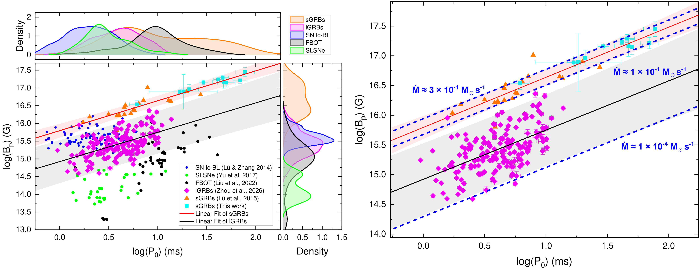
图注：Left: $B_p$–$P_0$ parameter plane of sGRBs and lGRBs powered by magnetar central engines. The two GRB populations show distinct segregation across the magnetic field–initial spin period parameter space; all magnetar parameters are inferred from modeling Swift X-ray afterglow plateaus. Overlaid comparison samples are superluminous supernovae (SLSNe, green points; \citealp{2017ApJ...840...12Y}), lGRBs (violet points; \citealp{2026ApJ..1004L..11Z}), fast blue optical transients (FBOTs, black points; \citealp{2022ApJ...935L..34L}), and broad-line Type Ic supernovae (SNe Ic-BL, blue points; \citealp{2014ApJ...785...74L}). Right: $B_p$–$P_0$ correlations of lGRBs and sGRBs under distinct mass accretion rates.
对应解读：对应“建议重点查看的图表”第5项\(\log B_p\)–\(\log P_0\)散点图、第6项吸积率\(\dot{M}\)对比，以及“关键图表逐图导读”中图3和图5的核心解读。
入选理由：这是候选中唯一真实存在的图，并且直接展示论文最关键的\(B_p\)–\(P_0\)参数平面：左面板比较短暴、长暴及其他磁星候选暂现源在磁场和初始自旋周期空间中的位置，右面板给出短暴和长暴在不同质量吸积率下的相关关系。它最能支撑日报关于两类GRB斜率近似一致、短暴整体磁场更高、截距偏移可能反映不同前身星通道，以及吸积率范围差异的详细解读。
来源与置信度：\(arxiv_source\)；high；\(arxiv_source\) / sample631.tex:figure[1]
强相关工作
这篇工作属于 GRB 磁星中心引擎和 X 射线平台人口统计研究。与它最直接相关的是短暴平台的早期 Swift 研究、长暴中磁星参数反演研究、以及把平台解释为持续能量注入或亚稳定磁星坍缩的工作。建议检索关键词包括 “short GRB X-ray plateau magnetar central engine”、“millisecond magnetar spin-down gamma-ray bursts”、“\(B_p\) \(P_0\) correlation long GRBs” 和 “Swift short gamma-ray burst plateau population”。
它也应放在并合遗迹物理的背景中看。GW170817 之后，双中子星并合是否能形成长寿命磁星、磁星能量注入是否会改变千新星亮度、以及短暴是否都需要黑洞吸积盘引擎，都是有张力的问题。本文支持至少一部分短暴平台可由高磁场毫秒磁星解释，但并不排除黑洞中心引擎、外激波几何效应或其他能量注入机制。建议检索 “GW170817 magnetar remnant constraints”、“magnetar-powered kilonova”、“black hole engine short GRB plateau” 和 “supramassive neutron star collapse short GRB”。
同一事件 / 同类源线索：
相似工作：
（未提供）
基础理论 / 方法工作：
（未提供）
相反观点 / 张力线索：
（未提供）
8. Modes in Transitional Millisecond Pulsars: Evidence of Pulsar Wind-Induced Disk Heating from GRMHD and Radiative Transfer
- 来源：arXiv / astro-ph.HE
- 链接：https://arxiv.org/abs/2607.19113v1
- 作者：Mignon-Risse Raphaël, Linares Manuel, Parfrey Kyle, Tchekhovskoy Alexander, Ressler Sean
- 评分：novelty 8/10，importance 7/10，relevance 8/10，final 8.65/10
- 推荐理由：用GRMHD加辐射转移解释过渡毫秒脉冲星X射线模式，提出脉冲星风加热盘的具体机制，并与观测自旋下降和光谱相符；对致密天体高能辐射有较好价值。
中文题目：过渡毫秒脉冲星的模态：来自广义相对论磁流体模拟和辐射转移的脉冲星风加热吸积盘证据
做了什么：这篇文章用二维轴对称广义相对论磁流体模拟加辐射转移后处理，研究过渡毫秒脉冲星在吸积盘态中为什么会出现低、高两种 X 射线模态。作者改变盘密度也就是内流率，让吸积流分别停在光柱之外和进入光柱之内，并计算热同步辐射、吸收和康普顿散射后的谱。核心结论是：当盘被截断在光柱外时，脉冲星风能有效加热盘，产生更强的 X 射线同步辐射，可能对应高 X 射线模态；当盘进入光柱内进入推进器状态时，风加热通常较弱，但推进器会间歇性排空盘、短暂恢复风加热。用约 \(70\%\) 推进器态加约 \(30\%\) 风加热态的混合谱，可以解释低 X 射线模态。
为什么重要：过渡毫秒脉冲星是连接射电脉冲星和吸积供能中子星的关键对象，但它们的低、高 X 射线模态长期没有清晰物理图像。本文的重要性在于，它不是只用半解析截断半径或经验谱模型解释模态，而是把磁层—盘相互作用、脉冲星风、推进器喷出和辐射过程放进同一数值框架中，给出一个可检验的解释：较亮的高模态并不一定意味着更强的表面吸积，反而可能主要来自脉冲星风对盘的加热。
理论 / 观测 / 仪器方法价值：对理论而言，这篇工作把过渡毫秒脉冲星的模态问题从“吸积率变化导致亮度变化”的直觉框架，推进到“光柱位置、磁层拓扑、风—盘能量沉积和推进器循环共同决定辐射”的框架。对观测而言，它给出低、高模态光谱、平均自转变慢率增强以及模态占空比之间的联系，可用于重新解读 \(\mathrm{PSR\ J1023+0038}\)、\(\mathrm{XSS\ J12270-4859}\) 等系统的 X 射线谱和计时数据。对方法而言，它展示了在这类低光度相对论磁层系统中，\(\mathrm{GRMHD}\) 加辐射转移后处理可以直接比较观测谱，而不只是比较动力学量。
为什么应该关注：如果你关心中子星磁层、低光度吸积、毫秒脉冲星再循环或紧凑天体盘—风耦合，这篇文章值得看，因为它挑战了一个常见预设：X 射线更亮就代表更多物质到达中子星表面。作者的结果暗示，脉冲星自转能可以通过风加热外盘，以同步辐射形式进入 X 射线波段；这会影响我们如何从 X 射线亮度反推吸积率、磁层半径和自转力矩。
展开详细解读：文章讲解、背景、理论、重点章节、图表与相关工作
文章详细讲解
科学问题：过渡毫秒脉冲星在射电脉冲星态和有盘 X 射线态之间切换，是研究“再循环”情景和中子星磁层物理的少数直接窗口。在有盘态中，系统又会在低 X 射线模态和高 X 射线模态之间随机跳变，亮度低于典型低质量 X 射线双星，却仍表现出强磁层活动、脉冲、喷出和自转变慢增强。问题是：这些 X 射线到底来自中子星表面吸积、盘内耗散、推进器冲击，还是来自仍然开启的脉冲星风？
作者怎么做：本文建立二维轴对称广义相对论磁流体模拟，模拟旋转磁化中子星周围的吸积盘与磁层相互作用。关键控制量是盘密度，等价于改变内流率，使盘内缘相对于光柱半径 \(R_{\rm LC}\) 有两种状态：一种是盘停在 \(R_{\rm LC}\) 外，脉冲星风可以在盘表面或内缘沉积能量；另一种是盘进入 \(R_{\rm LC}\) 内，磁层进入推进器状态，物质被离心和电磁力矩部分抛出。与许多只分析动力学结构的模拟不同，作者首次对这类过渡毫秒脉冲星模拟做包含热同步辐射、同步自吸收和康普顿散射的辐射转移后处理，因而可以直接生成 X 射线谱并与观测模态比较。
关键结果：在盘截断于光柱外的“风加热”状态，X 射线通量主要来自被脉冲星风加热后的盘同步辐射，而不是常规薄盘热辐射或表面边界层辐射。这个状态更亮，光谱形状可对应高 X 射线模态。相反，当盘进入光柱内的推进器状态时，连续风加热被削弱，系统总体 X 射线较暗；但推进器会间歇性把内盘推出，短暂让盘回到受风加热的结构。作者发现把约 \(70\%\) 推进器谱与约 \(30\%\) 风加热谱线性混合后，可以再现低 X 射线模态的观测谱。力矩方面，推进器态产生额外电磁力矩，使有盘态平均自转变慢率比无盘射电脉冲星态高几个百分点，量级上与观测相符。
局限和下一步：二维轴对称模拟无法完整捕捉三维非轴对称不稳定性、盘湍流、磁重联片破碎和真实模态切换的随机性，因此占空比和时间结构仍应谨慎解释。辐射转移后处理依赖电子温度、非热粒子比例、盘密度归一化、视角和距离等假设；这些量可能与观测谱存在退化。下一步最自然的是三维 \(\mathrm{GRMHD}\) 加更自洽的电子热力学、偏振和时变辐射转移，并同时拟合 X 射线谱、X 射线脉冲、紫外光学和射电喷出行为，以检验风加热是否真是两种模态的共同能量源。
关键结果是怎么做出来的
本文最重要的证据链从样本选择上说并不是统计大量源，而是针对过渡毫秒脉冲星这一类系统建立物理可比的数值实验。作者选择两个代表性盘密度，也就是两个内流率区间，使模拟自然落入两类动力学状态：盘内缘在光柱半径 \(R_{\rm LC}\) 外的风加热状态，以及盘进入 \(R_{\rm LC}\) 内的推进器状态。这个选择对应观测中低、高 X 射线模态可能只需小幅吸积环境变化便可切换的事实，而不是把模态预设为完全不同的源区。
事件数意义上的“样本量”在这里体现为模拟时间序列与辐射快照集合，而不是望远镜探测到的离散事件。作者从 \(\mathrm{GRMHD}\) 演化中取出准稳态阶段，对不同时间快照进行辐射转移后处理，估计平均谱和模态混合谱。关键比较不是单个快照是否碰巧接近观测，而是风加热态、推进器态以及 \(70\%\) 加 \(30\%\) 混合后，是否能同时解释低、高模态的光谱归一化和谱形。
显著性或置信度的逻辑更接近模型比较而非传统源探测。文章把模拟谱与观测 X 射线模态谱相比较，检验哪种动力学状态能给出正确的 X 射线亮度、谱斜率和相对模态亮度。高模态由光柱外风加热盘主导，低模态则不能只用纯推进器谱解释，需要加入一部分风加热谱；这个混合比例是连接动力学占空比和观测谱的关键参数。读者应重点查看谱图中同步辐射、吸收和康普顿贡献如何叠加，以及不同状态的模型线是否在观测误差范围内穿过低、高模态数据。
力矩结果是另一条独立证据链。观测上，过渡毫秒脉冲星在有盘态的自转变慢率通常比射电脉冲星态略高。本文计算电磁力矩并在两种模态间按占空比平均，发现推进器引起的额外力矩只把平均自转变慢率提高几个百分点，而不是提高一个数量级。这一点很重要，因为若模型要求过强力矩，就会与计时观测冲突；若完全没有额外力矩，又难解释有盘态自转变慢增强。
主要系统误差包括盘密度归一化、电子温度处方、二维轴对称限制、辐射转移中粒子分布函数的假设、视角和距离，以及模拟中磁场强度与真实源参数的映射。稳健性检验应看不同密度状态是否稳定地落入光柱外和光柱内两类结构，辐射贡献是否始终由风加热同步辐射主导，以及力矩平均是否对模态权重高度敏感。若稍改参数就需要完全不同的混合比例，说明解释仍偏模型依赖；若谱形和力矩在合理参数范围内都稳定，则风加热方案更可信。
展开背景、理论、公式、模型、章节和图表导读
背景知识
过渡毫秒脉冲星是少数被看见在射电脉冲星态和吸积盘态之间来回切换的中子星双星。经典再循环图像认为，低质量伴星长期向中子星输送角动量，把老年中子星自转加速到毫秒量级；当吸积停止时，它表现为旋转供能射电脉冲星。过渡毫秒脉冲星的特别之处在于，它们把这个过程的两个阶段压缩到可观测时间尺度上，因此可以检验吸积盘如何打开或关闭脉冲星磁层。
历史问题在于，有盘态的过渡毫秒脉冲星不像普通低质量 X 射线双星那样亮。它们的 X 射线光度较低，却呈现低模态、高模态和耀发等复杂行为，并且模态切换可以很快发生。若按常规吸积思路，较亮高模态应对应更多物质落到中子星表面；但观测到的光度、脉冲特征和自转变慢率并不容易与稳定表面吸积统一起来。
理论背景涉及三个半径：共转半径、磁层半径和光柱半径。若盘内缘位于共转半径外，磁层旋转快于局部开普勒流，可进入推进器状态，把物质抛出；若盘内缘接近或超过光柱半径，旋转供能脉冲星风可以保持开放磁层并向外输送能量。过渡毫秒脉冲星恰好处在这些半径相互接近的区域，小的内流率变化可能导致磁层拓扑和辐射机制发生明显改变。
为什么现在值得重新看：一方面，\(\mathrm{GRMHD}\) 模拟已经能较真实地处理旋转磁化紧凑星周围的盘—磁层相互作用；另一方面，辐射转移后处理使模拟可以从“看起来像推进器”走向“光谱是否像观测”。此外，长期 X 射线监测和脉冲计时给出了模态占空比、谱形和自转变慢率等多重约束，迫使理论模型不能只解释单一亮度。
该领域常见误区包括：第一，把低、高模态简单理解为吸积率高低，而忽略脉冲星风可能是 X 射线能量源；第二，把光柱当成硬边界，认为盘进入或退出光柱会瞬间完全关闭某种机制，实际上磁层、风和盘可能共存并时变；第三，把推进器等同于“没有辐射”，但推进器可以通过冲击、湍流和间歇性排盘产生复杂辐射；第四，用稳态薄盘谱直觉解释低光度有盘态，可能会低估非热同步辐射和风加热的重要性。
基础理论 / 方法脉络
基本物理图像是一个高速旋转、强磁化的中子星被低质量伴星供给物质。中子星磁偶极与等离子体相互作用，形成磁层；盘物质试图向内输运角动量并释放引力能，而磁层试图通过磁张力和电磁风把角动量、能量向外带走。系统处在吸积、推进器和旋转供能脉冲星风之间的临界区域，因而小的内流率变化就能改变辐射主导机制。
关键半径决定动力学状态。光柱半径 \(R_{\rm LC}=c/\Omega_*\) 是刚性共转速度等于光速的位置，其中 \(\Omega_*\) 是中子星角速度。共转半径 \(R_{\rm co}\) 是开普勒角速度等于 \(\Omega_*\) 的位置。磁层半径 \(R_{\rm m}\) 则由磁压与盘的动压或物质压力平衡近似决定。若 \(R_{\rm m}\) 大于 \(R_{\rm co}\)，推进器效应容易出现；若盘停在 \(R_{\rm LC}\) 外，开放磁层和脉冲星风可以比较自然地存在并加热盘。
本文的模型假设是用 \(\mathrm{GRMHD}\) 追踪流体、磁场和时空背景下的能量动量交换，再用辐射转移计算光谱。由于模拟本身不一定自洽演化所有电子微观加热过程，辐射后处理通常需要给电子温度或电子分布函数一个处方。本文考虑热同步辐射、同步自吸收和康普顿散射，意味着 X 射线谱不只是局部黑体叠加，而由磁场强度、电子温度、密度、光学深度和散射历史共同决定。
观测方法上的核心是把模型给出的谱能分布与低、高 X 射线模态谱比较，同时检查自转力矩。低、高模态的亮度差如果来自风加热强弱，应在谱形、模态占空比和力矩上留下相互一致的信号。这里的退化包括：增加电子温度、增加密度、改变磁场强度或改变视角，都可能改变 X 射线归一化；同时，推进器态和风加热态的时间混合也可模拟某些谱形变化。因此单独拟合光谱不足以完全证明机制，必须结合动力学状态和计时力矩。
系统误差还来自二维轴对称近似。真实盘中的磁旋转不稳定、非轴对称团块、倾斜磁偶极、轨道相位相关吸收和三维重联，都会影响局部加热和短时模态切换。本文结果更适合被理解为“风加热足以解释观测量级，并与推进器力矩不冲突”的物理可行性论证，而不是已经给出唯一的源参数反演。
公式与推导
第一步是确定光柱尺度。若中子星自转角速度为 \(\Omega_*\)，刚性共转速度在半径 \(R\) 处为 \(v=\Omega_* R\)。令 \(v=c\)，得到
其中 \(P_*\) 是自转周期，\(c\) 是光速。这个半径标记了封闭磁层很难继续刚性共转的区域，也是判断盘是否侵入脉冲星风区的基本尺度。
第二步是共转半径。开普勒角速度满足 \(\Omega_{\rm K}=(GM_*/R^3)^{1/2}\)。令 \(\Omega_{\rm K}=\Omega_*\)，有
其中 \(G\) 是引力常数，\(M_*\) 是中子星质量。当盘内缘 \(R_{\rm in}\) 大于 \(R_{\rm co}\) 时，磁层比盘转得快，物质更容易被离心抛出，这就是推进器判据的基础。
第三步是磁层截断的量级估计。用偶极磁场 \(B(R)\simeq \mu/R^3\) 与球对称动压标度平衡，可得常用 Alfvén 半径近似
其中 \(\mu\) 是磁偶极矩，\(\dot{M}\) 是内流率，\(\xi\) 是几何和盘结构修正因子。虽然本文用数值模拟而非这个公式决定结构，但该式说明降低 \(\dot{M}\) 会把 \(R_{\rm m}\) 向外推，可能越过 \(R_{\rm LC}\)。
第四步是推进器强弱常用快慢参数表示：
当 \(\omega_{\rm s}>1\) 时，磁层向盘施加正角动量，内流物质倾向于被抛出；当 \(\omega_{\rm s}<1\) 时，稳定吸积更容易发生。本文的推进器态正对应 \(R_{\rm in}\) 进入光柱内但仍处于强磁离心作用的区域。
第五步是旋转供能脉冲星风的能量库。偶极自转损失量级可写为
其中 \(f(\alpha,\eta)\) 表示磁倾角 \(\alpha\) 和等离子体负载 \(\eta\) 对力矩的修正。若一部分自转损失功率以比例 \(\epsilon_{\rm h}\) 沉积到盘中，则风加热功率约为
本文的核心物理解释就是 \(L_{\rm heat}\) 可通过同步辐射进入 X 射线，而不必要求同等量级的表面吸积光度。
第六步是热同步辐射发射率的基本依赖。对热电子温度 \(T_{\rm e}\)、数密度 \(n_{\rm e}\) 和磁场 \(B\)，局部发射率可概括为
其中 \(k_{\rm B}\) 是玻尔兹曼常数，\(m_{\rm e}\) 是电子质量。该式强调 X 射线谱对电子热力学和磁场都敏感，这也是辐射后处理必须引入电子温度处方的原因。
第七步是辐射转移方程。沿光线仿射路径 \(s\)，比强度 \(I_\nu\) 满足
其中 \(j_\nu\) 是发射系数，\(\alpha_\nu\) 是吸收系数，最后一项表示康普顿散射贡献。本文把热同步辐射、同步自吸收和康普顿散射纳入同一个后处理框架，因此模型谱不只是局部发射率的简单积分。
第八步是从模型强度到观测通量。若源距为 \(D\)，观测频率为 \(\nu_{\rm obs}\)，图像平面立体角元为 \(d\Omega\)，则
比较低、高模态谱时，实际检验的是 \(F_{\nu}\) 的归一化和斜率是否同时匹配观测。
第九步是模态混合。若低模态由推进器态和风加热态的时间混合构成，可写为
其中本文给出的代表性解释为 \(f_{\rm prop}\simeq 0.7\)。这个方程让读者直接检查：低模态谱是否需要一部分风加热贡献，还是纯推进器谱已足够。
第十步是平均自转力矩诊断。若射电脉冲星态力矩为 \(N_{\rm radio}\)，有盘推进器额外力矩为 \(\Delta N_{\rm prop}\)，风加热态额外力矩为 \(\Delta N_{\rm wind}\)，则模态平均力矩可写为
观测上可由 \(N=I_*\dot{\Omega}_*\) 与计时测量比较，其中 \(I_*\) 是中子星转动惯量。本文发现 \(\langle N\rangle\) 只比无盘射电脉冲星态高几个百分点，这是模型不过度预测自转变慢的关键。
模型拟合 / 应用方法
本文的“拟合”不是传统意义上对观测数据做大规模参数后验采样，而是用物理模拟产生两类状态的谱和力矩，再与已知低、高 X 射线模态进行比较。拟合量主要包括谱归一化、谱形、低高模态相对亮度、模态混合权重以及平均自转变慢率。尤其关键的是低模态混合比例：约 \(70\%\) 推进器态加约 \(30\%\) 风加热态可以复现低模态谱，而高模态更接近纯风加热态。
若把这类工作写成统计模型，似然通常会比较观测通量 \(F_{\nu,i}^{\rm obs}\) 与模型通量 \(F_{\nu,i}^{\rm mod}\)，并加入距离、吸收柱密度、电子温度处方和归一化不确定性。由于模拟成本高，作者很可能不会对所有参数做密集采样；因此读者需要把结论理解为模型可行性和物理机制识别，而不是唯一最优参数解。实际看残差时，应关注模型是否系统性低估软 X 射线或硬 X 射线，而不是只看总光度接近。
退化关系相当重要。增加盘密度会提高发射量，但也会改变内缘位置，从而改变是否有风加热；提高电子温度可增强高能同步或康普顿成分，却未必代表真实内流率更高；改变磁场强度既影响光柱附近电磁功率，也影响同步辐射效率；改变视角会改变吸收路径和相对论增亮。因此，一个看似成功的谱拟合可能由多组物理参数实现，必须用力矩、模态占空比和多波段数据破除退化。
系统误差包括数值分辨率、二维轴对称几何、磁场拓扑、边界条件、电子热力学处方、辐射转移近似和观测吸收修正。推进器排盘的间歇性在二维模拟中可能比三维真实系统更规则或更强，因此 \(70\%\) 与 \(30\%\) 的比例不应被当成普适常数。更稳妥的读法是：低模态可能不是单一推进器态，而是被快速时间平均后的混合态。
实际应用上，这套框架可用于重新解释过渡毫秒脉冲星的 X 射线谱—计时联合数据。若某个源在有盘态自转变慢率只略高于射电脉冲星态，同时高模态 X 射线过亮而不伴随强表面吸积证据，那么风加热盘模型会很有吸引力。反过来，若未来观测发现高模态具有强热热点谱、稳定吸积脉冲和与风无关的力矩行为，就会削弱本文解释。
重点章节 / 结果段落怎么读
数据和物理设定部分应先看作者如何选择中子星自转、磁场、盘密度和数值单位到真实源的映射。读者要特别注意两个盘密度对应的内流率是否只是为了覆盖低、高模态而调参，还是自然落在过渡毫秒脉冲星观测允许范围内。
\(\mathrm{GRMHD}\) 方法部分要看网格、边界条件、磁场初始化、盘注入或初始环设置，以及如何定义光柱、盘内缘和开放磁通。这里决定了“盘截断在光柱外”和“盘进入光柱内”是否是模拟动力学结果，而不是后验命名。
辐射转移部分是本文相对新颖的核心。读者应检查热同步辐射、吸收和康普顿散射如何实现，电子温度如何从单流体 \(\mathrm{GRMHD}\) 变量得到，是否考虑相对论红移、光线弯曲和视角。若电子温度处方过于自由，谱匹配的物理约束会减弱。
结果部分应按两条线阅读：一条是动力学结构，包括光柱内外的盘位置、推进器喷出和风加热区域；另一条是可观测量，包括低、高模态谱和自转力矩。最关键的问题是：更亮的高模态是否确实来自风加热盘，而不是单纯更高 \(\dot{M}\) 的盘辐射。
讨论和稳健性部分要看作者如何处理二维限制、参数缩放和与具体源观测的对应关系。尤其要关注他们是否承认 \(70\%\) 与 \(30\%\) 混合比例的模型依赖性，以及未来三维模拟、多波段光谱和偏振观测如何检验该机制。
建议重点查看的图表
-
模拟密度、磁场或磁通结构图：看盘内缘相对于 \(R_{\rm LC}\) 的位置，确认两种状态确实分别对应光柱外截断和光柱内推进器。
-
能量沉积或发射率分布图：看 X 射线发射是否集中在受脉冲星风照射的盘表面或内缘，而不是中子星表面附近；这直接支撑“风加热盘”解释。
-
不同状态的光谱能量分布图：比较风加热态、推进器态和观测低、高模态数据点；重点看谱斜率、归一化和硬 X 射线残差。
-
低模态混合谱图：检查 \(70\%\) 推进器态与 \(30\%\) 风加热态混合后是否真的优于纯推进器态，尤其看误差条范围内是否存在系统偏差。
-
时间序列或模态切换诊断：若文中给出质量流率、内缘半径或喷出率随时间变化，应看推进器是否会自然排空内盘并恢复风加热窗口。
-
电磁力矩或自转变慢率图表：看有盘态平均力矩相对于无盘射电脉冲星态只增加几个百分点的证据，以及该结果对模态权重是否敏感。
-
参数或系统误差表：看不同电子温度、密度归一化、视角或距离假设对谱匹配的影响；这是判断结论是否稳健的关键。
关键图表逐图导读
图 1：建议首先看全局模拟结构图。横轴和纵轴通常是以引力半径或光柱半径归一化的空间坐标，颜色可能表示密度、磁压、磁化参数或温度，线条表示磁力线。读图重点是盘内缘与 \(R_{\rm LC}\) 的相对位置：若高 X 射线模态候选状态中盘停在光柱外，而推进器状态中盘进入光柱内，说明两种动力学状态的划分有物理基础。陷阱是不要只看颜色亮暗，还要看单位归一化和是否为单一时刻快照。
图 2：若文中给出发射率或加热率分布图，应看坐标轴上的空间位置、颜色标尺代表的 \(j_\nu\)、温度或加热功率。模型若成立，主要 X 射线发射区应与脉冲星风冲击盘的位置相联系，而不是完全来自内盘黏滞耗散。读图陷阱是局部高发射率不等于总通量主导，体积、光学深度和投影面积也很重要。
图 3：光谱能量分布图是核心证据。横轴一般为能量或频率，纵轴为 \(\nu F_\nu\) 或通量密度；数据点应对应观测低、高 X 射线模态，模型线对应风加热态、推进器态和可能的辐射成分分解。重点看高模态是否由风加热态模型线覆盖，低模态是否需要混合模型。陷阱是只看某一能段匹配；真正有说服力的是宽能段谱形和归一化同时合理。
图 4：如果有模态混合或占空比图，应看横轴是否为混合比例 \(f_{\rm prop}\) 或时间，纵轴是否为模型通量、拟合残差或统计量。本文提出约 \(70\%\) 推进器态加约 \(30\%\) 风加热态解释低模态，读者要看这个比例附近是否有宽容区间，还是一个窄而调参的解。陷阱是把该比例误认为所有过渡毫秒脉冲星通用值。
图 5：力矩和自转变慢诊断应显示不同状态下的电磁力矩，或者有盘态与无盘态的 \(\dot{\Omega}_*\) 比值。重点看平均力矩增强是否只有几个百分点，并且是否与观测误差相容。陷阱是瞬时推进器力矩可能很强，但观测比较的是长时间平均；因此必须看时间平均和模态加权后的结果。
图 6：若论文包含稳健性或附录图，应看改变密度、电子温度、视角或辐射参数后，谱和力矩是否保持同一物理解读。若所有结论只在单个参数组合下成立，风加热解释仍偏脆弱；若多组参数都显示光柱外截断状态更亮且由同步辐射主导，则结论更可信。
论文原图 / 可嵌入图片
Fig04
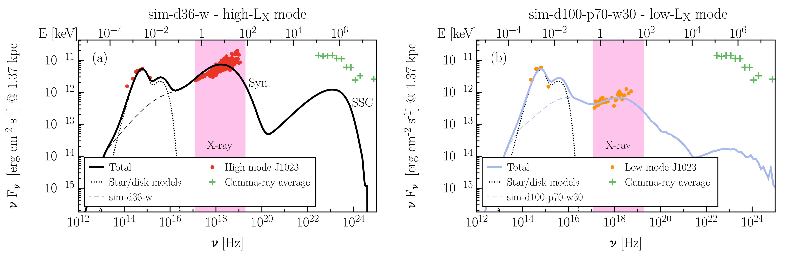
图注：Composite SEDs of our models show good agreement with the multiwavelength spectra of low- and high-$\Lx$ modes. Optical to gamma-ray spectral energy distributions from \(\lowmdot{}\texttt{-w}\) corresponding to $100\%$ wind regime in the lower-density run, which we attribute to the high mode (\textbf{panel a}) and from \(\highmdot{}\texttt{-p70-w30}\) corresponding to $70\%$ propeller and $30\%$ wind regimes in the higher-density run, which we attribute to the low mode (\textbf{panel b}). Contributions include the time-averaged GRMHD (dashed), optical companion, and thermal thin-disk models (dotted). We fixed the density normalization to fit the high mode 0.5--10~keV flux (Sec.~\ref{sec:setup}). For the \(\lowmdot{}\texttt{-w}\) model, we indicate the dominant emission mechanism contributing to different parts of the SEDs, synchrotron and synchrotron self-Compton. X-ray (orange/red dots) and gamma-ray (green pluses; averaged over both modes) data for PSR J1023+0038 are taken from \(\citealt{baglio_matter_2023}\) and \(\citealt{papitto_pulsating_2019},\) respectively, and plotted for comparison. The X-ray band (0.5-80~keV) is shown in pink.
对应解读：对应“不同状态的光谱能量分布图”、关键图表导读中的图3，以及模型拟合段落关于高模态接近纯风加热态、低模态由混合谱复现的核心判断。
入选理由：这是全文最直接连接模拟与观测的核心 SED 图，同时给出高 X 射线模态的 100% wind 模型和低 X 射线模态的 70% propeller + 30% wind 混合模型，并叠加 PSR J1023+0038 的 X 射线与伽马射线数据。它最能支撑日报中关于谱形、归一化、同步辐射/SSC 成分和低高模态对应关系的解读。
来源与置信度：\(arxiv_source\)；high；\(arxiv_source\) / \(paper_tmsp_modes.tex\):figure[4]
Fig08
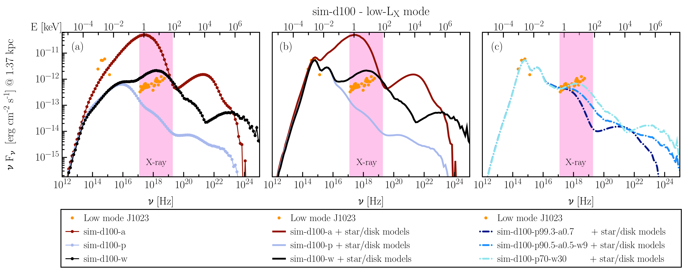
图注：Combinations of propeller and wind regimes in the \(\highmdot{}\) model could reproduce the observed low mode data. \(\textbf{(panel (a))}\): low mode J1023 data (orange dots) and individual SEDs of the accretor, propeller, and wind ($\Rm \, {>} \, \Rlc$) regimes. \(\textbf{(panel (b))}\): low mode J1023 data (orange dots) and full SEDs (GRMHD data and star/disk models). \(\textbf{(panel (c))}\): low mode J1023 data (orange dots) and combinations of the full SEDs between the accretor, propeller, and wind regimes. The data are best reproduced with the combination of $70\%$ propeller and $30\%$ wind regimes (\highmdot{}\texttt{-p70-w30}).
对应解读：对应“低模态混合谱图”、关键图表导读中的图4，以及模型拟合段落中特别强调的 70% 推进器态与 30% 风加热态混合比例。
入选理由：这张图专门展示低模态数据与 accretor、propeller、wind 单独谱及其组合的比较，并明确指出最佳复现为 highmdot-p70-w30。它比一般 SED 图更适合检查低模态是否真的需要混合态、纯推进器是否存在系统偏差，以及 70/30 占空比的物理含义。
来源与置信度：\(arxiv_source\)；high；\(arxiv_source\) / \(paper_tmsp_modes.tex\):figure[8]
Fig02
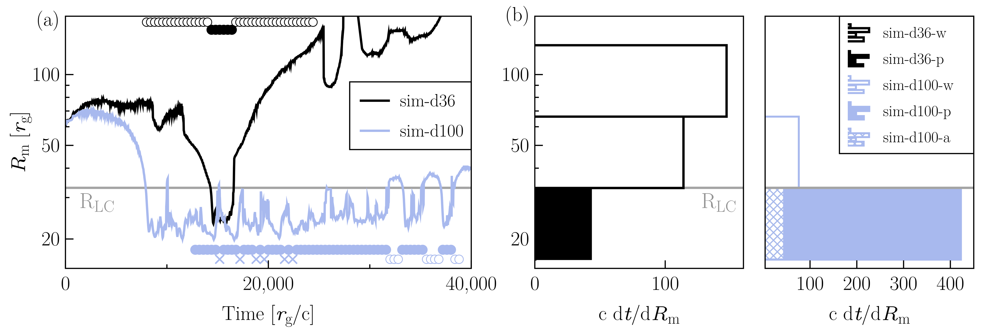
图注：The time evolution (panel a) and histogram (panel b) of the magnetospheric radius, $\Rm$, shows bimodality with respect to the light cylinder radius, $\Rlc$, and the main accretion regime depends on the initial torus density. \(\textbf{(panel a):}\) In the \(\highmdot{}\) model (light blue) $\Rm$ lies mainly between $R_\mathrm{co} \, {\simeq} \, 10.3 \, r_\mathrm{g}$ (located outside the plotted range) and $\Rlc \, {\simeq} \, 33.3\, r_\mathrm{g}$. In the \(\lowmdot{}\) model (black), the pulsar wind pushes the flow out of $\Rlc$ most of the time. \(\textbf{(panel b):}\) Histogram showing the time spent for each binned value of $\Rm$ and its link to the accretion regime denoted {\rq}w{\lq} for {\lq}wind{\rq}, {\rq}p{\lq} for {\lq}propeller{\rq} and {\rq}a{\lq} for transient accretion columns (or simply {\lq}accretor{\rq}), among the epochs covered by our \(\textsc{grmonty}\) post-processing step. The instantaneous times of each post-processed GRMHD snapshot are indicated by the small boxes on panel (a), where we follow the same legend as in panel (b): filled symbols for propeller, empty symbols for wind and crosses for accretor.
对应解读：对应“模拟密度、磁场或磁通结构图”和“时间序列或模态切换诊断”，也对应关键图表导读中关于盘内缘相对光柱半径位置的图1解读。
入选理由：虽然候选中没有全局二维快照图，但 Fig02 直接给出磁层半径随时间演化及其直方图，并标注相对于光柱半径的 wind、propeller、accretor 区域。它是确认两类状态是否确实由盘内缘位于光柱外/内来划分的关键动力学证据。
来源与置信度：\(arxiv_source\)；high；\(arxiv_source\) / \(paper_tmsp_modes.tex\):figure[2]
Fig09
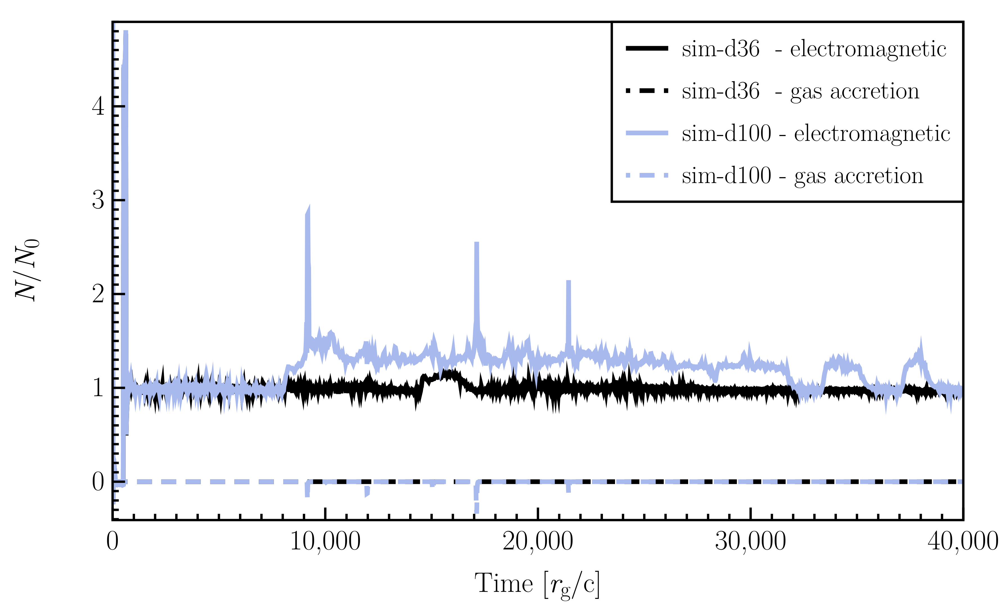
图注：Time evolution of the gas accretion (dashed line) and electromagnetic (full line) torque applied to the NS, normalized to the isolated value, in models \(\lowmdot{}\) (black) and \(\highmdot{}\) (light blue).
对应解读：对应“电磁力矩或自转变慢率图表”、关键图表导读中的图5，以及模型拟合段落中关于有盘态平均自转变慢率只比无盘射电脉冲星态高几个百分点的检验。
入选理由：该图展示气体吸积力矩和电磁力矩随时间变化，并以孤立脉冲星值归一化，是判断推进器态是否带来额外自转变慢、以及平均力矩是否与观测量级相容的主要证据。它能补足单纯谱拟合无法约束的动力学退化。
来源与置信度：\(arxiv_source\)；high；\(arxiv_source\) / \(paper_tmsp_modes.tex\):figure[9]
Fig03
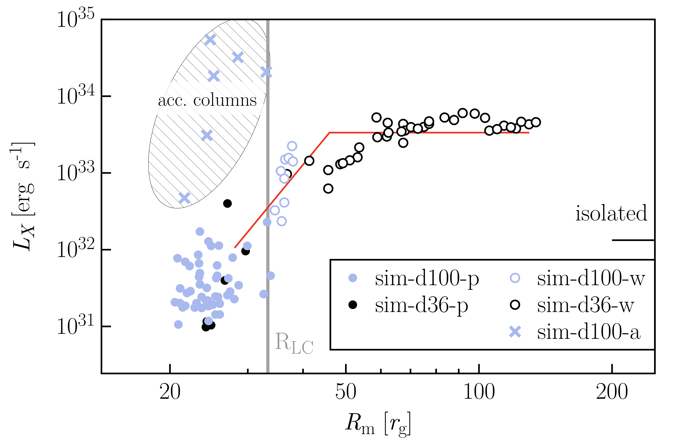
图注：Simulated X-ray luminosity, $\Lx$, increases monotonically with increasing magnetospheric radius, $\Rm$, and saturates at $\Rm\gtrsim \Rlc$. We attribute this to the wind luminosity intercepted by the disk and the wind dissipated fraction both increasing with increasing $\Rm$ and saturating once $\Rm$ is outside the light cylinder (Appendix~\ref{app:dissipation}). Data from the \(\highmdot{}\) model are shown in light blue, data from the \(\lowmdot{}\) model are shown in black, and the average X-ray luminosity of the isolated pulsar model is indicated with the short horizontal line. Symbols follow the same legend as in Fig.~\(\ref{fig:rdisk}.\) The red curve is plotted to guide the eye across the correlation. The few accretion column events generally overshoot the observed X-ray luminosity (see the last paragraph of Sec.~\ref{sec:res_1}).
对应解读：对应“能量沉积或发射率分布图”和关键结果中光柱外截断状态更亮、X 射线 luminosity 随磁层半径增大并在光柱外饱和的论证。
入选理由：这张图给出 X 射线光度与磁层半径的直接相关性，显示 Rm 越接近或超过 RLC，Lx 越高并趋于饱和。它是支持“风加热盘导致高模态更亮”的定量桥梁，能把动力学状态划分与辐射输出联系起来。
来源与置信度：\(arxiv_source\)；high；\(arxiv_source\) / \(paper_tmsp_modes.tex\):figure[3]
Fig06
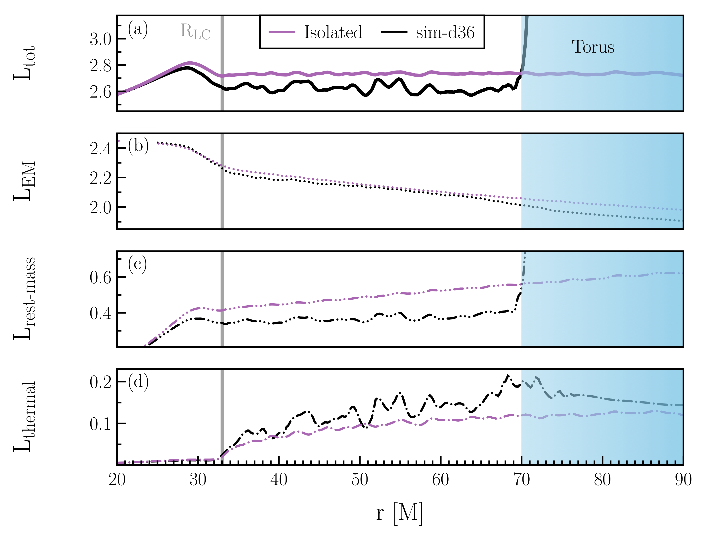
图注：Pulsar wind--disk collision leads to enhanced pulsar wind power dissipation, as seen through a larger value for $L_\mathrm{thermal}$ in presence of a torus located outside $\Rlc$ (black curves) than for an isolated pulsar (purple curves) on panel (d). We show the total luminosity (\textbf{panel a}), the electromagnetic luminosity (\textbf{panel b}), the rest-mass luminosity (\textbf{panel c}) and the thermal luminosity (\textbf{panel d}). The black curves correspond to the early phase of the \(\lowmdot{}\) simulation (time-averaged over $t \, {\in} \, [1,000;2,000] \, r\mathrm{_g/c}$ to spatially distinguish the torus energy content and the purple curves correspond to the isolated pulsar case.
对应解读：对应“能量沉积或发射率分布图”以及关键图表导读中关于脉冲星风与盘碰撞、热化功率增强的检查。
入选理由：该图比较有盘风碰撞情形与孤立脉冲星的总光度、电磁光度、静质量光度和热光度，显示盘位于光柱外时 thermal luminosity 增强。它虽然不是直接的空间发射率图，但能支撑风功率被盘截获并耗散为热能这一物理机制。
来源与置信度：\(arxiv_source\)；high；\(arxiv_source\) / \(paper_tmsp_modes.tex\):figure[6]
强相关工作
这篇工作与过渡毫秒脉冲星的同类源观测直接相关，尤其是 \(\mathrm{PSR\ J1023+0038}\)、\(\mathrm{XSS\ J12270-4859}\) 和 \(\mathrm{IGR\ J18245-2452}\) 这类原型系统。应检索关键词包括 “transitional millisecond pulsar X-ray modes”, “PSR J1023+0038 high low mode”, “propeller transitional millisecond pulsar”, “pulsar wind disk interaction”, “spin-down rate disk state”。这些观测论文通常给出低、高模态占空比、X 射线脉冲、光学紫外关联和自转变慢率，是检验本文模型的直接外部约束。
理论上，本文连接了三条传统脉络：磁化中子星的盘截断和推进器理论、旋转供能脉冲星风理论，以及低光度吸积流的同步辐射和康普顿辐射。相反观点或张力主要来自更强调表面吸积、磁层门控或盘内湍流不稳定的模型；这些模型可能也能解释部分模态切换，但往往需要同时面对低光度、高模态脉冲和自转变慢增强的联合约束。建议检索 “magnetospheric gating tMSP”, “weak propeller PSR J1023”, “accretion-powered pulsations transitional millisecond pulsars”, “radio ejection transitional MSP”。
同一事件 / 同类源线索：
- https://arxiv.org/abs/2607.19113
- https://arxiv.org/pdf/2607.19113
- https://www.atnf.csiro.au/research/pulsar/psrcat/
相似工作：
（未提供）
基础理论 / 方法工作：
- https://ui.adsabs.harvard.edu/abs/1969ApJ...157..869G/abstract
- https://ui.adsabs.harvard.edu/abs/1973A%26A....24..337S/abstract
- https://ui.adsabs.harvard.edu/abs/1975A%26A....39..185I/abstract
相反观点 / 张力线索：
（未提供）
9. Gas Motions in Hydra-A: XRISM Constraints on ICM Kinematics Across Jet-Inflated Cavities
- 来源：arXiv / astro-ph.HE
- 链接：https://arxiv.org/abs/2607.18315v1
- 作者：Anwesh Majumder, B. R. McNamara, P. E. J. Nulsen, H. Russell, T. Rose, T. Heckman, A. Simionescu, A. Fabian
- 评分：novelty 8/10，importance 8/10，relevance 7/10，final 8.65/10
- 推荐理由：XRISM深观测Hydra-A喷流空泡区域，利用高光谱分辨率约束ICM速度弥散和AGN反馈能量耦合；对X射线高能天体物理和仪器科学有较高价值。
中文题目：Hydra-A 中的气体运动：XRISM 对喷流充胀空腔周围星系团介质运动学的约束
做了什么：这篇论文用两次深度 XRISM 观测测量 Hydra-A 星系团中心和北侧喷流方向热等离子体的视向速度结构，并用 Chandra 的高角分辨率图像处理 XRISM 视场内的空间—光谱混合。核心结果是：北侧大尺度空腔和激波区域的速度弥散为 \(\sigma_v=140^{+30}_{-20}\,\mathrm{km\,s^{-1}}\)，与中心区域的 \(\sigma_v=162\pm10\,\mathrm{km\,s^{-1}}\) 接近；但中心东北象限达到 \(\sigma_v=260\pm50\,\mathrm{km\,s^{-1}}\)，显著高于多数已测团核。作者认为小尺度上喷流能高效驱动气体运动，而沿北侧喷流到 \(95\)--\(317\,\mathrm{kpc}\) 的大尺度区域，气体动能比空腔焓低约一个数量级，说明机械能并不主要以湍动形式沉积在那里。
为什么重要：星系团冷核中的 AGN 反馈是否能以“温和、各向异性、可持续”的方式抵消辐射冷却，关键取决于喷流能量如何在热气体中分配：是进入空腔焓、激波、声波、湍流，还是被大尺度输运带走。XRISM 的微量热计可以直接用 Fe 线宽和线心位移测量 \(\sim100\,\mathrm{km\,s^{-1}}\) 量级的视向运动，这是过去 CCD 光谱很难做到的。Hydra-A 是最经典的强喷流—强空腔系统之一，因此它提供了一个比 Perseus 更“剧烈”的反馈实验场。
理论 / 观测 / 仪器方法价值：本文的方法价值在于把 Chandra 的空间信息和 XRISM 的能量分辨率结合起来，显式处理 XRISM 点扩散函数和多温度结构造成的空间—光谱混合。科学价值在于给出了空腔内外不同尺度的气体运动能量预算：中心 \(<95\,\mathrm{kpc}\) 内气体动能可与空腔焓相比，而北侧 \(95\)--\(317\,\mathrm{kpc}\) 的动能明显不足，提示喷流能量从小尺度到大尺度的耦合效率并非常数。对观测方法而言，它展示了 XRISM 对复杂团核做二维或象限级运动学分解的实际可行性和困难。
为什么应该关注：如果你关心 AGN 反馈、冷核星系团、星系团介质湍流、XRISM/Resolve 数据分析，或者用空腔功率校准黑洞机械能注入，这篇都值得读。它不是简单报告一个线宽，而是把速度弥散、体流、空腔焓、激波传播和金属富集结构放在同一张能量账本里。尤其值得注意的是，Hydra-A 中最强的局部线宽出现在中心东北的金属富集亮结构，而不是所有空腔边缘都普遍高湍动，这会影响我们对喷流搅拌、气体抬升和冷却流抑制机制的直觉。
展开详细解读：文章讲解、背景、理论、重点章节、图表与相关工作
文章详细讲解
科学问题：Hydra-A 是低红移强冷核星系团中最著名的 AGN 反馈实验室之一，中心射电源在 X 射线大气中吹出了多代空腔，并伴随大尺度椭圆形激波和金属富集结构。过去 Chandra 和 XMM-Newton 已经清楚显示了空腔、亮边、冷锋和抬升气体，但这些图像主要告诉我们热气体在哪里、温度和金属丰度如何分布；它们很难直接回答热等离子体以多大速度运动。本文要解决的问题是：喷流充胀空腔时，究竟在多大半径范围内把机械能转化成星系团介质的随机运动或体流？这种运动能否成为抵消冷却的主要能量通道？
作者怎么做：论文使用两次深度 XRISM/Resolve 指向，分别覆盖 Hydra-A 的中心区域和北侧沿喷流方向的外侧空腔与激波区域。XRISM 的优势是能以数电子伏量级能量分辨率分辨 Fe-K 复合线，从线宽提取视向速度弥散 \(\sigma_v\)，从线心偏移提取体速度 \(v_{\rm los}\)。但 XRISM 的角分辨率远差于 Chandra，因此作者引入 Chandra 图像和光谱先验，对不同空间成分在 XRISM 视场中的混合进行建模，而不是把整个视场当成单一均匀等离子体。中心指向还被进一步分成若干象限，以检查空腔、金属富集亮结构和可能的气体晃动是否对应不同运动学。
关键结果：北侧指向得到 \(\sigma_v=140^{+30}_{-20}\,\mathrm{km\,s^{-1}}\)，中心整体为 \(\sigma_v=162\pm10\,\mathrm{km\,s^{-1}}\)，二者量级接近，说明大尺度北侧区域并非完全静止。但更有信息量的是空间不均匀性：中心东北象限的速度弥散达到 \(\sigma_v=260\pm50\,\mathrm{km\,s^{-1}}\)，而其他象限多为 \(\sigma_v\leq120\,\mathrm{km\,s^{-1}}\)。东北象限包含一个 X 射线较亮、金属富集的结构，可能是前一代空腔尾迹中被抬升的低熵富金属气体。西南象限还出现 \(-100\pm30\,\mathrm{km\,s^{-1}}\) 的朝向我们的体流，作者倾向于把它与团核气体 sloshing 或大尺度不对称运动联系起来。
能量解释是本文最值得关注的部分。作者把测得的速度弥散转换为热气体动能，并与空腔焓比较。中心区域的动能与空腔焓同量级，说明在 \(<95\,\mathrm{kpc}\) 的尺度上，喷流对周围介质的机械搅动相当有效。相反，在北侧 \(95\)--\(317\,\mathrm{kpc}\) 范围内，气体动能约比空腔焓低一个数量级，意味着大尺度空腔和激波携带的能量并没有等比例转化为局部湍动。作者还指出，北侧弥散可能部分来自大尺度 cocoon shock front 的运动，而不一定是各向同性湍流。
局限和下一步：XRISM 的空间分辨率限制使得所有小尺度运动学结论都依赖空间—光谱混合模型；多温度结构、离子温度与电子温度是否完全平衡、Fe 线复合结构和仪器线展宽都会影响 \(\sigma_v\) 的解释。此外，观测只能测视向分量，若速度场主要在天球面内，实际动能会被低估；反过来，如果线宽主要来自多个冷/热成分的线心混合，则湍流可能被高估。下一步需要更多 XRISM 指向、与更深 Chandra 温度/丰度图联合、并结合喷流—ICM 数值模拟，把空腔年龄、激波速度、抬升金属分布和速度场放进统一动力学模型。
关键结果是怎么做出来的
本文最重要的证据链从样本选择开始：对象不是一组星系团，而是一个强反馈个例 Hydra-A；观测区域也不是整个团，而是两个物理上有明确含义的 XRISM 指向。中心指向覆盖核区、内层空腔和多相低熵气体，北侧指向覆盖沿喷流方向的外侧空腔、激波和大尺度 cocoon 结构。这样的设计使论文可以直接比较小尺度 \(<95\,\mathrm{kpc}\) 与北侧大尺度 \(95\)--\(317\,\mathrm{kpc}\) 上的运动能量分配，而不是只给出一个全局平均线宽。
统计量的核心来自高分辨率 X 射线谱线拟合。作者利用 Fe-K 复合线附近的线宽和线心，联合热等离子体模型、仪器响应、背景和空间混合矩阵，拟合每个区域的 \(v_{\rm los}\) 与 \(\sigma_v\)。中心整体的 \(\sigma_v=162\pm10\,\mathrm{km\,s^{-1}}\) 误差很小，说明统计质量较高；北侧 \(\sigma_v=140^{+30}_{-20}\,\mathrm{km\,s^{-1}}\) 的不确定度较大但仍足以排除完全无运动的简单图像。象限分解中，东北象限 \(\sigma_v=260\pm50\,\mathrm{km\,s^{-1}}\) 是主要异常值，其他象限 \(\sigma_v\leq120\,\mathrm{km\,s^{-1}}\) 则支持速度场强烈不均匀。
显著性判断不是单靠肉眼看谱线变宽，而是通过有无额外速度展宽、不同空间模板、不同区域划分的拟合比较来完成。读者应重点检查论文中全视场与象限拟合的参数表，以及展示置信区间的 \(v_{\rm los}\)--\(\sigma_v\) 轮廓图。如果东北象限的高 \(\sigma_v\) 在不同背景、不同 Chandra 空间模板和不同多温度假设下都保持，那么它更可能是真实动力学信号；如果它只在某个温度/丰度模型下出现，就可能是未解析多相结构造成的线形伪展宽。
能量预算是把观测量转成物理结论的关键一步。作者用气体质量和速度弥散估计动能，并与空腔焓 \(4pV\) 比较。中心区域动能与空腔焓可比，支持喷流在内区高效搅动介质；北侧动能低约一个数量级，说明外侧空腔的能量更多保存在浮力势能、激波、声波或未热化的机械结构中，而不是局部随机运动。支撑这一点的图表应包括速度弥散随区域变化、空腔/激波几何示意、以及动能与空腔焓的对比表。
主要系统误差包括 XRISM 点扩散函数把不同半径气体混入同一谱、Chandra 模板对真实三维气体分布的投影近似、多温度等离子体对 Fe 线形的影响、仪器能标漂移对 \(v_{\rm los}\) 的影响，以及非热背景或 AGN 点源贡献。稳健性上，读者应寻找作者是否改变背景模型、排除特定能段、改变空间分区、允许不同温度成分独立速度、以及比较不同混合矩阵。只有这些检验都不过分改变 \(\sigma_v\)，中心东北高弥散和北侧中等弥散才应被当成可靠结果。
这篇文章的结论强度属于“精确测得某些视向运动分量，并给出有物理指向性的能量解释”，而不是“完整重建 Hydra-A 三维湍流场”。它的优势是 XRISM 线宽精度和 Chandra 形态信息结合得好；限制是视向投影和空间混合无法完全消除。因此，最合理的读法是把 \(\sigma_v\) 当作喷流—ICM 相互作用的局部诊断，而不是直接等同于全三维各向同性湍流速度。
展开背景、理论、公式、模型、章节和图表导读
背景知识
Hydra-A 是一个以中心强射电源 3C 218 为核心的冷核星系团，红移低、X 射线亮、射电喷流和 X 射线空腔结构非常清楚。它长期被用作研究 AGN 机械反馈的标尺源：中心黑洞通过相对论喷流把能量注入热的星系团介质，喷流末端和射电等离子体膨胀形成低 X 射线表面亮度的空腔，空腔上浮、驱动激波并抬升低熵富金属气体。
历史上，对 Hydra-A 的关注主要来自成像证据。Chandra 揭示了内外多代空腔、亮边和大尺度激波；低频射电图像显示老电子等离子体延伸到几百千秒差距尺度。这些观测共同说明 AGN 注入的总机械能非常大，足以与团核辐射冷却损失竞争。但成像只能通过空腔大小、环境压强和浮升时间间接估计功率，不能直接测量热气体的速度场。
为什么现在值得重新看，是因为 XRISM/Resolve 恢复了 Hitomi 在 Perseus 团核展示过的微量热计能力。Hitomi 的关键发现是 Perseus 团核虽然被 AGN 扰动，但热气体视向速度弥散只有 \(\sim100\)--\(200\,\mathrm{km\,s^{-1}}\)，湍压不是主导支撑项。Hydra-A 的喷流功率和空腔系统更强、更不对称，因此它是检验“强反馈是否必然产生强湍流”的自然下一步。
该领域一个常见误区是把 X 射线空腔附近的复杂形态直接等同于强湍流。实际上，空腔可以通过近似层流的膨胀、浮升和激波传播输运能量；明亮弧状结构可以是低熵气体被抬升后的投影，也可以是冷锋或 sloshing 的结果。另一个误区是把谱线宽度完全解释为湍流速度弥散。在线宽中，多温度结构、不同空间区域线心不同、仪器响应和热展宽都可能贡献，必须通过模型分解。
还有一个背景问题是 AGN 反馈能量如何热化。空腔焓 \(4pV\) 通常被当作喷流对环境做功的最低估计，但这部分能量可以走很多通道：抬升势能、弱激波耗散、声波黏滞耗散、湍流级联、宇宙线和磁场能量。本文关注的正是其中“热气体运动”这一通道在不同尺度上的占比，这对冷却流问题和团质量测量中的非热压支撑都有影响。
基础理论 / 方法脉络
基本物理图像是：星系团介质是温度 \(kT\sim\mathrm{keV}\) 的稀薄碰撞等离子体，处在星系团引力势中并以 X 射线辐射冷却。中心 AGN 喷流把相对论等离子体注入 ICM，形成低密度射电泡。泡的膨胀推动周围热气体，产生压缩波、弱激波、剪切和抬升流；这些运动在观测上表现为谱线线心偏移和额外线宽。
热等离子体发射的 Fe-K 线具有若干展宽来源。离子热运动给出热展宽，仪器响应给出能量分辨率展宽，空间上不同速度成分混合会造成线形加宽，真正的随机或湍流运动也会加宽。XRISM/Resolve 的价值在于其能量分辨率足以把 \(100\,\mathrm{km\,s^{-1}}\) 量级的 Doppler 展宽从 Fe 线中分辨出来，但前提是仪器能标和空间混合模型足够可靠。
本文使用的核心观测量是视向体速度 \(v_{\rm los}\) 和视向速度弥散 \(\sigma_v\)。前者来自线心相对于系统红移的偏移，后者来自扣除热展宽和仪器展宽后的剩余线宽。因为观测只测视向分量，若速度场各向同性，三维随机动能通常与 \(3\sigma_v^2\) 成正比；若速度场沿喷流或空腔表面有强各向异性，则这种换算会失效。
空间—光谱混合是本文方法的关键。Chandra 可以提供高分辨率表面亮度、温度和金属丰度结构，用来预测不同天空区域有多少光子通过 XRISM 点扩散函数落入某个提取区域。换句话说，XRISM 光谱不是单一空间元的光谱，而是多个 Chandra 定义成分按权重叠加后的光谱。拟合时必须同时考虑这些成分的热模型、速度参数和响应矩阵。
常见退化包括温度结构与线宽的退化、金属丰度与 Fe 线强度的退化、体速度梯度与随机弥散的退化、背景归一化与连续谱的退化，以及气体质量估计与动能估计的退化。特别是在中心东北象限这种多相、金属富集且形态复杂的区域，高 \(\sigma_v\) 可能是真实扰动，也可能部分来自未充分解析的多速度成分叠加；因此稳健性检验比单个最佳拟合值更重要。
公式与推导
第一步从谱线的 Doppler 位移开始。若静止系谱线能量为 \(E_0\)，源的系统红移为 \(z_{\rm sys}\)，气体相对系统速度的视向分量为 \(v_{\rm los}\)，在 \(|v_{\rm los}|\ll c\) 时观测线心可写为
这里 \(c\) 是光速；约定上 \(v_{\rm los}<0\) 通常表示朝向观测者。这个式子说明为什么 Fe-K 线心能直接给出体速度。
第二步是线宽。若速度分布近似高斯，视向随机速度弥散 \(\sigma_v\) 对能量宽度的贡献为
其中 \(E_{\rm line}=E_0/(1+z_{\rm sys})\) 是红移后的线能量。Fe-K 线能量高，因此同样的 \(\sigma_v\) 会产生较大的 \(\sigma_E^{\rm turb}\)，这是 XRISM 测团核运动学常用 Fe 线的原因。
第三步要扣除离子热展宽。对质量为 \(m_i\) 的离子，在离子温度 \(T_i\) 下，一维热速度弥散为
对应能量宽度 \(\sigma_E^{\rm th}=E_{\rm line}\sigma_{v,\rm th}/c\)。这里 \(k_{\rm B}\) 是玻尔兹曼常数。若假设 \(T_i=T_e\)，就可用 X 射线连续谱测得的电子温度估计热展宽；若离子和电子不完全平衡，则会引入系统误差。
第四步把各种近似高斯展宽合并。观测到的谱线宽度可概括为
其中 \(\sigma_E^{\rm inst}\) 是仪器响应，\(\sigma_E^{\rm mix}\) 是不同空间或温度成分混合造成的有效展宽。论文的关键并不是简单测 \(\sigma_E\)，而是尽量用响应标定和 Chandra 空间模板约束前三项以外的混合项。
第五步描述空间—光谱混合。XRISM 第 \(j\) 个提取区域的预测计数谱可写为
其中 \(i\) 标记 Chandra 定义的天空成分，\(M_{ji}\) 是由点扩散函数和区域几何决定的混合矩阵，\(R_j(E,E')\) 是响应，\(S_i\) 是热等离子体源谱，\(\theta_i\) 包括温度、丰度、归一化、\(v_{\rm los}\) 和 \(\sigma_v\)，\(B_j\) 是背景。这个式子是理解本文方法的中心。
第六步是统计拟合。对于能道 \(k\) 中观测计数 \(n_k\) 和模型计数 \(\mu_k\)，常用 Poisson 似然或 Cash 统计量
通过最小化 \(C\) 或采样后验，可以得到 \(v_{\rm los}\) 与 \(\sigma_v\) 的置信区间。比较允许 \(\sigma_v>0\) 的模型和固定低弥散模型时，\(\Delta C\) 给出近似显著性诊断，但边界条件和系统误差会使简单 \(\chi^2\) 解释变得不完全可靠。
第七步把速度弥散转成动能。若气体质量为 \(M_{\rm gas}\)，随机速度近似各向同性，则
如果只想保守地计算视向分量，则使用 \(E_{\rm los}=M_{\rm gas}\sigma_v^2/2\)。本文比较中心和北侧动能时，隐含的关键假设就是从观测视向分量到三维运动能量的几何换算。
第八步与空腔能量比较。对由相对论等离子体支撑、绝热指数 \(\gamma=4/3\) 的泡，空腔焓为
其中 \(p\) 是周围 ICM 压强，\(V\) 是空腔体积。比较 \(E_{\rm kin}/H_{\rm cav}\) 可以判断喷流机械能有多大比例以气体运动形式存在。本文结论可概括为中心区域该比值接近同量级，而北侧大尺度区域约低一个数量级。
第九步估计非热压支撑。随机运动对应的湍动压强可写为
热压为
其中 \(\rho\) 是质量密度，\(n\) 是总粒子数密度。二者比值 \(P_{\rm turb}/P_{\rm th}\) 决定了湍流对流体静力质量估计和冷核能量平衡的重要性。即使 \(\sigma_v\sim100\)--\(200\,\mathrm{km\,s^{-1}}\)，在几 \(\mathrm{keV}\) 的团气体中通常仍不是主导压强项。
第十步给出激波或声速的尺度判断。热气体声速为
其中 \(\gamma_{\rm gas}=5/3\)，\(\mu\) 是平均分子量，\(m_p\) 是质子质量。由此可定义湍动 Mach 数 \(\mathcal{M}_{\rm turb}=\sigma_v/c_s\)。Hydra-A 的 \(\sigma_v\) 多数为亚声速，说明喷流虽能驱动显著运动，但并未把大部分热气体变成强激波后的高速湍流海。
模型拟合 / 应用方法
本文的拟合对象是 XRISM/Resolve 的高分辨率 X 射线谱，特别是 Fe-K 复合线附近的线心和线形。每个空间成分通常需要热等离子体模型参数，包括温度、金属丰度、红移或视向速度、速度弥散和发射归一化。由于 Hydra-A 团核多温且结构复杂，单温模型可能只是有效描述；论文通过 Chandra 信息和多个空间成分降低这种近似带来的偏差。
似然层面，计数谱适合用 Poisson 统计或等价的 Cash 统计处理。参数估计可通过最小化统计量并扫描置信区间实现，也可通过 MCMC 或嵌套采样得到后验。对读者来说，最该关注的是 \(v_{\rm los}\) 和 \(\sigma_v\) 的二维置信轮廓，因为线心偏移和线宽在多成分混合时会相关：两个相邻区域若有不同体速度，混合后可能表现为一个较大的有效 \(\sigma_v\)。
系统误差主要来自五类。第一是能标校准，能标小偏差会直接投影到 \(v_{\rm los}\)。第二是仪器线展宽和响应矩阵，影响 \(σ_v\) 的绝对标定。第三是背景和非热成分，尤其中心 AGN 或粒子背景若处理不当会改变连续谱。第四是空间混合矩阵 \(M_{ji}\)，它依赖 XRISM 点扩散函数和 Chandra 模板。第五是物理模型不完备，例如多温度、多丰度或非平衡离子温度造成的线形变化。
参数退化在东北象限尤其重要。这个区域既 X 射线亮又金属富集，如果含有被抬升的低熵气体和周围较热气体的叠加，Fe 线复合结构会比单一温度模型更复杂。此时高 \(\sigma_v\) 可以代表真实湍动，也可以代表多个未分辨速度或温度成分的叠加。好的拟合应检查残差是否集中在 Fe 线某些子结构上；若残差呈系统性正负摆动，说明线形模型仍不充分。
实际应用上，这类拟合不仅给出一个速度数值，还可用于 AGN 反馈能量账本。把 \(\sigma_v\) 与气体密度模型结合可以估算动能和湍压；把空腔几何和环境压强结合可以估算 \(4pV\) 焓；二者比较可以判断喷流能量是否主要进入随机运动。本文对中心和北侧区域的对比，正是这种“运动学—能量学”联合诊断的例子。
模型可能失败的地方也很明确：如果真实速度场具有强烈剪切或壳层结构，单个高斯 \(\sigma_v\) 会压缩掉非高斯信息；如果喷流轴接近天球面，XRISM 视向速度会低估沿喷流运动；如果金属丰度结构比 Chandra 模板更细碎，空间混合校正会不完整。因此，未来更理想的做法是把 XRISM 谱线拟合与三维流体模拟投影后的 mock observation 直接比较，而不是只比较少数区域的 \(\sigma_v\)。
重点章节 / 结果段落怎么读
数据/样本部分应先读。重点看两次 XRISM 指向如何覆盖 Hydra-A 的中心和北侧区域，曝光时间、有效视场、筛选准则、背景处理和 Chandra 辅助数据如何选取。这里决定了后面所有速度测量的空间含义：中心结果代表内区空腔和低熵气体，北侧结果代表喷流方向更外侧的空腔、激波和 cocoon。
空间—光谱混合方法部分是全文技术核心。读者应关注作者如何用 Chandra 图像定义空间成分，如何计算这些成分通过 XRISM 点扩散函数进入各提取区域的权重，热模型参数哪些绑定、哪些独立，以及速度参数是否允许区域间变化。这一节决定 \(\sigma_v\) 是真实线宽还是混合伪影。
整体速度结果部分给出中心和北侧的主数值。这里要看 \(\sigma_v=162\pm10\,\mathrm{km\,s^{-1}}\) 与 \(\sigma_v=140^{+30}_{-20}\,\mathrm{km\,s^{-1}}\) 的误差定义、置信水平和系统误差处理。还要看是否有 \(v_{\rm los}\) 的整体偏移，以及该偏移是否相对系统红移或仪器能标稳健。
象限分解结果部分最值得细读。东北象限的 \(\sigma_v=260\pm50\,\mathrm{km\,s^{-1}}\) 是本文最突出的局部发现，其他象限 \(\sigma_v\leq120\,\mathrm{km\,s^{-1}}\) 提供对照。读者应把这一结果与 X 射线亮结构、金属富集、旧空腔尾迹和可能的 sloshing 形态一起看。
讨论和能量预算部分把线宽转化为反馈物理。重点检查气体质量如何估算、空腔焓 \(4pV\) 用了哪些空腔几何和压强、中心与北侧半径范围如何定义，以及“喷流在小尺度高效、在大尺度低效驱动气体运动”的结论是否依赖各向同性速度假设。
附录/稳健性检验若有，应优先看。尤其是背景变化、响应矩阵、能标、不同温度模型、不同区域划分、不同 Chandra 模板对 \(\sigma_v\) 的影响。对于 XRISM 这类空间分辨率有限但光谱分辨率极高的观测，系统检验往往比主表中的最佳拟合值更能决定结论可信度。
建议重点查看的图表
-
XRISM 指向叠加在 Chandra X 射线图像和射电等值线上的图：看中心和北侧视场是否真正覆盖内外空腔、激波边和金属富集结构，注意区域边界与喷流轴的关系。
-
Chandra 定义的空间成分和 XRISM 混合权重图/表：看每个 XRISM 提取区中来自相邻 Chandra 区域的光子比例，特别是中心象限之间是否严重串扰。
-
中心与北侧的 Fe-K 谱线拟合图：看数据点、最佳拟合模型和残差，尤其 Fe 线峰附近是否有系统残差；线宽结论是否由整条线形支持，而不是由少数能道驱动。
-
\(v_{\rm los}\)--\(\sigma_v\) 置信轮廓图：看速度偏移和速度弥散是否退化，东北象限高 \(\sigma_v\) 是否与其他象限显著分离。
-
象限速度结果柱状图或参数表：比较东北、东南、西南、西北象限的 \(\sigma_v\) 和 \(v_{\rm los}\)，注意误差条是否重叠，西南 \(-100\pm30\,\mathrm{km\,s^{-1}}\) 体流是否显著。
-
动能与空腔焓对比图/表：看 \(E_{\rm kin}\)、\(H_{\rm cav}\)、半径范围和气体质量假设，确认中心与北侧“同量级”或“低一个数量级”的判断是否稳健。
-
系统误差或稳健性检验表：看改变背景、温度结构、混合模型后 \(\sigma_v\) 的变化幅度是否小于统计误差，或是否会削弱东北象限高弥散结论。
关键图表逐图导读
图 1：通常应是 Hydra-A 的多波段形态总览，横纵轴为天球坐标或相对中心的角距离，底图可能是 Chandra X 射线表面亮度，叠加 XRISM 视场、提取区域、射电等值线和空腔/激波标记。读图时不要只看哪个区域亮，而要看 XRISM 视场相对于喷流轴、内外空腔和北侧 cocoon 的覆盖。陷阱是 XRISM 视场边界并不等于独立空间分辨单元，点扩散函数会把边界外和相邻区域的光子混进来。
图 2：可能展示 Chandra 空间模板、混合矩阵或不同成分对 XRISM 光谱的贡献。坐标轴可能是区域编号与贡献比例，或天空位置与权重。关键是判断某个象限的谱线到底主要来自本象限，还是有大量来自中心亮核或相邻富金属结构。若东北象限的本地贡献不足而混入中心强线发射很多，那么高 \(\sigma_v\) 的解释需要更谨慎。
图 3：中心与北侧 Fe-K 能段谱线拟合图应重点看。横轴是能量，纵轴是计数率或计数，模型线包含热等离子体、背景和可能的多成分贡献，下方面板是残差。主要结论来自线心和线宽：北侧线宽对应 \(\sigma_v=140^{+30}_{-20}\,\mathrm{km\,s^{-1}}\)，中心对应 \(\sigma_v=162\pm10\,\mathrm{km\,s^{-1}}\)。读图陷阱是 Fe-K 复合线不是单根孤立线，温度和丰度会改变线群形状，因此残差结构比肉眼线宽更重要。
图 4：象限分解的速度参数图可能以点和误差条展示 \(\sigma_v\) 与 \(v_{\rm los}\)。横轴是象限或区域，纵轴是速度。应检查东北象限的 \(\sigma_v=260\pm50\,\mathrm{km\,s^{-1}}\) 是否明显高于其他 \(\sigma_v\leq120\,\mathrm{km\,s^{-1}}\) 的象限，并看西南象限 \(-100\pm30\,\mathrm{km\,s^{-1}}\) 体流是否与零速度分离。陷阱是多个象限并非完全独立，误差条若只含统计误差会低估模型系统误差。
图 5：\(v_{\rm los}\)--\(\sigma_v\) 置信轮廓或似然扫描图应显示二维参数退化。横轴和纵轴分别为体速度与速度弥散，等高线对应常见置信水平。若东北象限的高弥散轮廓远离低弥散区域，结论较强；若轮廓沿对角线拉长，说明体速度梯度和随机展宽可互相替代。读图时要确认 \(\sigma_v=0\) 或低 \(\sigma_v\) 是否在高置信水平下被排除。
图 6：能量预算图或表应把动能、空腔焓和半径范围并列。坐标轴可能是区域或半径，纵轴为能量，常用对数尺度。关键趋势是中心 \(<95\,\mathrm{kpc}\) 内 \(E_{\rm kin}\) 与 \(H_{\rm cav}\) 接近，而北侧 \(95\)--\(317\,\mathrm{kpc}\) 中 \(E_{\rm kin}\) 低约一个数量级。陷阱是 \(E_{\rm kin}\) 依赖气体质量和三维速度假设，\(H_{\rm cav}\) 依赖空腔体积和投影几何，二者误差可能高度非高斯。
论文原图 / 可嵌入图片
Fig05
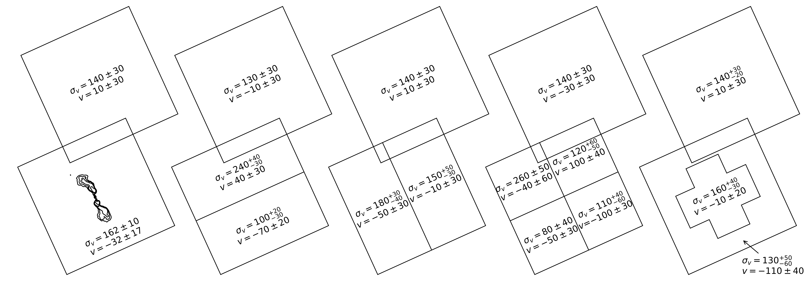
图注：Same as Figure \(\ref{fig:ssm_regions}\) but with velocity dispersions, $\sigma_v$, and the bulk velocity with respect to the central galaxy, $v$, indicated for each region. All values are in units of km s$^{-1}$. The leftmost panel also shows the 5 GHz EVLA (Project 13B-088) radio lobes overlaid on the central pointing for reference.
对应解读：对应“建议重点查看的图表”第5项和“关键图表逐图导读”图4：象限速度结果图，比较各区域的σ_v与v_los。
入选理由：这张图直接把SSM各区域的速度弥散和相对中心星系的体速度标在空间区域上，是检验东北象限σ_v=260±50 km/s是否异常偏高、其他象限是否低弥散以及西南象限约-100 km/s体流是否显著的核心证据；同时叠加5 GHz射电瓣，能把运动学结果与喷流/空腔方向联系起来，科学价值最高。
来源与置信度：\(arxiv_source\)；high；\(arxiv_source\) / Draft.tex:figure[5]
Fig04
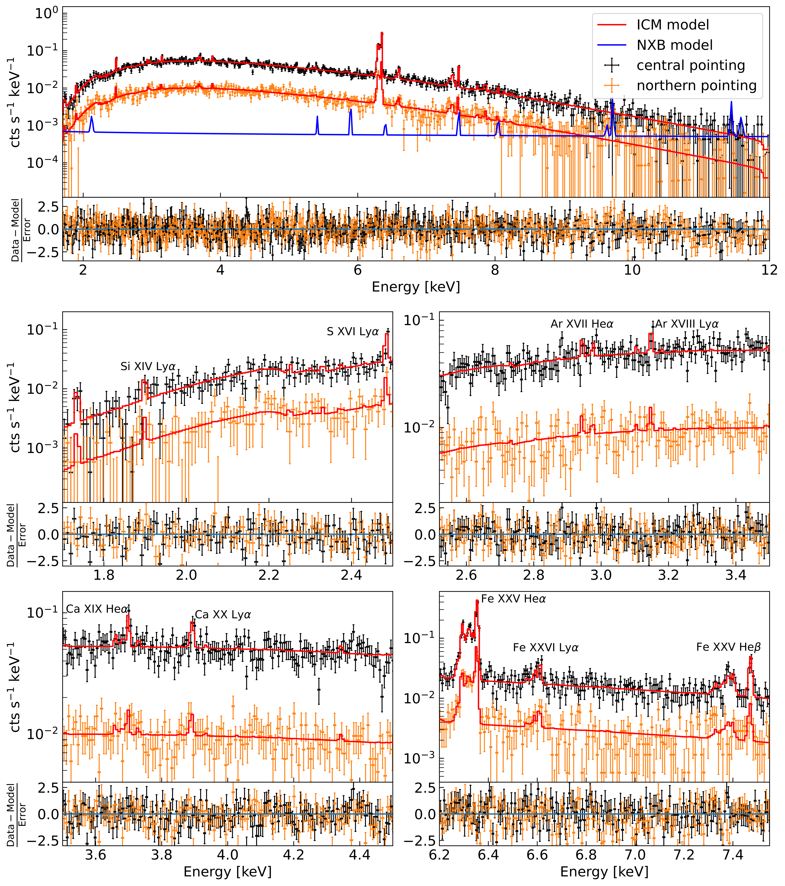
图注：A single \(\texttt{cie}\) fit to the full FOV \(\textit{Resolve}\) spectrum for the central and northern pointings of Hydra-A. \(\emph{Top:}\) The ICM model fit to the $1.7-12.0$ keV band data along with the residuals. We also show the NXB model used for the fit. The spectrum has been binned by a factor of 5 in this energy range for visual clarity. \(\emph{Middle left:}\) The same spectrum zoomed in on the $1.7-2.5$ keV band showing Si and S lines along with the residuals. \(\emph{Middle right:}\) The $2.5-3.5$ keV band showing Ar lines along with the residuals. \(\emph{Bottom left:}\) The $3.5-4.5$ keV band showing Ca lines along with the residuals. \(\emph{Bottom right:}\) The $6.2-7.6$ keV band showing Fe lines from the ICM. The middle and bottom panels have been binned by a factor of 2 for visual clarity.
对应解读：对应“建议重点查看的图表”第3项和“模型拟合”段落：中心与北侧Resolve谱线拟合、Fe-K线形与残差。
入选理由：该图展示中心和北侧完整XRISM/Resolve谱的单温cie拟合、背景模型和多能段残差，尤其包含6.2–7.6 keV Fe线区域；这是判断速度弥散是否由Fe-K线形和残差支持、是否存在系统性残差的最直接图表。
来源与置信度：\(arxiv_source\)；high；\(arxiv_source\) / Draft.tex:figure[4]
Fig01
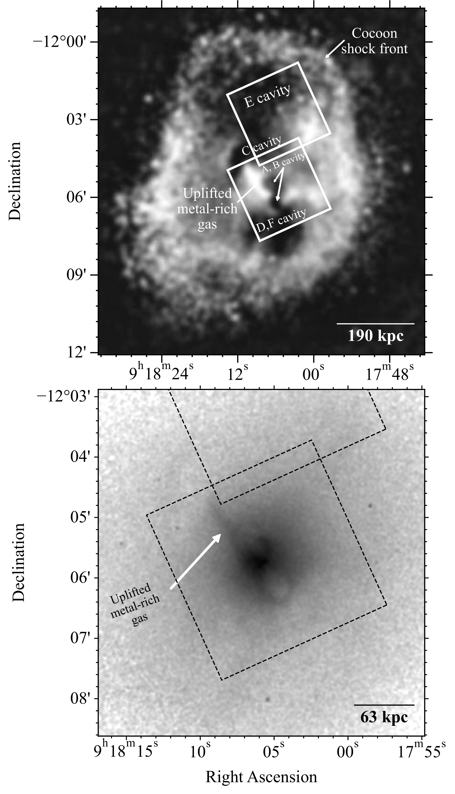
图注：\(\emph{Top:}\) \(\textit{Chandra}\) X-ray residual image centered on the Hydra-A brightest cluster galaxy, from \(\citet{wise_xray_2007}.\) The authors subtracted a beta model fit to the cluster surface brightness profile, revealing multiple pairs of cavities visible out to 220 kpc. White rectangles show the fields of view of the two XRISM \(\textit{Resolve}\) observations analyzed in this paper. The labels mark various features in the image. \(\emph{Bottom:}\) A zoomed-in \(\textit{Chandra}\) image of the cluster containing Hydra-A, in the $0.5-2.0$ keV band. The image has been smoothed with a Gaussian kernel (radius of 5 pixels, $\sigma = 2.5$ pixels). The black dashed rectangles show the fields of view of the two XRISM \(\textit{Resolve}\) observations.
对应解读：对应“建议重点查看的图表”第1项和“关键图表逐图导读”图1：XRISM指向叠加在Chandra X射线图像上的形态总览。
入选理由：这张图显示Hydra-A的Chandra X射线残差结构、多个空腔、标注特征以及两个XRISM/Resolve视场位置，可直接验证中心和北侧观测是否覆盖内外空腔、北侧大尺度cavity/cocoon区域和喷流相关结构，是理解后续空间—谱混合与能量解释的基础。
来源与置信度：\(arxiv_source\)；high；\(arxiv_source\) / Draft.tex:figure[1]
Fig03
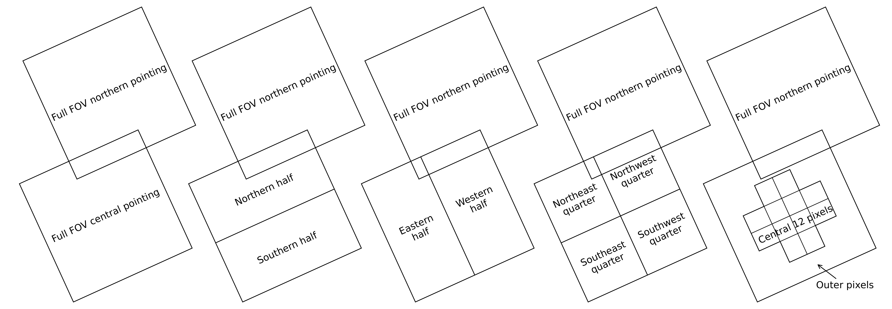
图注：Schematic diagram of the two Resolve pointings and all SSM analysis regions. The central pointing is divided into halves, quarters, and central versus outer pixels, as described in Section \(\ref{sec:spec_fit_model}.\)
对应解读：对应“建议重点查看的图表”第2项和第5项：Chandra/SSM空间分析区域、中心象限划分和XRISM提取区域定义。
入选理由：该图给出两个Resolve指向及SSM分析区域的示意，并明确中心视场如何分成半区、象限以及中心/外侧像素；虽然不是完整混合矩阵或权重表，但它是解释Fig05中各象限速度结果、判断区域独立性和PSF串扰风险的必要空间定义图。
来源与置信度：\(arxiv_source\)；high；\(arxiv_source\) / Draft.tex:figure[3]
Fig06
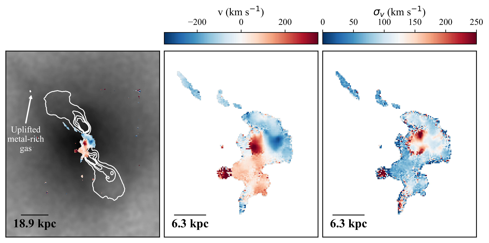
图注：\(\emph{Left:}\) Zoomed-in version of Figure \(\ref{fig:central_and_northern_pointings_outlines}\) (bottom panel), with the 5~GHz EVLA (Project 13B-088) radio lobes and an H$\alpha$ bulk velocity map from MUSE overlaid. \(\emph{Center:}\) Bulk velocity map of Hydra-A from MUSE. This map is also overlaid on the left panel. \(\emph{Right:}\) Velocity dispersion map of Hydra-A from MUSE. In the velocity map, note the corkscrew-like velocity structure in the gas flowing in the wake of the galaxy's radio jets, toward the uplifted metal-rich gas labeled in Figure \(\ref{fig:central_and_northern_pointings_outlines}.\) Close to the galaxy center, there is a large velocity dispersion coincident with the nascent radio lobes.
对应解读：对应详细解读中关于东北金属富集/抬升气体、喷流尾迹和多相气体运动的解释段落。
入选理由：该图用EVLA射电、MUSE Hα体速度图和速度弥散图展示中心区域冷/暖气体与射电喷流、抬升金属富集结构的空间关系，可辅助解释东北高σ_v可能与喷流尾迹和被抬升气体有关；但它不是XRISM谱线拟合或ICM速度参数的主证据，因此排序低于XRISM结果图。
来源与置信度：\(arxiv_source\)；high；\(arxiv_source\) / Draft.tex:figure[6]
强相关工作
同一源方面，Hydra-A 已有大量 Chandra、XMM-Newton、VLA/GMRT/LOFAR 研究，主题包括 X 射线空腔、弱激波、射电叶、金属抬升和冷核反馈。本文应放在这些“同源历史研究”之后阅读：过去工作给出了空腔焓、激波能量和几何年龄，本文首次或至少以 XRISM 级别精度补上热气体视向运动学。检索关键词可用 “Hydra A X-ray cavities Chandra shock”, “Hydra A AGN feedback cavity enthalpy”, “Hydra A metal uplift”.
同类源方面，最直接的比较对象是 Hitomi 对 Perseus 团核的速度弥散测量，以及 XRISM 对其他冷核星系团或椭圆星系团气体运动的早期结果。Perseus 代表“强反馈但低湍压”的原型；Hydra-A 则检验更强喷流和更大空腔是否导致更强湍动。检索关键词可用 “Hitomi Perseus velocity dispersion”, “XRISM Resolve intracluster medium turbulence”, “AGN feedback turbulence galaxy clusters”.
理论和相反观点方面，一类模型强调 AGN 能量通过湍流级联耗散并加热冷核；另一类模型更强调弱激波、声波、浮力波、宇宙线或混合加热。本文的结果对两边都有约束：中心高动能支持局部搅拌重要，北侧低动能则说明不能把所有空腔能量都算成局部湍流。可检索 “ICM turbulence heating”, “sound wave heating cool core clusters”, “cosmic ray heating AGN feedback”, “sloshing cold fronts Hydra A”。
同一事件 / 同类源线索：
相似工作：
基础理论 / 方法工作：
相反观点 / 张力线索：
（未提供）
说明
评分由 LLM 给出初评，再由本地阈值策略过滤；IACT、TeV 伽马射线和高能中微子天文学按重点方向处理。